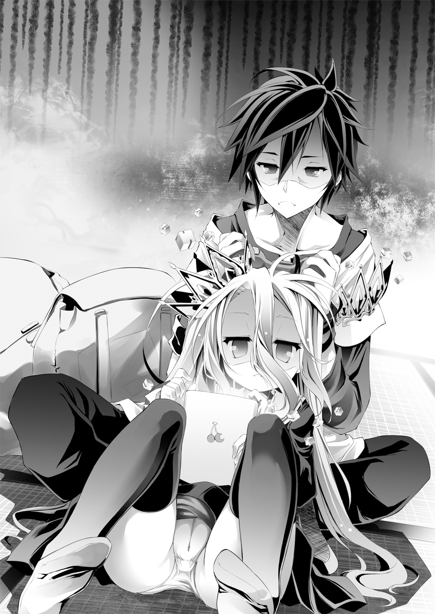

| ノーゲーム・ノーライフ ７ ゲーマー兄妹たちは定石を覆すそうです | |
| 榎宮祐 | |

ノーゲーム・ノーライフ７
ゲーマー兄妹たちは定石を覆すそうです
榎宮祐
本作品の全部または一部を無断で複製、転載、配信、送信したり、ホームページ上に転載することを禁止します。また、本作品の内容を無断で改変、改ざん等を行うことも禁止します。
本作品購入時にご承諾いただいた規約により、有償・無償にかかわらず本作品を第三者に譲渡することはできません。
本作品を示すサムネイルなどのイメージ画像は、再ダウンロード時に予告なく変更される場合があります。
本作品は縦書きでレイアウトされています。
また、ご覧になるリーディングシステムにより、表示の差が認められることがあります。
セオリティカルスタート
──想像してみよう。
あなたは今、とあるオンライン対戦の、ＦＰＳゲームをしている。
立っているのは、丁寧に作り込まれたステージを遠くまで見渡せる場所。
銃を撃ち合う有象無象という、なんとも雅な景色を一望できる、小高い丘の上だ。
人がゴミのようだ、と言わずにおれないその手には──『狙撃銃』がある。
銃器に疎い方、用法がわからない方もどうか安心されたい。
読んで字の如く──『狙撃』するための『銃』だからして。
狙撃、と辞書を引けば〝遠距離から狙い撃つこと〟と表記されてるわけで。
乱射して『突撃』するための『銃』ならば『突撃銃』と表記されるわけで。
よってそれは、どう考えても、遠距離から狙い撃つための銃である。
そう、あなたが見下ろす有象無象を、一方的に狙撃するための、銃である──。
さあっ！ 確認も済んだところで、おもむろに身を潜め、銃を構えて！
ささっ！ 視界に映ったドタマを、軽く二～三十ばかり撃ち抜いてみよう！
するとすぐにでも、割れんばかりの熱い拍手喝采があなたに届くだろうッ!!
──『芋砂くたばれ』や『空気読め初心者』などなどなど......。
多種多様かつ夢のような、熱い熱い、怒りの罵詈雑言が。
──何が起きたか？ 狙撃銃で、狙撃したら、怒られた──以上だ。
意味がわからないだろうか？ 理不尽だと思うだろうか？
奇遇ながら、まったく同じ事を思った、当時は純粋で無垢だった少年は。
どーゆーことやねん......と事切れたようにキーボードに突っ伏し涙した。
──だが、残念ながら、この話には何の理不尽もないのだ。
ただ『定石』に逆らった者がいて、当然の如く批難された──それだけの話だ。
──あらゆるゲームには『定石』がある。
それは仕様とルールの上、論理的に最適化された『最善の打ち手』だ。
ゲームにおいて、絶対不可侵の常識に等しい──それに。
──安易に逆らい、軽率に挑めばどうなるか？ 答えが......これだ。
かつて熱い罵詈雑言に涙した少年──いまや青年となった彼は。
今日も今日とて、ゲーム内で銃を手に駆けずり回りながら......思う。
なるほど、籠城して待ちに徹して狙撃は、有効な戦術だ。
だが誰もがそう考え、籠城狙撃に徹すれば──ゲームが成立しないのだ。
それは、サッカーで延々味方でボールを廻すのが、ルール違反ではないように。
それは、チェスで延々と適当に指し挑発するのが、ルール違反ではないように。
だが対人戦である以上、違反すれば顰蹙を買う──そんな暗黙の了解があるのだ。
──みんな自分が得しようとすると、なるべくしてなる......そんな『定石』が。
それに安易に逆らえば、叩かれて当然、罵られて当然であろう──っ!?
礼儀、礼節、これ人として大事。死体撃ち、ダメ絶対。
......とかなんとか。あーだこーだと。
真っ当に育っていれば納得したかもしれないそんな──『定石』に。
だが何処に出しても恥ずかしい、教科書的ダメ人間に無駄に育った青年は。
──だったら何故、狙撃銃が実装されている、と。
ペッと吐き捨て今日も今日とて、狙撃銃を手に、只さん、千鳥先生をバラ撒いて。
誹謗中傷の中、転々と拠点を変え元気に駆け回り、笑顔で籠城狙撃を続けていた。
その程度でゲームにならないなどと中級者の『定石』なぞ、知ったことではない。
──そも『定石』とは。
強者に打ち勝とうと弱者が編む打ち手──『戦略』であり、そして──ッ！
──と、青年が巡らせた罠と狙撃を突破し迫ってきた上級者のナイフに......、
............え～、なんだっけ？ そうそしてッ！ 『定石』とは！
ことごとく、破られる運命にあるものに過ぎないのである！
こんな風に──自分からワンキルを取った相手を眺めて、青年は白目で笑い。
──『パネェなあんたクソカッケー』とメッセージを打った。
■■■
──あらゆるゲームには『定石』がある。
それは仕様とルールの上、論理的に最適化された『最善の打ち手』だ。
ゲームで全てが決する世界において、絶対不可侵の常識に等しい──それに。
──安易に逆らい、軽率に挑めばどうなるか？ 答えが......これだ。
六十年以上前──やがて『東部連合』と呼ばれることになる、辺境の丘で。
小さな金色狐の少女は、しおれた眼差しで天を見上げ、思った。
朱い月を書き割りのように映す、夜闇を刷いた空の──その果て。
天を貫き地に影を落とす、この星のどこからも仰ぎ見える巨大なチェスの駒。
その頂におわす神は、六〇〇〇年以上前、『十の盟約』を掲げ──謳ったという。
──世界は変わった、と。
だが少女は、その濁った黄金の瞳で思った。
──こん大嘘つきめ、と。
大戦は終結し、戦争はなくなり、権利が保証された。
もう、暴力に怯えて、苦しむ必要など、なくなった。
──嘘だった。
嘘だった、ぜんぶ、ぜんぶ大嘘だった──ッ！
戦争がなくなったなら、どうして獣人種は、こんな内乱を続けている!?
権利が保証されたなら、どうして金色狐は、なにもかも奪われていく!?
暴力に怯え苦しむ必要がなくなったなら──どうして──
──どうしてあては。傷を負い、暴力に怯え、痛みに苦しんでいる、と。
血染めの襤褸をまとった少女は、答えを乞うように涙を落とした。
尾や耳の形、角の有無や、毛色の違いで群れを成し、嘲弄し合う。
他種族に獣人種が搾取されようと、他部族なら『いい気味』と悦に入る。
そんな『定石』を以て獣人種が『内乱』を続けて、既に六〇〇〇年以上。
──こんなの間違っていると。獣人種同士、啀み合いをやめ助け合おうと。
幼い──故に賢い少女が、そう感性のまま常識に異を唱えれば。
〝弱者が口をきくな〟──とちっぽけな悪意に踏み潰された。
そうして、名も無き丘の上、生殺与奪さえ奪われ血に塗れて倒れた少女は。
かすれる意識で、巨大なコマを睨んで──ついに理解した。
──『十の盟約』曰く、許可なく奪うな、侵すな、殺すな。
だがそれは、弱者を守るものでも、まして弱さを許すものでもなかった。
騙し、謀り、脅し──どんな手を使ってでも──。
頷かせてから、殴って奪って侵して殺せ──と、それだけのものだった。
強ければ生き、弱ければ死ぬ。勝てば全てを得て、負ければ全てを失う。
正しかろうと、間違っていようと、敗者には口をきく権利さえ認められない。
それが嫌なら──弱者ではなく、強者になれ、と。
謀略と悪辣を尽くし、他人の権利を好き勝手出来る──全権代理者になれ、と。
──そう、唯一神とやらがご大層に掲げた『十の盟約』は。
その手で、誰かの手を取るより──殴ったほうが、得するようになっている。
その力で、弱者の盾となるより──支配するほうが得するようになっている。
なるほど『定石』──己の利を求めれば、なるべくして支配し合うようになっている。
そんなルールを携えて、言うに事欠いたるは──世界は変わった？
何も変わっていない......殺し合い奪い合う為の、手続きが一つ増えただけ。
そんな絶望を、ついに理解した少女はだが──笑った。
──そも『定石』とは、強者に打ち勝つべく弱者が編む──『戦略』だ。
そしてそれらは、ことごとく──破られる運命にあるものに過ぎない、と。
この悪辣で吐き気を催す、必然という『定石』さえも、例外などない、と。
ならば、と少女は痛みに悲鳴上げる体を黙らせ──その『定石』を。
────破ってみせる、と立ち上がった。
この悪質な常識を覆す──『定石破り』を編み上げてみせる、と。
その『定石破り』もまた、だが破られる運命にあろうと──それでいい。
何回でも、無限回でも、破り破られ続けた『定石』の果てに。
──あるはずだ。
その手で、誰かを殴るより──手を取ったほうが得する、『定石』が。
その力で、弱者を支配するより──盾となるほうが得する、『定石』が。
誰も、誰かに支配されるだけの弱者ではなく。
誰もが自分自身の全権代理者であるほうが得する、そんな『定石』が。
きっと見つかる──いや、見つけてみせる──。
──そうして、その日、その瞬間。
己を貶めた『定石』──その必然を招く制定者を睨んで、少女は決意した。
安易に逆らい、敗れるが『定石』ならば──狡猾に逆らおう、と。
騙し、謀り、脅し、より陰湿に、さらに卑劣に、どこまでも悪辣に徹底的に！
──どんな手を使ってでも、やってのけてみせる、と。
傲慢に、世界を変えたと嘯くあの唯一神さえ出来なかったことを。
世界を、この手で、自分達で──変えてみせる、と。
そう──荒唐無稽な、子供だけが見ることを許される途方もない夢を胸に。
今は昔、名も無い丘の上で、名も無い社の下で、名も無い金色狐の少女は。
あのコマの頂にいるものが、ルール上認めた全てを、お望み通りに使ってでも、と。
そう嗤って、あらゆる『定石』を覆す手を──すなわち。
────前代未聞の『大イカサマ』を敢行した。
そうして、六二〇〇余年続いた内乱を、根こそぎ蹂躙する──『嵐』が生じた。
怒りも憎しみも、わだかまりもしがらみも、全て巻き上げ奪い去る、問答無用の嵐。
飽きずに奪い合う者どもから、争う余地さえ根こそぎ奪う嵐が去った──そこに。
──一つの『国』が生まれた。
かつての少女の夢想──荒唐無稽な理想の、その一端を体現した国。
たった半世紀で、世界有数の大国と知れ渡るに至ったその名は──東部連合。
......幼かった金色狐は、もういない。
彼女は『巫女』と呼ばれ、全ての獣人種から畏れられる存在になった。
そして、彼女が仕組んだ幼き日の『イカサマ』は、今──
「さ～て──んじゃ、そろそろゲームを始めよっか、邪魔な神さま？」
かつて名も無い金色狐が倒れた、名も無い丘、名も無い社。
今は、東部連合、首都・巫鴈──『巫社』という名で呼ばれるその地で。
その場に集った全ての者たちの眼前で。
神と呼ばれた『イカサマ』は──純粋で膨大な〝力〟を渦巻かせていた............
■■■
『汝らの戯言、確かに聞き届けた。然らば証明するがよい──だが』
──と、巫女の唇を動かし言葉を紡いだのは、だが巫女ではない。
それは巫社を、いや首都・巫鴈を──海をさえ越えて。
東部連合はおろか、エルキアさえも包み込まんとする、力の嵐の太源だった。
幼き日の巫女がその身に宿した、イカサマ──『神髄』。
いまや傀儡となった巫女の体を通し、その意志を束ねる者が、告げていた。
『不可避の死が待つ定命のものよ、斯くも死に急ぐ愚願は解り得ぬ』
神霊種をその身に宿した巫女は、靄掛かった意識で、立ち並ぶ者らの姿を視た。
死に急ぐ──と告げた『神』を相手に勝負に臨む──七つの影を。
「点呼ッ!! 一番空童貞十八歳！ 生き急いでるとカッコ良く答えよう！」
飄々と口の端を歪めて、若い黒髪の人類種──空は叫ぶ。
渦巻く神威に、ただ風が鬱陶しそうに手を翳し、笑って続ける。
「神霊種と遊べんだぜ？ こんなチャンス逃がしてちゃゲーマー失格だろ」
「......二番、しろ十一歳......次、待ってられる、ほど暇じゃ......ない......」
その妹、白は──諦めたのか、長い白髪を乱れるに任せて半眼で継ぐ。
「え、えぇぇ!? さ、三番ステファニー・ドーラは死にたくないですわ断固拒否で──」
「四番、空様と白様の不肖の奴隷ジブリール。そんなことより私だけ『定命』ではない件にハブられた傷心にほろりと『天撃』を零しそうで──訂正しろや、と命じます♥」
貴重な常識枠である──人類種の少女ステフが涙目で悲痛に叫ぶも。
天翼種の少女ジブリールが物騒な笑みで遮って、神に命令する。
「五ば～ん、空気と定評あるプラムはぁ、空気を読んで流れに任せますぅ......」
次いで名乗りを上げたのは吸血種の少女──訂正、少年プラム。
薄幸の美少女めいた顔に、諦めに乾いた笑みを貼り付けて答える。そして──、
「......？ ろ、六ばん、です？ いづな──へぅっ」
戸惑いながら、獣人種の少女初瀬いづなが合わせて続けようとし──。
その頭を押さえつけた初老の獣人種の男、初瀬いのと共に跪いた。
「どうかご安心くだされ、巫女様」
神霊種にではなく、封じられた巫女に向けて頭を垂れ、告げる。
「まるで信用出来たものではない連中ながら──故にこそ、お任せくだされ」
「あ、ぜ、ぜってーそのエラソーなカミサマ、ボコ──勝ってやる、ですッ」
取り繕う祖父の仕種を真似たいづなが、戦意も剥き出しに言った。
──以上、七名。
この緊張感とは無縁な、頼りになる要素など絶無な。
それぞれ大きな荷物を背負った、年齢も、種族も、性別もばらばらなこの連中が。
〝神〟に挑むという無謀に打って出んとする、愛すべき阿呆どもである。
唯一神が定めた秩序に成り立つ、絶対的正義たる『定石』を──覆すため。
──ただのコマではなく、対等な相対者として。
その事実に、愛しさすら覚えて、巫女は意識の上で苦笑した。
だが同時に思う──今の彼女には、理解できぬものらだろう、と。
『──では誓うがよい。汝らの言葉を以て、この下らぬ遊戯に汝らの死を認めよ』
淡々と、己らの破滅に至る誓いを自ら宣言せよ、と迫る神霊種に、だが──
「あ、その前に一ついいかな」
と、気の抜けた、場違いなほど緩んだ調子で、空が声を上げた。
ゲーム開始の宣言をしようと手を挙げかけた一同を遮って──問う。
「あんたの名前、まだ聞かせて貰ってないんですけども？」
『──其れを識って如何とする。最底辺の存在よ』
「え？ これからボロクソに負かす相手の名前くらい、覚えとくのが最低限の礼儀だろ」
──衝撃に大気が軋んだ。
その場の誰もが──天翼種のジブリールさえたじろぐ、神の不興。
『十の盟約』がなければ、それだけでこの場の全てが消滅したろう威圧感。
その事実に──巫女は失笑した。この身に『神髄』を宿し、はや半世紀以上。
彼女がここまで〝不機嫌〟を露わにしたことがあっただろうか──まして、
「......え、ちょ──俺なんか特別怒らせること言った？」
呼吸と同じか、煽った自覚さえない──ちっぽけな人類種の軽口に。
「......にぃ、だいじょう、ぶ......特別な、こと......なにも、言ってない」
「で、ですよねぇ!? だって俺、別にそんなつもりじゃ──」
愕然とする空に、親指を立てた白は笑顔で告げる。
「......にぃ......呼吸する、だけで......人、キレさせる......から」
「さ、さすがはマスターッ！ 神を〝憤死〟させようとは、なんたる深謀──ッ!!」
「神様も助走つけて殴る人、ってこれで証明されましたわね......お見事ですわ」
「もぉゲームやめて言葉の暴力で神殺しとかどうですぅ？ 空様なら出来そうですぅ」
「......空、マジぱねぇ、です......」
「クソザル......テメェ、一瞬でもシリアスやると死ぬ病でも患ってんのか......？」
靄がかった意識、和気藹々と騒ぐ彼らの姿に、密かに笑みこぼす。
同時に、今にも途切れそうな思考の中で巫女は──観た。
もはや誓いの言葉も待たずゲーム盤を創り始めた神の視線の一つに乗って。
巫社──そこから広がる巫鴈の摩天楼、そして東部連合の島々の諸都市......。
生涯を費やし築いた祖国を俯瞰して──思う。
──その昔、名も無い金色狐の少女は、夢を見た。
果てなく『定石』を破り続けた──その先を求め造りあげた国に。
──だがもう、そこにかつての少女はいない。
大人になってしまった少女、巫女はある日......気づいてしまった。
──『定石破り』には......明確に果てがあった。
研究し尽くされたゲームが、○×ゲームに至り先手必勝で終わるように。
弱者が如何にあがこうとも、決して盤上からは飛び出し得ない、と。
──〝挑むもの〟と、〝祈るもの〟と。
この世界は、何処まで行っても強者が弱者をコマに遊びに興じる盤で。
その『定石』だけは──覆せない。
他ならぬ幼き日の少女が行った『イカサマ』が、それを証明してしまった。
そう諦観と失望を得た巫女は、だが────
──視点を下ろすと、巫社庭園に意識が戻った。
そこには、かつての少女さえ、夢想だにし得なかった光景があった。
人類種、天翼種、吸血種、獣人種──。
古には武力で殺し合い、今なお別の手段で、奪い合い憎み合うものたち。
力も寿命も、在り方さえ異なる種族の、代表らが一堂に会し、笑っている。
まして全員が、思惑は違えど、目的は同じ──
〝神霊種に挑む〟という正気の沙汰ではない愚行の下に、和気藹々と......。
「──ほな、ほんまに、ええんやね？」
怒りのあまりか、あるいは創造の御業に集中しているためか。
一時、神の支配が緩んだ体は、巫女の意識に従い、その問いを口にした。
「──あての過ち、あん時やってもうた間違いを──正してんか？」
そう、巫女は、ゆっくりと宙に手をさしのべる。
白い腕がふわりと翻れば、掌には、光り輝く『ポーン』が載っていた。
それは紛うことなき『種のコマ』──獣人種のコマだ。
〝あの日の間違い〟を正す──あの日から溜め続けたツケを清算する。
そうしなければ、自分は彼らと一緒に、和気藹々と笑う資格がない。
だが、それが出来るのなら、その時こそ──
「ほしたら......東部連合は──獣人種は、あんたらと共に歩めるよってな」
──と。葛藤と苦悩を続ける巫女に......だが。
「ふむ......巫女さんがナニ間違ってシリアスやってんのか、正直俺にはわからんが」
シリアスやると死ぬ病を疑われる男は──威風堂々と。
「正せってんなら、まず俺らにシリアスやってる間違いから正さして貰おうか!?」
森羅万象そのものたる神霊種に挑む身で──〝シリアス拒否〟を叫んだ。
巫女の悩みも葛藤も知らぬことと──あるいは知った上でか。
まさしく子供そのもののような瞳に、ただ期待を灯した兄妹は、
「俺らは幸運にも！ このメンツで神霊種とゲームをする機会に恵まれたッ!!」
「......そし、て......ゲームする、なら......当然、しろ達、勝つ......よって──」
「あったり前に！ ぁごく自然に必然的に！ 東部連合も神霊種もその他諸々細けぇもんまとめてエルキア連邦がゲット!! それ以上も以下もない──わかりやすいだろ？」
──大人はムツカシイこと考えるなあ、と感慨にふける子供の顔で。
巫女の瞳には、もはや映らなくなったものを──確かに映した瞳で。
「メンドくせぇこと、抜きにしようぜ。この世界──〝ゲーム〟だぞ？」
強烈な意志──ただ愉しげな色を宿す二対の瞳は語る。
「くっだらねぇことに、何処まで本気になれるかってアホさ競う勝負、だろ？」
「......だか、ら......しろ達......負ける、なんて......あり得ない......の」
「一番のアホを決める遊び──〝アホさ勝負〟じゃ神にこそ負ける筋はないね」
──ただそれだけの、単純な『遊び』だと。
強者も弱者も、ただ互いに、挑み挑まれた──結果論に過ぎない、と。
〝挑むもの〟も〝祈るもの〟もただ──テメェがどう在りたいかだ、と。
研究し尽くされたゲームが、○×ゲームに至り先手必勝ならば。
今度は──誰が先手を取るかというゲームが始まるだけだ、と。
単純明快な論理一つで、巫女の小賢しい絶望を一蹴し。
果てなき果てを謳う者、一堂に会した者らにも、一様に熱が伝搬するのを見て。
「......認めたないけど......あても〝歳〟っちゅーことなんかなぁ......」
巫女もまた可笑しくなって、そして、不意に思った。
空と白の眼に映っているだろう──〝単純な世界〟が見えなかった幼き日。
子供だけが見ることを許されたそれが、自分には見えていなかったならば？
この二人が言うように、本当に、世界なんて、その程度の単純なもので。
──ただ自分達が、複雑にしているだけだとしたら──？
「────、ほな、頼むで」
苦笑とともに零れた言葉に、神に挑む愚者達は思い思いの笑みを浮かべる。
お望み通りの、ご期待通りの、単純で、簡単な。
誰が一番のアホかを決める、そんなわかりやすい──
「さあ────ゲームをはじめようぜ──ッ!!」
巫女が獣人種のコマを放り上げ、同時──空は愉しげに叫んだ。
頭上高く、高く──遙か天空で渦巻く神霊種に届けと打ち上がったコマに。
一同もまた、狭い庭園を突き破らんばかりに腕を掲げ──

────【盟約に誓って】────ッ！
響いたのは、『十の盟約』の下、絶対遵守のゲームを始める誓いの叫び。
世界は変わった、そう嘯いた唯一神の定めたルールに従う宣言を合図に。
その場に蠢き、溜められていた神力が決壊した。
津波のごとく押し寄せ、荒ぶる力に翻弄される意識の中、巫女は──思う。
──世界は、何も変わってなどいない。
そう思った幼き日の少女が、ならばこの手で変えてみせる、と望んだ夢。
大人になりいつしか醒めてしまった夢に、今一度身を浸し、巫女は思う。
──このゲームに。神霊種に。彼女に。勝ち、証明出来た時。
今一度、世界は変わるだろう──その時こそ......ああ、認めてやろう。
遠い遠い昔、大戦終結の日、盟約を携えた彼の言葉が、嘘ではなかったと。
変えられる、変われる世界に──確かに変わっていたと──ッ!!
──だから。
（......今はまだ、謝らへんで......自称・唯一神はん......）
──あんたがただの嘘つきか、単にあてが頭悪かったんか。
その答えが出た時、ほんの少しだけ──謝ってやろう、と。
散々嘘つき呼ばわりしたことを......そう、『堪忍な』と軽く舌でも出して──
そんな期待と皮肉を残し、巫女の意識は光の彼方に流されていった。
■■■
──その現象を、世界の凡てが目撃した。
極東の海に浮かぶ島で生じた『力』による──〝再創造〟。
瞬く間に行われたそれは、不可解にも、星の裏側からさえ目撃された。
歪められた星が、その悲鳴を天地に知らしめずにはいられなかったように──
──夜の闇は砕かれ、昼の光は裂かれた。
不遜で、不条理で、理不尽な力が、この星そのものをさえ揺さぶった。
力は波に、波は形に変じて、概念が定義され現出した。
宇宙開闢の模倣、天地創造の複写の御業によって──空に、大地が生じた。
宙に生じた大地は、連なり巡り、やがて一筋の螺旋となって。
渦を巻き、塔を築き、月へとさえ至らん──天の回廊となった。
──何が起きているのか理解出来ずとも、本能で震えるに足りた。
──不幸にも理解出来たものも、理性が膝を折って戦慄くことを強いた。
その条理に反した『奇跡』を行使しうる存在が、なにものか。
血が、魂が、存在が刻んだ、悠久を重ねてなお薄れぬ──恐怖が答えていた。
かつて天を創り地を砕いた、万象を定義するものへの──畏怖が告げていた。
故にその日、その現象を目撃した凡てのものは。
それ以外にできることも、すべきこともなかった──すなわち。
嗚呼......〝神よ〟、と祈る他に──何も......。
■■■
──一方。世界の果ての、巨大なチェスのコマの頂では。
正真正銘の〝神〟──この世の全てを統べる唯一神が──
「ぃぷし！ ぇくしっ、ずず......僕じゃないんだけどなぁ、今日はよく呼ばれるね」
鼻紙で満杯のゴミ箱を抱き、赤らめた鼻をかんでいた......。
神たる身に不要な演出まで凝らして垂らすのは、鼻水と──愚痴だ。
「......嘘つき嘘つき連呼されてさ。この上風評被害って酷いんじゃないかな？」
──そろそろ泣くよ？ と。
不満げに足をばたつかせてテトが見やるは──天に生じた新たな地だ。
東部連合からエルキア全土を覆い尽くす規模で広がる、天空の大陸。
それは一柱の神霊種が、一時の間に組み上げた広大なる遊戯盤だが──
「──はは☆ ちょっと意外かも。君、随分と派手好きだったんだね？」
そう、神霊種とはいえ、派手に力を使い過ぎ、とテトがこぼした呟きに──否。
【──問。此度の仕儀、汝の作為か──『星杯』保持者よ】
呼びかけに、虚空より響いた声が応えた。
唯一神に語りかけるなど、神霊種の力を以てしてさえ困難を極めるが──
「僕は誰の味方でもない──って、何度言ったらわかるのかなぁ......っぷし！」
〝唯一神から〟語りかける分には応えてね♪ ──と。
不遜に強いたテトは、だが飄々とした笑顔で、また一つ鼻紙をゴミ箱に放る。
【──偽。在れらを異界より喚びしは汝ぞ。汝の参戦、その意を開示せよ】
この世界が、神霊種による種のコマ争奪戦、唯一神への挑戦権を得る戦いならば。
唯一神自身の〝参戦〟にいかなる意味が──と問う声に、だがテトはへらりと笑う。
──謀りなどない。強いて言えば期待があるだけ、と──
「その勘違いでゲーム台無しにしてる君らの吠え面が見たいって〝意〟はどうかな☆」
答えた稚気とは裏腹に、それはテトの偽らざる本音──期待だったが。
虚空から響き渡る神霊種の声は、ただ淡々と続ける。
【──斯くなる収束が在らば、『星杯』は既知のはず】
「......〝私の顔なら未来を見ろ〟......ってわかりやすく言えないのかなぁ......」
そう苦笑して、テトは掌を宙にかざした。
「自慢だけど、僕、君たちと違って──趣味がいいの」
その手に浮かぶのは、唯一神の証。
「未来視はしない主義って決めてる程度には──ね♪」
──『星杯』。
絶対支配権の概念装置であるそれは──〝全能の力〟が収まった器だ。
この宇宙にある力など、器からたまさか零れ落ちた欠片に過ぎぬ程に。
それを自在にする者に、本来時間も形而上学的因果すら──もはや無意味だ。
創造も破壊も、過去も未来も、観測も確定さえも、思いのままなのだ。
神霊種の吠え面なる未来を見るも──創ることさえ容易いが──、
「そんなチートして楽しいかい？ 未来を見て、何かいいことあったかい？」
──『星杯』を有するテトほどではないにせよ。
神霊種ならば、ある程度の未来は見えてるだろうと皮肉るように笑って、
「──僕は過去しか見ない」
呟き一つ、ゴミ箱を消して取り出したのは一冊の本と、一本の羽根ペン。
神が束ね、書き綴る......未だ白紙が大半を占める、その本は。
「だから、このゲームの結果を──この続きを識りたくてワクワクしてるわけ」
全知を拒んだ神が、期待する未来。
神さえ知り得ぬ神話を記す──未だ存在しない物語だ。
............。
あくまでも真意をはかる沈黙に、テトは苦笑をこぼす。
〝彼女〟がテトの言葉を真に受けるはずもない。
──その『神髄』が、真に受けるのを許すはずもない。
【──斯様な〝戯言〟に呼びつけたか】
「あ～、うん。冷やかしと煽りはあくまでつ・い・で☆ 本題はね──」
そう、テトは苦笑混じりに、白紙のページを指して、
「君の名前、『星杯』すら知らないんだけど、教えて？ ここ書けないから──」
──と、全知を拒んだ故か。
本題も煽りだったと言っている自覚さえなさげに笑うテトに──
────ブツッ、と。
耳障りな空間の軋み音を残して、交信が断絶された。
「......うーわぁ......回線ぶっこ抜きって......ゲーマーとしてどうなの？」
テトはため息をつきながら、手元の本に、羽根ペンを滑らせた。
片や、世界なんて単純で、子供でもわかる程度の物だと思う者がいて。
片や、世界は複雑怪奇で、永遠にわからぬ故に無意味と思う者がいて。
片や、世界は何も変わってなくて、変われやしない、と思う者がいて。
片や、世界は変わり続け今この瞬間も変わろうとしている、と思う者がいる。
──過去も現在も。それは人で、機械で、獣で──神で......。
果たして、そのどれが真実か、あるいは──と。
テトは顔を伏せ、あらゆるものの問いに答えるように。
誰もが懐疑する事実に、嘘ではないと訴えるように──独り思う。
──遠い遠いあの日、世界は本当に変わったんだよ。
遊戯の神が『星杯』を手に、確かに──この手で、変えたんだよ。
この天地をゲーム盤に、法則をルールに、確かに......変えたんだよ。
でも天地を変えても、変わらない、変えてはいけないものがあるんだよ。
世界の住まうものまでは、変えられない、僕が変えちゃいけないんだよ。
旧き神話の意思が、僕を、『星杯』を生み、世界を──変えさせたように。
世界に住まうものが、変わることを望まなきゃいけないんだよ。
「──変えてくれるよね!? 〝全て〟を覆して、ここまで来てくれるよね!?」
新しき神話の意思が、今度はプレイヤーまでをさえ変える。
それはきっと──押しつけがましい、はた迷惑な、問答無用な。
何もかもを引きずり回す、最悪にタチの悪い子供のような方法で──
誰も彼もが──変わらざるを得ないまでに追い込まれるだろう。
──その時こそ。
ようやく、この盤上の世界は......本当の意味で、はじまる。
きっと、天地開闢以来の面白いゲームが、ついに──はじまった、と。
過去形で記せる瞬間を心待ちに、テトは腰を下ろしてあぐらをかいた。
「......君も、今度会うときは名前で呼べるのを、楽しみにしてるよ？」
──この世界で、ただ一柱。
眼前で世界を歪めている者──巫女に宿った『神髄』を知るテトは。
「他でもない......心ある機械を創った君が、そんな顔をしてるの──」
......だが続く言葉は呑み込んで、無理に......笑ってみた。
天地を揺るがし構築される巨大な遊戯盤の、その奥深く。
最新の神話へ至る人物達の一挙手一投足を逃すまいと、ただ注視して──
──と、どんな対戦も観戦するなら応援するものだろう、と。
贔屓のプレイヤーを応援するのもいいが、意外な番狂わせも捨てがたい。
誰を応援しようか──と思案した唯一神は、だがすぐに顔を上げて。
まるで、その手で創った世界の本質を体現するような──
「み～んな頑張ってね♪ だいたい全員、応援してるから～あははっ☆」
......なし崩し的な、適当極まるエールを投げかけた。
■■■
────覚醒よ。
微睡みに突き刺されたその言葉に、空は目を覚ました。
地面から剥がすように体を起こし、夢心地から覚めきらぬままの眼を泳がせ──
......ふ、と空は我ながら見事な状況判断力、と自画自賛に笑った。
周囲をゆらりと見回した、そのたった一瞥で暴いた──二つの問題。
重大性から優先度まで設定した空は、冷静極まる頭でそれらを順に思考した。
──『問題その一』は、由々しき問題。
空脳内三百人委員会・公式美少女ランキングの変動──すなわち。
泳がせた視線の先に──〝めっちゃカワゆい子がいたはる件〟についてだ。
それは虚空に浮かぶ、身の丈程の墨壺に腰掛けて頬杖をつく──幼い少女。
東部連合とは流儀の違う──だが東洋風の優雅な衣を纏い、手にはくたびれた筆。
翼かヴェールの如く広げた無数の巻物を背に、鉄色の瞳でこちらを冷たく見下ろ──否。
何物にも興味のない瞳は作り物めいて、此処ではない何処かを虚ろに追っている。
まるで人形のような──だが神がかったその美貌に、空は半ば強制的に目を奪われた。
美女なぞ見飽きた空に、それはまこと由々しき問題だった。
......童貞の分際でナニぬかしてやがる、とお叱りはごもっとも──だがッ!!
この世界に来て以来、会う女と来たら揃いも揃って──加減を知らない。
アイドルと隣立てば公開処刑必至の姫様だ、トップモデルも劣等感に沈む天使だ、ロリ属性覚醒から逮捕一本ルートの犯罪幇助獣耳幼女──とどいつもこいつもこの調子だ。
依然、彼女いない歴を更新中の身！
だが無駄に女慣れだけはした今更、ただの美女に狼狽える空ではない。
──そんな風に思っていた時期が俺にもありました～っと、ノルマ的に零して。
眼前の少女を、当委員会不動の『一番』の次にでもランクインさせ──ようとして。
続く問題に関わると気付き、さしあたって空はそちらを思考することにした。
とは言え、『問題その二』は、さしたる問題ではない。
何せ、口に出して問えば解決する程度の事だ──すなわち。
「......え～と......？ ここは何処で、この子は誰で、俺はここで何してんだ？」
という──〝その記憶が一切ない〟件についてだった。
........................。
──問題の優先度を間違えたと空は歯噛みし猛省した。
逆だろ──ッ！ こっちを先に考えるだろ普通ッ!!
何が見事な状況判断力だアホめが、これじゃあ────
暫定二番さんの名前わっかんなきゃランクイン出来ねえだろがぁ────ッ!!
「............ん......にぃ......？ ......ここ、どこ......？」
と、天を仰ぎ猛省に暮れる空は、寝ぼけ眼な一番さんの呟きに。
──ふむ、と小さくこぼし、改めて周囲を見回した。
同じように地に伏して意識を無くしていた一同が、順々に眼を醒ましていく。
ジブリール、ステフ、プラム、いづな、いの──と。
だがその誰もが、揃って困惑した顔で周囲を見回す様子に──空は認識を改めた。
どうやら『問題その二』は、誰に問うても解決しないらしい。
誰も記憶がないようなのだから──と、だが......、
「──ん～......まっ、わかんないけど、問題ないだろ」
さしたる問題ではないのは変わらない、と空はヘラっと応じて。
白の手を取り立ち上がり、眼前の『暫定二番さん』を見やった。
──それが誰か、はわからずとも、何か、は明白だった。
初めてジブリールと会った時の、大口径火砲を向けられるような無機な死の恐怖。
だが、眼前を漂う彼女には──〝それさえもない〟。
竜巻や高波の類に直面した時、人はこうなるのだろうと空には思えた。
そこに絶望も死の恐怖もない。ただ呆然と──『諦観』があるだけだ。
抗おうと考えることさえ許さない、自然の一呼吸を体現する存在感が明確に答える。
──これが『神』だ、と。
十六種族の頂点、森羅万象の顕現、位階序列第一位──神霊種だと。
──が、ならば話は簡単だろう、と空は大仰に語る。
「ここが何処か？ ゲームの中だ!! 何をしてるか？ ゲームをしてる!! 以上ッ！」
ここが何処かは、知っている場所だった──そう、過去形だ。
東部連合、巫社庭園──だが今、そこには七つの扉が無造作に建っている。
そして見上げれば、頭上には天を塞ぐかのように巨大な大地が浮いている。
──なるほどそんなゲームをはじめた記憶は、ない。
だが神霊種に挑むべく、エルキアを発ったまでの記憶は、ある。
なら神霊種とゲームを始め、条件に『記憶剥奪』があったか──何にせよ問題ない。
「マ、マスターを見くびったことはございませんが、今ほど畏怖を覚えたことも──」
「......神霊種を前によく平然としてられますねぇ......その心臓何処で買えますぅ？」
台風にはしゃぐ子供のような空に、玉虫色の声が飛ぶが──苦笑。
絶望も恐怖も超えた、人の身には理解さえ及ばぬ超越的存在──ッ！
ヲオ、なんとも恐ろしげなことか......ッ!!
──だがその〝人の身〟である空にはよーするに──何も感じられないのだ。
竜巻や高波、自然災害に直面した時、地球出身の現代人が何をするか？
ケータイ取り出し写メってネットに拡散だろ、義務として。
と暫定二番さん、推定神サマのローアングルショットを狙いにじり寄る空に──
だがここまで一言も発さず、何も映さぬ瞳でただ筆を奔らせていた神霊種は。
淡々と、無感情に、無機質に、ただ〝確認〟するように告げた。
【遊戯開始条件の〝壱〟。挑戦者らの過去二十四時間の記憶──徴収、確認】
──推察を肯定する言葉に、空と白だけは揃って、不敵に笑った。
ただ宙に浮いているだけで、ジブリールすら顔色を失う──神を相手に。
この規格外の存在──神霊種に、自分達はゲームを挑んだのだ、と。
その『スタートチップ』が、つまりは二十四時間分の記憶──この状況だ。
相手にとって不足なしと期待に胸高鳴らせる空は、だが──
【〝弐〟。依り代──俗称『巫女』の命──徴収、確認。遊戯開始条件成立と見做す】
──続いた言葉に、思考が止まった。
「──なぁ......ッ!? み、巫女様ァア──ッ!?」
その圧倒的すぎる存在感に隠されていたもの。
宙を漂う神霊種のすぐ下......白木造りの階段に横たわる人影に気付いて。
いのは悲鳴を上げ、地を砕くように蹴って駆け寄り、その後をいづなも追った。
力なく動かない巫女を二人で抱き上げ、声をかける......が。
──獣人種の五感なら、駆け寄る前には、もうわかっていたはずだ。
巫女の身体に呼吸があれば、脈動があれば──とっくに、気付けていたはずなのだ。
だから、それは、神霊種の言葉通り──『命』を徴収された。
──紛う事なく......巫女の......『遺体』だった。
────どう、なっている。
背を震わせるいのといづなに、空は混乱しそうになる思考を必死に宥めていた。
──落ち着け。記憶ならまだしも、巫女の命が『スタートチップ』だと？
そんな条件、通るわけがない......巫女自身が望んだか──それとも──
【然て......汝らが望んだ『双六』──此より開始と見做し『規定』を開示せん】
だが動揺する一同に──いや、この世の一切に興味が無い様子で。
あくまでも無機質に、冷たい輝きを放つ瞳で、神霊種は淡々と語り──否。
──そう、無造作に......『規定』とやらを。
空を含めた全員の脳に、有無を言わさず直接──ただ流し込んだ。
──どう、なっている。
────本格的にどうなってんだよ......コレェ──ッ！
「......横着せず口で説明しろよ......カミサマともあろうもんが、そんな億劫か？」
軽口を叩く空の顔は、だが隠しようもなく焦りに染まっていた。
空だけではない、流し込まれたルールを、瞬時に理解出来た者は皆、一様に。
困惑と疑心、焦燥にかられ互いの顔と──その胸元を、見やっていた。
そう、胸元──いつの間にか全員の胸元に現れた、十個の白い正立方体だ。
──なるほど神霊種の言う通り、これは......『双六』らしい。
頭上に広がるあの螺旋の大地で、この白い立方体を振ってマスを進む。
サイコロは振る度に一つ減り、ゴールした者の勝ち──というわけだ。
だが、これじゃあ──
──どうしたところで──
────プレイヤー同士の殺し合いゲームになるじゃねぇか──ッ!!
【......言の葉とは元来、創造の手】
だがそんな空の内心を知ってか知らずか──あるいはどうでもいいのか。
神霊種は空の軽口に──決して変わらない、冷たい眼差しで応じる。
足下に転がる小石を見下ろすような、無関心で無機質な瞳は、だが──
【神の言葉とあらば、汝らが如き底辺には過ぎたものと識れ】
空と白の姿を、確かに捉えて。
二人を、あるいはその奥に在る何かを──〝誰か〟を見透かすかのように。
「────？」
一瞬見えたその眼に、空は......見覚えがあった。
超越種──神霊種にはあまりにも似合わない見覚えあるその眼は、だが──
【汝もまた、己が言葉の重みを知れ──その知恵があるものならば】
一瞬で打ち消える。神霊種はその手の筆で、ただ天を指し、
【終端にて待つ。定められし命を無為に費やし地這い──昇ってくるがよい】
その宣告を最後に、神霊種は巫女の亡骸共々、姿を消した。
夢幻の類か、最初から存在してさえいなかったかのように......あっさりと。
残されたのは空達七人と、七つの扉、そして──。
──沈黙だった。
困惑、疑惑、あるいは憤怒、焦燥が、残された場に澱んで溜まる。
互いを値踏みする視線が交錯する中、空は爪を噛み、再度自問する。
──どうなっている......ッ!!
「............にぃ」
背後からかけられる白の声に──だが返事する余裕もなく。
空は脂汗を滲ませルールを精査する──何度も、何度も何度も......。
たしかに、ルールに違和感は多いが、そもそもがおかしいだろ──っ！
「......にぃ......ねぇ......にぃ、ってば......」
このゲーム、他人のサイコロを奪わなければ、原理的にゴール不可能だ。
一人が五〇マス書けるなら、全体のマスは『三五〇』プラス『上がりマス』になる。
だがサイコロが振る度減っていくなら、六を出し続けても──『三二四』が限界だ。
ましてこれでは〝囚人のジレンマ〟だ──サイコロを奪い合う他に、結果はない。
そう、他人の十分割された『命』を奪わなきゃゴール出来ない。
──ならそもそも！
「........................にぃ、これ以上、しろ、無視......返事、しない......なら──」
──これは『神霊種が相手のゲーム』のはずだろ──なのに！
なんで神霊種が〝ゲームマスター〟になって──
プレイヤー同士を殺し合わせるなんて展開にな────
「......しろ......パンツおろし、て......スカート、めくる」
「ってんだらっしゃぁあハイ兄ちゃんここにアリ返事しまぁっさぁッ!?」
──あらゆる危機より優先される緊急事態への対応に──すなわち。
妹の貞操保護に、空は全思考を強制終了させ衝撃波さえ巻き起こさんと振り返り──
「────────────────は？」
そして、白にパンツを下ろされたステフと。
重力に従い落下していくスカートの──その合間の一瞬の奇跡に。
躊躇うことなく脳内でＸボタン押して、
そらは 今の光景を
ふかく心に きざみこんだ
「は──はぁぁああああぁあ!? なな、な、急になにしてくれてるんですのぉお！」
一瞬遅れて響く悲鳴、慌ててスカートをおさえ、下着を直すステフを他所に。
瞬間的桃源郷を見せてくれた偉大なる者は、無表情に告げる。
「......しろの、って......言って、ない......」
「......嗚呼、そうだな～兄ちゃんすっかり騙されたよぉあっはは～こ～いつ～♪」
状況も忘れ上機嫌な空に、全方位から針のような視線が注がれる──が。
──『おもいだす』コマンドを脳内連打して。
桃源郷をループ再生する、かつてなく賢者タイムの空は気づく様子もなく。
「ステフよ......ついに露出癖を隠すのをやめたのですね？ いえ一向に構いませんよ？」
「はぁぁあ!? か、勝手に背後に忍び寄られて脱がされたんですのよっ!?」
「心を隠さずともよいのですよ？ 『十の盟約』により無意識にでも許可・同意しなければパンツは脱がせられません......よってそれはあなたが望んだこととな────」
蓮の花を咲き乱す仏の声で、ついに手で印まで切り出した空は、
──はたと、止まった。
......待て。
────待て待て待て待てッ!! ......というか。
「............なんでステフがここにいんだ？」
「こんな仕打ちしておいて『なんでいるの』ってもはやイジメですわよねぇッ!?」
涙目の主張を、だが無視して空は自分に向けられる視線を順繰り見返す。
白、ジブリール、いづな、いの──そして、プラムと............
────。
「......にぃ、おちつい、た......？」
「......え～と......白。まさか、兄ちゃん気づくの──遅かった？」
と、自嘲の笑みを零す空を、笑顔で迎える白に、一切の焦りは見られない。
ゲームを暴く──自分の担当分野で遅れを取ったかと凹む空に、白は、
「......しろ、も......状況......わから、ない......けど......」
兄の担当分野で、自分が心配すること──など何もない、と。
「......〝いつもの〟......にぃ、なら......だいじょう、ぶ......だから......」
そう告げ握られた白の手の感触に、空は真剣に......反省した。
──馬鹿だという、自覚はあった。むしろ誇ってさえいた。
それどころか馬鹿さ加減では、他の追随を許さぬよと矜持さえあった。
そんな自分が。状況が状況とはいえ──いったい、何を血迷って──。
──ドシリアスに考えていたのだ、と。
そう──ようやく呑み込んだ状況に苦笑して、空はステフに向き直り、
「え～と......聞くまでもない気がするが、おまえルールわかっ──」
「──ってないですわよっ！ 悪うございましたわね！」
いまだ警戒心を剥き出しに、ステフがスカートを押さえて叫ぶ。
信頼と実績のポンコツっぷり、だが今はそれが頼もしく、空は笑顔で続けた。
「よーするに〝双六〟だ。サイコロ振って、頭上のアレ進んでゴール目指す」
「ふむふむ」
「で、このサイコロ。これ、振る度に一個減ってくわけ」
「はいはい」
言って、空は胸元に浮く白い正立方体......無地のサイコロを一個つまむ。
振った後に、ランダムに出目が浮かび上がるのだろう、そのサイコロは──
「これな？ 年齢──つまり『命』なんだわ」
「────────────────はい？」
凍り付いたステフに、だが空はヘラヘラといつもの調子で続ける。
「零になったら死亡。永眠昇天他界ご臨終──っと。ここまではいいか？」
「......え、はい？ 何もよろしくないですわよね!? え、死ぬんですのっ!?」
ルール曰く『質量存在時間』──正確には〝消滅〟だろう。
要するに寿命を賭けたゲームだが『寿命』では寿命がない奴が問題になるわけだ。
ともあれ存在した時間──つまり年齢が『零』になればどうなるか──お察しだ。
「で、サイコロ十個じゃ絶対ゴール出来ない、だからサイコロを増やすしかない」
ゴールまでは、上がりマスを含めると『三五一』マス。
だがこれでは、最大でも『三二四』──ゴールに届かないのだ。
「そこで──【課題】を使って他人のサイコロ奪う──もうわかったな？」
──つまるところ、このゲーム。
「他人の『命』を奪い合って──間接的に殺し合ってしか上がれないわけ」
空が要約したルールに、互いを値踏みし合う一同の眼が鋭くなる。
神霊種相手のゲーム──なのに。
他プレイヤーを蹴落してしか、勝ち目がない──だが。
「──冗談じゃ、ないですわ──そんなの認めるわけないじゃないですのッ!!」
「だよな？ 誰も死にたくな～い。俺も死にたくな～い。だから──こうする」
事態を飲み込み怒りに叫ぶステフに、だが空はなおも笑顔で続けた。
「全員、【課題】を空欄で投じて、誰か一人に全員のサイコロ九個ずつを集める」
──〝サイコロの譲渡〟を禁ずるルールは、ない。ならば──
「これでサイコロ『六四個持ち』が爆・誕!! 一手の最大値は『三八四』──下手すりゃ一手でゴールすら可能！ 誰もゼロにならず誰も死なな～い......惚れてもいいのよ？」
「────い、今はじめて本当に惚れてもいい気分ですわ......」
と、何とも短絡的に、本当に感動する様子のステフに、だが──、
「で、ですがマスター......『裏切り者』を特定しなければそれも不可能では......」
そう、まさか空が気づいていないはずもないだろう、と。
恐る恐るジブリールが具申したのは、まさしく──この疑心暗鬼の正体だった。
 ：──賽保有者の中に一名、記憶を徴収されていない『裏切り者』がいる
：──賽保有者の中に一名、記憶を徴収されていない『裏切り者』がいる
わざわざ『ゲーム前の記憶消去』を条件にして、始められたゲーム。
それはつまり『裏切り者』だけが知る〝何かがある〟ということに他ならず。
それを──誰も自白しない以上......その意図は明白だ。
全員を騙し、自分が勝てるよう何か仕込んだ──文字通りの『裏切り者』だ。
誰にサイコロを集めるか？ ──いや、それ以前の話だ。
巫女の命が『スタートチップ』と皆が認めるはずない状況が既にありえないのだ。
なら全員をハメた『裏切り者』の記憶次第で、勝利条件すら変わりうる......ッ!!
──と〝盛大な的外れ〟を、不覚にも空も考えたが──
「あ～、それな。別に問題ないんだわ」
笑顔で一蹴した空に、ジブリールのみならず、いのもいづなもプラムも──いや。
白さえも、怪訝に眉をひそめる中、空は一人苦笑した。
──なるほど、裏切り者がいるっと。
もはや使い古された、協力し合えば勝てるのに、協力し合えない的シナリオか？
誰が裏切り者か、探り合い疑心暗鬼になり絆を壊し──皆ゴートゥー自滅、と。
そんな某嘘吐きゲーム的大マジ展開、お約束な『定石』を期待されただろうか？
ならば非っ常～に申し訳ないが、と。
調子を取り戻した空は嘲笑う──そんな展開こそ、ありえないのだ。
このメンツで参加している時点で、そんなお約束──真っ先に除外されるのだ。
ましてと生まれてこの方、こんな生き方しか知らない空は、それを鼻で笑う。
お約束など知ったことか──誰が裏切り者かだと？
────〝誰だっていいじゃん別に〟。
「もめんどくせーから『裏切り者』は──俺ってことにしよう♪」
そう、とても良い......笑顔で。空は雑に、全て切り捨てた。
............。
............海より深い沈黙を。
絶句、困惑、疑念の沈黙を、だが『不服』と解釈した空は、
「え、このメンツでゲームして、俺が裏切らないと思ってんの!? じ、じゃ根拠を......」
──今から考えるから、ちょっと待って、と。
後付けの屁理屈をこねる、と堂々と宣言した自称・裏切り者は──
「つまり『裏切り者』は、全員出し抜いて自分だけ勝てるよう仕込んだ奴、だろ？」
と一息、居並ぶ面々を順繰りに指さした。
「ならまず、いづなは『無罪』。欺し合い出し抜き合いで俺と白に勝てるわけがねぇ」
──ピクッ、といづなの耳が動いて、眼が丸くなった。
「爺さんも『無罪』、巫女さんの命まで使って俺らを出し抜く度胸があるはずねぇ」
──ビキッ、といのの眼鏡にヒビが奔り、顔は浮き出た血管で染まった。
「プラムも『無罪』、俺らに完膚なきまでに負けた分際でそんなリスク負うわけねぇ」
──すぅ、とプラムの眼は鋭くすぼまり、口は薄く歪んだ。
「ジブリールも『無罪』、俺と白に〝自白しろ〟って言われりゃ終わり。ましてマスターであらせられる俺様を出し抜こうなぞ恐れ多いこと、考えるは～ずもないねン～ン？」
──はっ、とジブリールの眼が見開かれ、続き剣呑な笑みに歪む。
「んで、おまえは論外、除外、一考の価値もなしッ！ 証明終了ッ!!」
「ちょっとぉ!? 私だけ雑すぎませんのッ!?」
「そして最後に、俺と白は〝二人一組〟──以上、納得頂けたかな？」
「............ぁ......」
──と、兄の意図に気づいたのか、白も小さく笑みこぼれる。
そう......これは『ゲーム』だ。
記憶の有無など一切関係なく、断言出来ることなど無数にある──たとえば。
空童貞十八歳。他ならぬおまえが──真っ当な手を取ったわけがない、とか。
全てがゲームで決まる──『盤上の世界』は。
テトの奴が派手な演出で空と白が夢見た理想郷とまでほざいた──この世界は。
某嘘吐きゲームなシリアス展開より、こっちのほうがよっぽどお似合いだ。
そう、それこそ──
──籠城スナイパーしてなにが悪い、と。
「つ～わけで！ 神霊種が相手のゲームなのにプレイヤーで殺し合う矛盾は解消！ これが協力ゲーム──〝信頼し合えば勝てるゲーム〟と証明されたわけだ！ 安心して【課題】を無記入投票し、アテクシにサイコロを──あ、いやもっと丁重に言おう」
と、仰々しい舞台役者のような身振りをやめ──嗚呼......。
それはもう、神さえ恋する笑顔と、イイ声で、
「俺が勝つため協力して、テメェの『命』全部寄越せや下僕ども。信頼の証として♥」
......そう告げた空に、一人一人が【課題】の記入へ。
各自隔離された、扉の向こうの部屋へと向かって歩き出し。
そして、出てきたところで──空は飄々と気楽に笑った。
このゲーム、実に単純、裏切り者など──誰だっていいのだ。
──他ならぬ、このメンツならば──どうせ。
────全員裏切るって、心から信じられる、だろ？
第一章──倒叙形式
──神霊種とのゲーム開始から、七時間が経とうとしている。
そして現在、空は夜闇が包む路地を駈けぬけていた──。
──コンクリートで四角く区切られた夜空に、星はない。
固いアスファルトを打つのは、ぱらつく小雨と、荒い足音。
手に携えるは拳銃一つ、瞳に映るは迫り来る影──『敵』だけだった。
『────チィイイッ！』
舌打ち一つ。敵に照準を重ね、機械的思考で引き金を引く。
撃鉄が雷管を打ち、薬莢内の炸薬が反応、爆轟──衝撃に手が震える。
固体相から変じた超音速の気体が、銃身内の全てを押し出し加速させ──
──銃口から噴いた鉛は、大気を裂いて。閃光は、影を暴いた。
ミリ秒未満のプロセスで、夜闇を疾駆する凶器に変わった──鉛と光は。
恐ろしい速度で迫った影──閃光に暴かれた小さな獣人種の体を襲った。
──そう『体』だ......『頭』は狙わない。
こんな得体の知れぬゲームの、拳銃もどきの威力など信用出来ない。いや、それが空の知る元の世界の拳銃でも、人体で最も強固な頭蓋骨では侵入角がずれれば弾丸は骨を滑る。
まして『敵』は人外......獣人種や、それ以上のバケモノ共だ。
狙うは顎と両胸を結んだ三角枠。何処に当たろうと戦闘力を奪え、中心に迫れば致命の臓器破壊が望める──冷徹かつ合理的に殺害を追求した射撃で奔った弾丸は、果たして。
小さな獣人種を引き裂き、迫った速度のまま路面を滑らせ──屍に変えた。
──殺した。そう、殺したのだ。
このゲームは実に単純だ、と空は昏く笑う。
──誰が裏切り者かわからないなら、別に誰だっていいのだ。
裏切るはずのない者──妹を除く......全員を、殺してしまえばいい。
裏切りが疑われる全てを排除──何と単純なその解答が、このゲームの筋書きだ。
そう、単純なゲーム、と空は身を隠して、苦笑する。
単純──だがベリーハードを軽く超えた、超難易度のゲームだ。
何せ『敵』は、まともにやっては太刀打ちできないバケモノ揃い。
それでも負けるわけには──と意地でここまで生き残った。
空は周囲に視線を巡らせ、警戒しながら、状況を整理する。
──東部連合とのゲームで見たような、東京に似た──だが何処か違う風景。
そんなマップで、建物の高低差、複雑な裏路地、各所に設置されたオブジェクト──。
無数の地形優位性を駆使し、大型獣人種、吸血鬼、小型獣人種と三人は仕留めた。
全て騙し討ちで──味方を装い背中を撃ち、嘘でおびき出し、狙撃して。
白に『汚い』連呼されながらも、手段を選ばずここまで生き残った──が。
──あの天使を名乗るえげつないバケモン。
あいつだけは──どうにかなる気がまるでしない。
嘆息し路地裏で息を潜め、耳を澄ませている──以上が整理した状況だった。
複数の足音が遠くから、ゆっくり、包囲しつつ徐々に迫ってくる。
『せめて妹と合流出来たら......いや、この状況じゃそれも望めないか』
絶望的な台詞──だがこういう時、こういう台詞は、フラグと決まっている。
呆れ半分期待半分に思考する空の耳が、路地裏を踏みしめる足音を捉えた。
──思考より早く照準を向けた先にあったもの。
赤毛の少女の姿に──空の意に反して、照準が揺れた。
少女は怪しい。怪しいっつーかもう怪しくないとこ探すほうが難しい。
だがそんな空の思考をよそに、つらつらと言葉は紡がれる。
『おまえ、この包囲の中どうやって......いや話は後だ。妹も一緒か、対策は見つか──』
『ええ......見つかりましたわよ』
──音はなく、ただ衝撃が伝った。
一拍、理解する。赤毛の少女の背後から飛来した弾丸が、腹部を穿ったらしい。
『最初からこうすれば良かったんですのよ......ねえ、裏切り者さん？』
『──ちが......アレは、ブラフ......──ッ』
意に反して身体は動かず、かすむ視界は、己を貫いた魔弾の射手を捉え──、
喘ぐ。発砲に赤熱した銃口の、仄赤い灯りが、硝煙薫る者を映し出す。
白い、少女......この絶望的なゲームで、共に生き残る対策を探すため。
赤毛の少女と同行した──妹だった。
......呆然と、口を開き思考停止する空をよそに、
『あんな──みなさん殺し廻ってる人が裏切り者じゃなきゃ誰だというんですの!?』
激昂する叫びに、「違う」......と。
言葉にしようとした口からは、代わりに血の塊が溢れ、こぼれた。
『あれ......は、あのときは......ああしなきゃ、おまえを、妹を護れなかっ──』
──瞬間、天啓のように、空は理解に至った。
赤毛の少女、こいつが裏切ることは、想定の範囲内だった。
だが妹が──裏切るはずのない者が、裏切った......ならば答えは──
『テメェ......か......本当の裏切りモン──「偽者」は......最初っからぁ......ッ!!』
そう──死にゆく兄を、嘲る目で見返す──ナニカに、
『妹の姿、顔で......そんなクズの眼を向けるんじゃねぇえええ──────ッ!!』
慟哭の叫びに、赤毛の少女が息を呑む──が、遅い。
再度、路地裏を閃光が照らした──容赦なく、二回、三回、と。
既に半ば黒に塗りつぶされた視界に、赤毛の少女が地に倒れる影が映った。
『......嘘、ですわ......あなた、だけは......信じて──』
──いたのに、と唇は止まり、くすんだ瞳が光を取り戻すことは、もうない。
白い少女──妹の姿をした裏切り者が、ゆっくりと、こちらへ近づいて来る。
硬く冷たいアスファルトを叩く靴音、迫る死に、空はついに──断じた。
──あ。これ、クソゲーだ。
先が読めない展開、上等だ。だが超展開、てめぇはダメだ。
妹が裏切り者だなんてフラグが、いつ、何処にあった？
そもそもあの台詞は何だ──〝あなただけは信じていたのに〟？
そゆことは早く言え。回収直前の伏線は伏線って言わねぇんだよッ！
『俺は......何を、間違えたんだろう、な......何のために、ここ、まで......』
クソゲー認定後も続くダメ押しの台詞に、だが空はキレ気味に同意する。
──ああ、本当に何のため頑張ったのかね、と。
たった一つ......〝妹の為に〟、この超難易度に堪えてここまで来た。
だが、そのたった一つがまやかしだったというのなら、自分の努力は、苦労は。
積み重ねた策略は、戦術は、戦略は──一体、何のためだった──ッ!?
『......ばいばい、にぃ......』
ただ一発。衝撃が伝い、だが終わりは遅々として──白い少女の最後の声が。
闇の中無機質に......ぽつりと──響いた。
「......にぃ......童貞のまま死ぬ、って......どんな、気分？」
............。
────まあ待て。
いやいや、ほんま待ってぇ？
「おい白その台詞は嘘だろッ！ 兄ちゃんが獣人語わからんのいいことにテキトー言ってるだろ!! 滅多なこと言うなうっかり泣いたらどう責任とってくれんですかねぇッ!?」
──そうして、黒髪の青年は意識を失う。
その画面を眺めながら、コントローラーを手に空はたまらず涙目で叫んだ。
■■■
──さて、もはや言うまでもないだろうが。
画面に映っているのは、空と白でもなければ、当然ステフでもない。
もちろん、神霊種のゲーム──『双六』とも、微塵も関係ない。
──開幕一発、空が派手に『裏切り者』宣言をかました後。
全員のサイコロを要求した空に、だが【課題】を書き終えて扉から出てきた皆は。
当然のように。いや、至極当然に──『そのケンカ、買った』と。
各々の言葉、感情で言い放ち、各々勝手にサイコロを振り、勝手に進んでいった。
同じく当然に、サイコロを振って、『六二』の出目を目指し進んだ空達は──だが。
一マス進み、二マス目を踏んだ時点で天を見上げ、最寄りの民家を見やって。
──『あ。これ、無理ゲーだ』......と。
頷き合い、全てを爽やかに忘れ、民家に引きこもり──現実逃避を決め込んだ。
......こうして初の黒星を喫して『 』の物語はこれにて完結。
空と白の次回作にご期待下さい。
【完】

──かくて人生にピリオドを打ち、あとがきに突入した二人。
一手目でサイコロが八個に──年齢が十分の二減って、四肢が縮んだ兄妹は。
だが神霊種のゲームなど、もはや前々世の記憶とばかりに忘却の彼方。
引きこもった民家で東部連合の『家庭用ゲーム機』を発見した。
──そこにゲームは？ 『ある』。
──やらない理由は？ 『ない』。
熟考零秒、二人は無言でゲーム機を起動し、清々しく現実逃避を開始した。
獣人語がわからない空──暫定一四・四歳は、字幕表示をＯＮにして。
空のあぐら足を枕にタブＰＣを弄る白──暫定八・八歳が読み上げる。
アドリブ付きで、表現豊かに全キャラの台詞を翻訳する妹の意外な演技力に──何故普段からそう、はきはきと喋らないのか、と深淵な疑問を引き連れ二時間程──だが。
ついにコントローラーを投げ出した空は、パッケージを掴んで呻った。
「東部連合にも〝ゾンビゲー〟があると期待してみりゃ......ひでぇクソゲー」
タイトルは『リビン・オア・デッド３～沈黙の代償～』......らしい。白曰く。
この続編──番外編が『ラブ・オア・ラベッド』──いづなとやったゲームだそうだ。
あのイカしたセンスに期待して、プレイしてみればこのざまである。
設定はこう──森精種の死者蘇生魔法の大規模実験が、まあお約束の超失敗。
暴走した魔法は、動く死者を生んで～の世界へ拡散して～の、で。
生きてるフリした裏切り者が身内に紛れて～のと、高純度の馬鹿ゲーである。
それは、いい。馬鹿ゲー？ 好物です──が。
「どんな判断で〝翼生やしたマッチョ獣人種ゾンビ〟なんて出すんだ頭おかしいのか？」
一切の攻撃が通らなかった、天使を名乗るえげつないバケモンを思い出し、呻く。
そう──えげつないバケモンである。
なんせ半裸だった、いやほぼ全裸だった、ただただフンドシだった。
一事が万事、こんな調子のバタ臭いクソ難度クソ展開ゲーに、それでも耐えた。
唯一の良心の！ 『妹キャラ』の！ 可愛い獣耳の白いロリっ子のために！
......その結果がアレである──と、ふと空は主人公の台詞を思い出して、
「何を間違えたか？ こんなゲーム作ったスタッフの脳が間違ってんだよ──ッ!!」
パッケージを投げ捨て、畳の上に突っ伏し空は吼えた。
妹キャラの為に耐えに耐えりゃ、その妹が『偽者』だったと超展開である。
あまつさえゴミを見るような目で殺さ──
............おや？
「ん～......ま、そこはいいや。うん。よく考えりゃご褒美だった」
「......にぃ、これ以上、こじらせて......どこ、いく......の......？」
と、リアル妹のゴミを見るような目に、咳払い一つ。
「......んんっ！ ......ま、まあ、問題はやっぱこのシナリオだよな......」
と、大の字に突っ伏したまま、画面を見やる。
画面の中では、主人公がその特権を──いくら死亡フラグを乱立させても、それこそが生存フラグになる理不尽を遺憾なく発揮、お約束通りにどこぞで眼を覚ましていた。
だがその後の展開にもはや興味が失せた空は、ごろりと転がって天井を見上げた。
ぼ～っ、と頭をからっぽにしながら、再度、あの台詞を思い出す。
──『俺は......何を、間違えたんだろう、な』、か。
「......疑わしきは皆殺し──なんでテメェだけ裏切られないと思ったのかね......」
そんな『定石』──全員が同じように考えるに決まってるだろう、と。
「裏切れば、裏切られる。ただの必然だろうに......」
そう──【課題】記入した後、さっさと裏切ったあいつらのように、と。
舌打ちしてこぼす空は、だが同時に──〝この状況〟に、思う。
「──なあ白、俺、何を間違えたんだろなあ......」
「本気で言ってるならお答えしますけ・ど・も──ぉッ!?」
だが答えたのは、轟音と怒号、そして──
「私を裏切ったくせに裏切れなくしてッ！ 強制連行までしておいてぜ～んぶ投げ出して〝何で引きこもってるのか〟・で・す・わ・よ・ねぇ───えッ!?」
荷車と共に引き戸を突き破り、室内に突入してきた赤毛の少女。
空と白──二人と同じく胸元のサイコロが八個──一四・四歳に縮んで。
──息を荒らげる、ステファニー・ドーラの叫びだった。
「ほらっ！ ご所望の〝テコ〟を調達してきましたわよ!?」
「............え～......と？」
「──なんの話だっけ？」
「テコでも持ってこなきゃ動かないって言ったじゃないですのよぉおッ！」
きょとんと応じた空と白に、ステフは頭を掻きむしって吠えた。
「さぁ馬車馬のよ～に私が引けばよろしいんですのよね文字通り馬車馬のよ～にッ！」
そう、問答無用にステフは荷車を室内へゴロゴロ転がし、空と白に迫る。
驚く二人をショベルカーですくうように──文字通りテコの原理で荷車に乗せて。
ドナドナド～ナ......というＢＧＭが似合いそうな有様で。
容赦なく、ステフは二人の引きこもりを部屋の中から出荷していった......。
■■■
──二マス目......ステフが引く荷車に大の字に寝そべって。
タブＰＣを弄る妹にベッドとして使われ、虚ろな目で──ぼんやりと。
二時間程前、『無理ゲー』と断じた光景を眺める空に、ステフは叫んだ。
「それで！ そろそろ納得いく説明いただけますの!?」
「......なんの？ え、まさか......俺が裏切り者宣言した理由？ そりゃ──」
「えぇえぇ、おばかさんをハメるためですのよね～？ それはわかってますわよ！」
眼前の光景を拒み、逃避気味に応えた空に、ステフの絶叫は続く。
「いくら私でも、あんなクサい芝居......わからないと思われるのは心外ですわっ!!」
──そう、空の『裏切り者宣言』に微塵とて真実などなかった。
純度一〇〇％、濃縮還元添加物混じり気なしの──大嘘である。
嘘を暴く五感持ちでなくとも──それこそステフでもわかる、三文以下の芝居だ。
だが──だからこそ。
ならばどうすればいいか、はわからなかったステフは、
──『ソラ達の真意、私にはわかりませんわ......でも』
──『誰かを死なせたり、殺し合わせたりはしないって──信じてますわ』
そんなクサい台詞と共に、自分のサイコロを九個、空に差し出した。
──青ざめ、震えながら。存在した時間──〝命を譲渡〟して。
命が減衰していく、それはどれ程の恐怖だろうか......だが。
どうしたところで、進む度『命』が減っていくのがこのゲームならば。
それを身内で奪い合い──間接的に殺し合うのと......どちらがマシか。
秤にかけ恐怖に震え、悲愴を呑み込み、それでも、と覚悟を──
「決めてサイコロを渡してみれば私を横目に！ みなさん舌鋒鋭く裏切り宣言ッ!!」
──『そのしょーぶ、ノった、です！』と、いづなは可愛く。
──『マスターに挑む身に余る光栄にございます』と、ジブリールは恭しく。
──『敵に塩を送ったこと、後悔しますよぉ？』と、プラムは妖しく。
──そしていのは『死ね』と......もう、なんの捻りもなく直球で──、
「躊躇なくご自分の『命』を振って進んで行くのを茫然と眺めて──そんな中ッ!!」
そんな中、十分割された命──サイコロを九つ渡したステフに。
つまり、サイコロ一個分の年齢......『一・八歳』まで退行した幼女に。
サイコロ九個分の時間が加算され『三四・二歳』になった空は。
白と共に、笑顔で──不気味なまでに良い笑顔で、ステフを見下ろし、
──『ふむ、年齢増減の影響は体だけ、一〇個以上の保有で歳を取る、と』
──『......じゃ、にぃ......問題ない、って......確認......したとこ......で』
──『そだな。んじゃ──さて、おまえには俺らと「同行」して貰うぞ』
──『......イヤ、なら......べつに、いい......けど......』
──『ここで独り寂しく、サイコロ一個だけ持って──』
──『......みんな、死んじゃう、の......待ってたい......なら、ね♥』
──『あ、あと。誰も上がれなきゃ、先頭者以外死ぬから。よろ♥』
「ってお二人に実験と恫喝された私の気持ちを！ 十文字で答えなさいな!!」
吼えるステフに、空はふむ......と顎をさすった。
十文字とは、なかなかの難題である、と──だが。
「......〝やってられないですわ〟......だと、思う......」
「おぉ白っ！ ぴったり十文字!! さっすがクロスワードマスターッ!!」
「大・正・解・ですわ～♥ ──い加減キレますわよぉおッ!?」
即答した白に、ステフはガタガタと荷車を揺らして騒ぐ。
「だぁあぁ待て待てって！ だってあんなん、全部デタラメに決まってんだろ!?」
「ええ、ええ、考えてみれば当然でしたわよねぇ──！」
とステフは一息、自虐に叫ぶ。
「ソラにサイコロを集めてもシロと別行動出来ないんですものねぇえッ!? あんな釣り針に引っかかるマヌケは！ え～え～私だけですわよねぇえッ!!」
──そう。もとより空と白は〝あえて触れなかったルール〟──すなわち。
04：『同行』する場合、宣言の後、同行者は代表者の出目の数だけ進める
05：二名超の同行では、使用された賽から『総同行者数×随伴者』分の賽が失われる
──この『同行』ルールを使わずには、進めないのだ。
まして一〇個以上サイコロを持てば、それに応じ歳を取る仕様だ。
全員分のサイコロ──六四個も空に集めれば『百十五・二歳』──普通に老衰である。
故にステフから毟った『九個』に、白の『九個』も加えて、空達はルール通りに。
同行宣言し、二八個を振って──一人二個ずつ、計六個減ったサイコロを、
「......そろそろ機嫌直せよ......ちゃんとサイコロ、返したろ......？」
再分配──三人それぞれ八個ずつになるよう返却した──だが、
「みなさん裏切り合うよう仕向けた理由!! 説明いただくまで騒ぎ続けますわよ!?」
それが示す空の目的は一貫して──『ステフの抱き込み』と。
......そして──
────『全員の裏切り幇助』に、他ならない。
空が言った通りの殺し合い──避けたかった事態を。
何故〝誘発〟した、と問い叫び続けるステフに、空は──そ、と。
「ひゃっ!? な、なん......ですの？」
両頬に手を添えられ振り向かされたステフは、空に目を覗きこまれた。
怒りも忘れて自覚なく赤面する顔に、空は真摯な眼差しで──告げる。
「俺を信じて任せてくれ。愛と勇気と友情の力で必ず、みんなで──勝てる」
────。
「......ツッコみ待ちですわよね？ ご自分の過去を省みていただけますの？」
裏切り裏切らせた意図を問う者に、答えたるは『信じてくれ』と。
そんな板挟みな難問に、氷点下の眼差しで応じたステフに、
「な......何故、何故信じぬ!? こんなピュアッピュアに色々と純潔な俺の何を疑う!?」
「ついでに現在も省みて欲しいですわ!? 具体的には私を馬車馬にしてる現在をッ!!」
芝居がかった様子でくずおれる空に、ステフの追撃が飛ぶ。
ステフの頬を包み、真摯に語りかける──なるほど聞こえはいい。
だが実際は、無理矢理後ろを向かせ、荷車を引かせているのがいわゆる現在である。
──『不信』以外の要素が何処に、と訴えるその様子に、
「そ。それだよ。それが、答え」
だが空は、腕を広げ大仰に──謳った。
「信じ合って協力すりゃ勝てるゲームに全員が同意した？ 俺がいるのにっ!? 巫女さんの命を対価にするゲームで、全員が愛や友情某かを信じて同意した？ ゴールした一人だけが勝者なら絶対に『 』が勝つよう動く──俺がいるのにッ!? んふン!?」
──二度、強調して。
〝皆が俺を信じるとでも？〟──と、自身の不信を根拠に。
裏切り合わないなどそも不可能、と断じられたステフは天を仰いで零した。
「どうすればいいんですのコレ......説得力しかないですわ......」
違和感は多く、ルールは複雑に見えるこのゲームは──だがその実、単純なのだ。
『十の盟約』の五──ゲーム内容は、挑まれたほうが決定権を有する。
ゲーム前の記憶がない以上、挑まれたのが神霊種か、空達かはわからない。
だがどちらにせよ、ゲームを始めるには──〝全員の同意〟が、大前提だ。
あのメンツが、巫女の死を対価に、記憶を失う、協力ゲームに、同意した──？
──そんな前提が成り立つわけがないだろう？
「前提が成り立たないなら、じゃ～話は簡単だろ──？」
と、荷車に再度仰向けに転がって、白を胸に乗せて、空は笑う。
ルールが〝あり得ない前提〟を元にしているなら──、
「ルールの方に虚偽があるってことだ」
「......一度目の、説明に......あって、二度目、に、なかった......何か」
「......二度目......ですの？」
「俺らが【盟約に誓って】始めたゲーム。ルール確認して始めた、だが消された記憶──『裏切り者』だけが持つっつー記憶の中のルールと、説明されたルールに、差違がある」
そう、あくまで気楽そうに空は答える。
わざわざ『ゲーム前の記憶消去』でゲームを始め、その後にルール開示。
あげく記憶を消されてない者を『裏切り者』と明言──疑わない方が難しい。
「けどま、ぶっちゃけた話そんなもん──どうでもいいんだわ」
──誰が裏切り者か、誰だっていいのだ......いや、正確には。
あのメンツで、全員が同意し、ゲームを始め──そして空達の背には、リュック。
記憶の有無など関係なく、それらが全てを物語っている──と、空は不敵に笑う。
全員が協力し合うなどという、あり得ない、くだらない、前提より。
──こっちのほうが、よっぽどあり得るだろう？ と。
「俺らは全員、裏切り合うのをこそ前提にゲームを始め──そして」
あのメンツが同意するなら、こっちだろう？ と。
「──全員が全員、自分が勝つようにシナリオを仕込んだ......と♪」
と、空は笑って仰々しく、高らかに──自称・清らかに。
「──故にっ！ 清く正しく美しく！ ぁ誠意溢るる！ この不肖ワタクシ空童貞十八歳──サイコロ八個で暫定一四・四歳が！ 選手代表の宣誓をさせて頂いたわけ」
立ち上がって、芝居がかった大仰な仕草で腕を振り乱し、笑顔で語る──すなわち。
「宣誓。我々は正々堂々、ルールに則り──裏切ることをここに誓います、ってな」
──〝絶対に裏切る〟という、互いの確信に勝る信頼もあるまい、と。
そう思い出させるための、宣誓だったのだから、と。
と、荷車を転がす手を止めて、ステフは振り向いて、叫ぶ。
「認めませんわそんなの......結局それじゃ殺し合い......私は同意しませんわッ!!」
「だろ？ だから〝ルールの虚偽〟も、それで確定するわけ」
だが、へらっとしたまま、再び荷車に腰を下ろして、空は苦笑気味に答える。
誰か一人でも同意するはずのないルールは、全て『偽』となる──すなわち。
「俺らは、裏切り合うのには同意した。むしろ率先さえした」
──だが。
「殺し合うことには同意してない──と、それだけのこった」
............。
──ゴロゴロと、再び草原を転がり出した荷車の音が響く。
反論出来ない、だが納得も出来ないステフの沈黙に、さもありなん、と空は内心笑う。
常識人枠が納得出来ないのも当然だ──何せ空の主張を噛み砕けば、
じっちゃんの名にかけて、濃ゆい瞳で説きましたるは。
──『謎はすべて解けた、犯人は俺らだ』──と、こうである。
なるほど、信じ合い協力し合うなど──不可能なメンツに違いない。
だが、では『裏切り合うのが正解』とは、飛躍に感じるだろうステフに、
「これな、裏切り合うしかない──生意気に『囚人のジレンマ』を気取ってんだわ」
皮肉っぽく補足する空に、ステフが荷車を押しながら振り向く。
「......囚人のジレンマ......ですの？」
──全員が協力し合えば、誰かが勝利できて、全員の命が助かるかもしれない。
──だが、もし裏切ったなら、自分だけは勝利できる。
──そして全員がそう考えた時、全員が敗北する可能性が強まる......。
「俺らの元の世界じゃ有名な例題なんだが......簡単に言うと──」
──囚人Ａと囚人Ｂに対し、刑事がある司法取引を持ちかける。
【壱】二人が黙秘を保てば二人とも『懲役二年』とする。
【弐】片方だけ自白すれば、自白した者は『釈放』、黙秘した者を『懲役十年』とする。
【参】ただし、二人とも自白すれば、二人とも『懲役五年』とする。
囚人達は、互いを信じ黙秘すればより良い結果──『懲役二年』で済む。
だが囚人達が自己の利益を追求する限り、必ず──『懲役五年』になるのだ。
片方が裏切り自白すれば、裏切った方は『釈放』、黙秘した方は『懲役十年』だ。
ならば黙秘するという選択肢は──事実上、ないのだ。
もう一人が黙秘する可能性に賭けて、自白するしかない。そうすれば──
最悪でも『懲役十年』は回避し、運が良ければ『釈放』になるのだから。
──これがジレンマと言われる所以だ。
加えて、このゲーム、神霊種はご丁寧にこう告げた──『裏切り者』がいると。
この例題で言えば『ただし一人は既に自白した』と言っているも同然だ。
ゲーム開始前に、既に裏切った者がいるなら互いを信じるなど──〝不可能〟だ。
「だから裏切れっていうんですの？ それこそ『刑事』の思うつぼじゃないですの！」
なるほど、信じ合うなど無意味、裏切り合う以外の選択肢はない。
だが、ならばそれこそが『刑事』──神霊種の思惑ではないのか、と。
──なんとらしくもない、その〝核心を突く鋭い指摘〟に。
だが自覚はなさげなステフに、空は笑って──訂正する。
「いいや、俺らの思うつぼだ。この例題、実はジレンマとして成立しないんだわ」
「..................はい？」
「裏切ると信じ合ってりゃ〝より良い以上〟の〝最高の結果〟得られるから♪」
そう空と白は、薄い笑みを不気味に歪め──つまり、と続ける。
このゲームは──否、このゲームも。
空と白、人類種最強のゲーマー、『 』の、ポリシー、在り方が全てを示す。
過去も、未来も、相手が何だろうと、現在を揺るがし得ぬ事実──すなわち。
「どんなゲームだろうが、始める前には──」
「......もう、勝ってる......それだけの......こと」
全ては己らが手繰り、編みあげる企ての内。
その編み糸からは、神さえも逃がしはしない──と。
不遜に不敵に、傲慢に語る二人の目に、ステフの肩が震えるのを見て──
「............ま、ゲーム終了を見届けられれば、な......ふふ、ふぅ......」
「............しろ......もぉ、やぁ......おうち......かえり、たいよぉ......」
────。
──次の瞬間、今度は肩が落ちるのを見た。
空と白の、鋭く不遜な眼──無意識に動かしてしまった眼は。
頑なに直視を避けていた現実──すなわち天に広がる『ゲーム盤』を捉えて。
一瞬で濁りきり人生に疲れた声を遺して、荷台の上に轟沈した。
「......あ、あの。カッコつけるんでしたら、最後までやりきって貰えますの？」
思わず脱力し、半眼で喘ぐステフに、だが空は内心、断じる。
サイコロ──命の全喪失による『死』は──ない。
裏切り合い、奪い合いで負けることも──まずない。
だが──
「裏切り合いも殺し合いも〝どうでもいい〟さ......俺らにゃ別の敗因がある」
レイプ眼で、ここまでの全てを〝どうでもいい〟と切り捨てたことに。
だがステフが喰って掛かる間も与えず、空は沈痛な面持ちで──続ける。
「......しかも笑えねぇことに、それこそが、最も可能性が高い──結末......」
と、果てしなく広大な『ゲーム盤』を眺めやって、告げる。
それは──
「────────『餓死』だ」
──。
────切実だった。
容赦なく残酷な沈黙が落ちる中......だが。
「......え～と？ あの......どういう意味ですの？」
「ふ、ふふ......薄々疑ってたが、本当に気づいてなかったか......」
「......知らぬが、仏......深い言葉......だね......」
首を傾げるステフに、空と白は笑顔で──だが死んだ魚の眼で──
「ぁ、ごっ乗車のみなさま～？ ぁ左手をご覧下っさ～い？」
乗車しているのは空と白のほうだが。
バスガイドのように伸びた空の手の先へ、ステフの視線が向く。
その先にあるのは〝地上〟──海に浮かぶ東部連合の島々だ。
──左である。下でも上でもない。左に、地上があり、
「ぁ続きましてぇ、右手をご覧下っさ～い？ ──さて何が見えるかな？」
見えるのは、神霊種が創った、巨大過ぎる──『双六』のゲーム盤だ。
支えもなく浮遊する大地は螺旋を描き、雲を突き抜け、なお天高く延びている。
──ファンタジー世界が舞台のテレビゲームで、よく見かけるだろう。
重力に逆らって宙を漂う岩塊──その上を歩いて進むフィールド。
Ｆ○９のラスダンでも、ラ○ーンでも、ジー○王国でもまー何でもいい。
さて、上を歩くその岩を、おもむろに、九〇度、横に傾けてみよう。
常識に従えば、落ちる。だが非常識故に、ここでは落ちないものとする。
重力や法則に喧嘩売って廻るそんな馬鹿げた岩塊を、一つあたり街サイズまで拡大させ『マス』と言い張り。数百連ねて螺旋を描き宇宙まで延びていく──それを『双六盤』と言い張る剛胆さを──さてイメージ出来ただろうか？
かくして口をついて出る感想は、間違っても『綺麗ですね』ではなく──
「...............デタラメで、大きい、ゲーム盤、ですわね......」
そう、デタラメである。かつ大きいのである。
「イエ～ス、デタラメに大きいゲーム盤をさて！ 我々が五時間歩いて現在地は!?」
「............二マス目、ですわね」
そう、二マス目──つまり『二つめの岩』である。
「ザッツライ！ 以上を踏まえ──さて！ さっきおまえが家の戸を突き破って問うた質問──すなわち！ 『何故引きこもった』か──満を持して答えようッ!!」
すぅっ、と空は深く息を吸い、
「無駄にデカいんだよ遠すぎんだろよぉおッ！ 五時間歩いて一マス横断って、サイコロの出目──『六二』マス目踏むのに、何日、何ヶ月かかんだよぉッ！」
──おおぉ、ぉぉ......
......ぉぉ......
無駄に広い呼ばわりされたゲーム空間に。
空の無駄な訴えは無駄に反響を重ね......無駄に虚しく消えていった。
「神霊種のゲーム、ですわよ、途方もないに、決まってるじゃ、ないですの」
荷車を押すステフの悪態に、なるほど、と空は嘲笑する。
「ハんッ!! いるいる無駄にデカいカッコいいだけのマップこさえて面白いとか勘違いしたクソゲメーカー。『力』を『金』に置き換えりゃ超大作クソゲの出来上がりってか!?」
それこそ、わざわざ空中に都市を作るファンタジー世界に常々思っていたことだ。
なるほど、どれ程の力があればこんなことが可能なのか、想像も出来ない──が。
何故！ わざわざ！ 空中に！ 大地を浮かべにゃならんかと！
重力に売らんでいい喧嘩売ってまさに『力の無駄遣い』ではないのかと。
文字通りの『神業』と言えるその所業を前に、だが空はあえて断ずる。
──仮想空間でいいじゃねぇか、と。
「しかもこんだけのフィールドこさえといて、〝一本道レールウェイ〟、あまつさえ〝ロードが長い〟と来やがった......オープンワールドのフリした最悪の地雷じゃねぇか......」
──あげくにロードフリーではないのである。
二時間程前──空と白が『無理ゲー』と断じ引きこもる前のこと。
サイコロの出目──『六二』のマスを目指し、五時間歩き通し。
ようやく一マスを横断、マスの区切れ目──大地の切れ端に立って。
次のマスへ転移する間、カップ麺タイマーに使えそうな時間の後。
『二マス目』に移動したところで、白が虫の息で──呟いた。
──『......ここまでの、歩数......二〇八三四歩......』──と。
数学は担当外である空にも、だがそれ以上の言葉は不要だった。
現在の白の身長は、一三一㎝──歩幅は約〇・四八ｍ。
そこから算出される一マスのサイズは──なんと『約一〇㎞』である。
マスとマスの間の数㎞は転移で移動。かつ『上がりマス』は横断不要、と除外しても。
この天を貫き螺旋状に渦巻くゲーム盤──『三五〇』マス──すなわち。
「......ゴールまで『三五〇〇㎞』......テメーの足で歩けと。ＦＴなしで」
まだピンと来ない様子のステフに、さもありなん、と空は笑顔を向けた。
ならばこう言い換えればわかるだろうか？
アメリカ横断、日本なら本州一周とほぼ同じ距離──いや......？
この世界の住人になら、こう喩えるべきか。
「......エルキア西端から巫鴈島までとほぼ同じ距離──て言やぁわかるか？」
そう告げた空に、今度こそ、ステフの眼からも光が消えた。
政治・外交・貿易に通ずるステフが、知らないはずもなかろう。
それはエルキアの最高速度を誇る外洋帆船でも、平均して──半月かかる距離だ。
その間当然オフロードで、屋外で、直射日光、しかもサイコロが減れば子供の足だ。
そんな条件で『何故引きこもったか』だと？
あえて言おう、モグラに何故地に潜るかを問うが如き愚問である──と。
「......このゲーム。サイコロが残り一つになったらそれ以上進めない。つまり、誰かが上がるか、全員のサイコロが一つ、ないし零にならない限り──終わらないんだよ」
ともすれば延々と続く......超長期戦のゲームなのだ、と。
長引けば長引くほど──食事も睡眠もいらないデタラメ生物以外、全員負ける。
そう、もはやカサカサと、音が鳴りそうな、乾いた笑みをこぼして。
空は何もかも忘れ、全てを投げ出し、引きこもった──その理由を告げた。
「そもそもそんな距離歩けねぇだろ!? こちとら生身だぞ!? 腹も減りゃあ疲れもする生物的必然としてフツ～に死ぬ距離だろ人としてッ」
──かつて、人類はアフリカ南端から、雄大なるユーラシアを渡り。
木船でインドネシアを伝い太平洋を越え、果ては新大陸へさえ至ったという。
だがそんな原初の人類の逞しさなど、その子孫たちから失われてとうに久しい。
まして文明の申し子──ヒキコモリゲーマーに至っては、もはや残滓さえない。
一マス......一〇㎞歩いた時点で瀕死──これが現代人だ。現実だ。
いかにゲーム開始前に勝利が確定していようと。
それは、それを見届けた場合の話だろう？
身体性能の低さ、時間経過による、ゲームとは無関係な要素の──〝自滅〟。
これが空達にとって最も理不尽──故に現実的な、想定されうる結末だった。
改めて絶望と向き合う白と、たった今絶望に落とされたステフを見やり。
苦笑した空の脳裏に、ふと、あのゲームの主人公の台詞が、再度浮かんだ。
──『俺は、何を間違えたんだろうな』、と。
ステフに引きこもってることと答えられたそれは、だが──違うのだ。
──神に挑んでいる。
──裏切り合いの最中にいる。
──サイコロを失えば命はない。
──敗北しても命はない。
いかに恐ろしげに聞こえる文章を並べたところで──
──腹が減ったら死ぬ。
この一文のリアル過ぎる──故にわかりやすい危機感を前には。
他のことなど全て〝どうでもいい〟と片付けて余るそれに、空は問うたのだ。
──何を間違えて、俺はこんなルールに同意したのだろう──と。
■■■
──依然、二マス目。
ゲーム開始から九時間経過したそこは......静かだった。
長く続く沈黙の中、響くのは鳥のさえずりと、木々のさざめき。
ゴロゴロと車輪の転がる音も、今はもう──聞こえない。
有無を言わさぬリアルを前に、ステフさえ荷車を引く足を止めて蹲っていた。
改めて現実と向き合い荷車に伏せた空も、微動だにせず黄昏れていた。
のどかな景色とは裏腹に、その光景を絵画にし題をつけるなら──『終末』だった。
だが美術館に飾られるのを拒む小さな声は、空の胸から上がった。
──ここまで、ただひたすらに、延々と。
バッテリー消耗を覚悟で、ずっとタブＰＣを弄っていた小さな希望は。
「............にぃ......計算、終わった......よ......」
そう言って、兄に眩いタブＰＣの画面を──だがその何倍も輝く笑みで。
──恒星よりも光を放つ希望を、兄に示し、
「──うぉあらよっしゃぁいッ!! 神霊種もテトもクソでも喰ってりゃええねん嗚呼、誰の台詞だっけ──神はいつだってこの胸におられる──具体的には俺の胸にぃいッ!!」
「ひゃぁぁななななんですの──ったぁ！ い、いたいですわぁ!?」
妹改め、女神を抱き上げ荷車の上で奇声を上げた空に。
荷車は傾き、跳ね上がった取っ手でステフは強かに顔を打った。
だがその〝危害〟は、『十の盟約』により〝過失〟と保証される──故に！
抗議は華麗にスルーし、空は白を肩車し笑顔でステフにもタブＰＣを向けた。
──過失も謝るものだろうが、常識の対義語である二人にステフも諦めた顔で──
「......〝世界地図〟ですの？ この赤い斜線は......なんですの？」
「このゲーム盤のマップ──神霊種が〝地上をコピーした部分〟の図だよ！」
通過した『一マス目』と、現在いる『二マス目』──
その二つと、螺旋を描く大地から視認可能なマスを、地図と照らし合わせ。
白が距離比、間隔を割り出し、三五〇マス、全長三五〇〇㎞とした場合の。
地上からコピーされたこのゲーム盤の──始点から終点まで割り出した地図だった。
「......これ......そんなに凄いことなんですの？」
女神の御業を理解できぬという、哀れな凡夫に空は愕然と叫ぶ。
「おま、よく見ろ──山脈、海峡、砂漠がねぇんだぞ!! しかもここ酪農地帯だぞ!?」
──そう、白が割り出したマップによれば。
このゲーム盤は、旧東部連合大陸領土──ルーシア大陸中部から北北東へ。
不可侵領域をかすめ、エルヴン・ガルド領を横切り、そしてエルキア領へ至る。
空達の装備......〝生身では物理的に踏破不可能〟な地形が──ないのだ！
ましてここ──『二マス目』は、旧東部連合・現エルキア南東端領土の酪農地帯。
「なら、まだ生存ルートがあるってことだ──ッ!!」
絶望を超えていざ歩き出さん、と空は白を抱いて荷車から飛び降りた。
なるほどそれでも三五〇〇㎞の道程に変わりなし。
かつての人類の逞しさは残念ながら残滓すら失った身──だが。
「だったら文明人らしく行こうか。自分以外に歩かせるって方法でッ!!」
「私ですのね、私なんですのねぇ!?」
「話を聞け馬車馬！ 『足』を捕まえて荷車を引かせようって話だよ！」
「やっぱり私じゃないですの！ 今馬車馬って言いましたわもう捕まってますわぁ!!」
騒ぐステフを捨て置き、空は荷車に積まれていたもの──すなわち。
「よし白。馬、もしくは牛を──〝捕獲る〟ぞ」
「......がってん......しょーち......っ」
縄や鍬を手にして、物騒な笑みを浮かべた。
「ぬ、盗むんですの!? そんな──い、いえ善い悪い以前に『十の盟約』で──」
極めて常識的な制止の声に、だが非常識の体現は笑みを返す。
「......なぁ、俺らのここまでの行動、振り返ってみようか？」
家宅侵入、設備無断使用。
極めつけは──
「おまえに至っては荷車を『窃盗』、あげく派手に戸を壊して『器物損壊』だな？」
「────ふ、ぐっ！ ......あ、あれ？」
ようやく気づいたらしいステフに、空は苦笑する。
──このゲーム盤、神霊種が無から創ったなら──家屋があるはずないのだ。
だが地上から〝くり抜く〟のは権利侵害どころの騒ぎではない『盟約』違反だ。
神霊種であろうと、『十の盟約』は絶対、ならばここは──
「神霊種が地上を〝複写〟した舞台だ......ここにあるもんは全部、地上の〝複製〟であって誰の所有物でもない──だから『十の盟約』が適用されねぇってわけ」
──故に、ゲーム参加者以外の十六種族──『盟約』の対象がいない。
──逆に、『盟約』適用外の生物──鳥や木々、酪農地なら牛や馬もいる。
このゲーム盤の中にあるものは、参加者を除き──煮るなり焼くなり自由なのだ！
「つ～わけで！ まずはこの荷車を繋いで引かせる『足』を捕まえる」
......言うほど簡単じゃないだろうが、という言葉は飲み込んで。
「あ、本当に私にずっと引かせるつもりじゃなかったんですのね......」
「......俺さ、三五〇〇㎞も、人に荷車引かせるような奴だと思われてんの？」
「先程まで疑いなく思ってましたわ。いま、少しソラを見直してますわ」
「あのさぁ......そんなことしたら、おまえ普通に力尽きるだろ......ッ」
──そんな下手を打ったら──
「次は誰が荷車を引くんだ!? 常識で考えたまえよキミィッ!!」
「ですわよね～♥ やっぱり見直すのは見送りますわ♪」
──ゲームで全てが決まる──テト曰く理想郷な世界で。
肉体労働を、ヒキコモリニート二人が受け入れるなど、甚だ不本意ながら。
──ゲームに勝つためなら、仕方ない、と。
元の世界で発揮していれば、引きこもることもなかったろう柔軟な思考で。
......ふと、左に見えるゲームの外──地表の海を見やって、空はぽつりと。
「そーいや、クラミーとフィールは、いつこのゲームに合流すんのかね」
「はい？ 『盟約に誓って』始めたゲームですわよね？ 途中参加なんて出来──」
「してくれなきゃ困る。それに、ゲーム中の乱入は様式美だろ？」
怪訝に問うステフに対し、だが空は意味深に、ただ笑みを浮かべ──
「──んじゃ、人類種様の貴い犠牲になってくれる産業動物はどいつかなぁ？」
「......にぃ......しろ、お馬さん、好き......でも、お牛さん、もっと、好き......」
パシッと縄を鳴らし、空と白は『十の盟約』の適用対象外──すなわち。
十六種族の餌となるべく『生きる権利』を剥奪された哀れな畜生を探し──
「......シロ、シロ～......よだれ、拭きませんのぉ......？」
ステフの、捕食者達を見る目が、悪魔を見るそれに変わるが──無視である。
足として酷使し、飢えれば喰う──ッ!! 馬か牛に限定した理由である。
このゲーム、まず生きることが絶対条件......人の生き汚さを見せる時である......ッ！
■■■
大海原に、大輪の花が咲いていた。
海面を覆うように花弁を広げ、波上を征く巨大な花は──『船』だ。
帆も櫂も、推進器も音さえなく、まして船籍を示す旗もないそれは、だが。
海面に花壇の軌跡を刻み進む──その異質明媚な光景が、雄弁に所属を語る。
──エルヴン・ガルド。
森精種の魔法に編まれた──水に代わり〝香り〟に乗って漂う──花。
花上を漂い、地に、海に、花を咲かせ更に漂い進む浮揚花──『花航船』だ。
荒い大洋を無音に、優雅に征く船は、一輪だけではなかった。
西から東の海へ向けて、数え切れぬほどの花航船が、海を渡っている。
整然と隊伍を組み、速度を揃え、色とりどりに海面に花の軌跡を描いて。
先頭から後尾まで、数十㎞に及ぶ巨大な大艦隊を成していた。
艦隊を率いる一際大きい赤薔薇──一輪の花航船。
その艦首に、黒い人影があった。
潮風に黒髪と黒いヴェールを乱し、行く先を鋭く睨む、黒い少女は──
「............ひくしっ」
可愛いくしゃみを、繰り返していた。
「ひっ──ひくしっ！ さ、寒いわ......ここ寒いわよフィー!?」
「クラミー？ 格好つけてないで中に入るのですよ～風邪引くのですよ？」
と鼻水を垂らして震える、黒髪の人類種の少女──クラミー・ツェルに。
肩掛けを広げ抱きすくめる、金髪の森精種の少女フィール・ニルヴァレン。
艦首から下りながら、黒髪の少女が問う。
「ぅう......そ、それでフィー？ あとどのくらいかかりそうなの？」
「ん～、この進捗ではぁ......あと半月以上かかりそうなのですよ～」
「っ......本当なら、一日もかからず到着する距離なのに......っ」
「花航船なのですよぉ？ 集めるもぉ、移動もぉ、時間がかかるのですよぉ」
──分かっている、と。
海路でなく空路──森精種の主流交通手段なら星の何処も〝ご近所〟だ。
そんな森精種で、海上移動船など、とうの昔に廃れた骨董品に過ぎない。
だが、今はその鈍足の骨董品が必要不可欠で──とクラミーは舌打ちした。
──空達と別行動を始めて、はや数ヶ月。
その間延々と重ねたエルヴン・ガルドの切り崩し──その総決算だ。
森精種領内で最大の海運貿易港──ティルノーグ州に勢力を築く有力商家、関連企業、州知事に至るまで。ゲームを仕掛け弱みを握り、頭をすげ替え、静かに侵していった。
元老院を飛び越し州を動かすため、上下院、商会の過半同意票さえ取り付けた。
──全ては、この時のために。
──あの二人が神霊種に挑む、この時機のために。
想定を遙かに超えて動いた兄妹のために、こちらもずいぶんな無理を徹した。
そのために駆け抜けた無数の危ない橋も──だが──
「......間に合わなきゃ全部水の泡──そうなったら何もかも──ッ」
「手遅れになる......わかってるのですよ、クラミー......」
焦燥募らせ爪を噛むクラミーを抱きしめ、フィールは宥めるように言う。
──そう。自分達抜きに、このゲームは終われない──いや、と。
クラミーは空の彼方に浮かぶ巨大な大地──神霊種の遊戯盤を睨み、唇を噛む。
大艦隊を率いて、向かう先はあの下の──東部連合。
螺旋の中心──自分達抜きには終わらせられない、ゲームの最中なのだ。
「......フィー、あの二人が今何をしてるか、視える？」
「はいなのですよ～。当然、視えるのですよ～♪」
クラミーの言葉に、フィールの目の虹彩と、そして額の魂石が淡く光った。
その口調と笑顔はいっそ傲慢に──だが至極当然の自信を語る。
──六重術式を使う己に、事象の地平線内、視通せぬものなどない、と。
......だが。
「〝視えた〟のですよ～、でも〝何をしてるか〟はぁ、ちょ～っと判らないのですよ」
「......は？ どういう意味よ？」
「え～とぉ、馬を棒で突き──ぁ、野犬に見つかって──泣いて逃げてるのですよぉ」
.....................、
「────────本当に、あいつら、いったい何してんの？」
ぽつりとこぼれたその疑問の答えは、フィールにも視通せなかった。
■■■
──三八マス目......ゲーム開始から四二時間。
空と白、ステフを乗せた馬車が走る『マス』は、湿った高原だった。
白の地図曰く、エルキア領再東端から更に東の地上を複写したという、そこは。
精霊の森──通称『不可侵領域』という、事実上の精霊種の領土を掠める地である。
──さて。遠い彼方の呟きなど知る由もない空は、だが。
激しく揺れる馬車に、ふと、自分はいったい何をしているのか考えた。
神霊種とゲームをしている？ サバイバルをしている？ ──否だ。
強いて言えば──『哲学』していた。テーマはそう......〝権利〟について──
──『十の盟約』。
それは一切の殺傷・略奪──すなわち『権利の侵害』を禁じ、権利を保証した。
だが──〝生きる〟とは、それ自体が誰かの権利を侵すことなのだ。
......誰も独りでは生きられない。互いに迷惑を掛け合い、互いに譲り合って。
小さな権利を侵害し合って、だが持ちつ持たれつと──ようやく〝生きられる〟。
そうして──譲れぬ一線に、必ずどこかで行き着いてしまう。
両立し得ない二つの権利に──『矛盾』が対立するのは、避けられない。
故にそれは、盟約が避けた──矛盾は、武力でなく知力で決せよ、と。
しかしそれでも、なお──〝生きる〟限り伴う、根源的矛盾は、決しない。
食さねば生きられない──最大の権利を侵さずには最小の権利も保てぬ矛盾は。
故にそれは、盟約が決した──権利保証は、知的生命体のみに適用する、と。
かくて十六種族以外を食す権利が保証され──根源的矛盾さえ、解消された。
嗚呼、なんと素晴らしきかな『十の盟約』よ──ッ!!
──と、賛美は、少し待って欲しい。
保証される『権利』とは、相互に機能するもの──ではないかい？
害されない『権利』とは、同時に、害せない『義務』ではないかい？
では害する『権利』とは、同時に害される『義務』でもあるのではないのかい？
嗚呼......深い、と空は感慨に耽る。
〝自由と権利には責任と義務が伴う〟......元の世界では未だ議論続くこの言葉は。
だが、この世界では──もっとわかりやすく、かつシンプルに。
たった『一言』で示されるのだ──すなわち！
──『食ってもイイが、食われても文句ねェよなぁあァンッ!?』と......。
「うぉぉぉおォオア！ オイ、馬車の速度もっと上げられねぇのかァッ!?」
「急拵えの馬車ですわよ!? これ以上速度上げたら転倒しますわよぉおおおッ！」
「......に、にぃ......ッ 火、もっと......火ぃ......ッ」
爆走する馬車の後方──牙や爪を剥いて迫るモンスターの群れに。
空は──最期になるかもしれない、そんな哲学を胸に。
たいまつを振って、投げて、懸命にもがき、生にしがみついていた。
──馬を追い、犬に追われ、辛くも撃退し、馬を捕獲し。
ステフの乗馬スキル、白の設計スキル、空の心許ない日曜大工スキルまで駆使し、なんとか馬車と呼べなくもない代物をこさえる頃には、十八時間が経っていた。
本一冊分の苦労の末、空と白はステフに手綱を任せ、荷台に突っ伏した。
軽快に転がる馬車音を子守歌に、泥のような眠りについて──二人は夢を見た。
無理ゲーと思われた難関を突破し、快適な旅スタート......と。
人の夢と書いた儚いそれは──数時間前、やはり儚く崩れた。
ステフの絶叫と、後方を振り向いてそこにあった──〝地獄〟によって。
かくして死の群れに『一二マス』にわたって追われ、そして今──
「なあ!! まさかこの世界、実は街を一歩出るとガチ剣と魔法の世界なのか!? 『ゲームで全てが決まる理想郷』なんて誇大広告フかしたテトの奴ＪＡＲ○に訴えるぞぉッ!?」
──初めて『ファンタジー世界』を痛感して空は涙目で叫んでいた。
ただマスを進むだけで心折れそうなフィールド。
それでも踏破不可能な地形でなければ、まだ望みはあると思った......が。
〝モンスターエンカウント有り〟だなどとは、聞いていない──!!
化物共との距離は縮まり、急拵えの馬車は悲鳴を上げ、今にも自壊しかねない。
そうなれば、後に残った末路は......『エサ』一本ルートである......。
「こんな化物、普通はいないはずですわよぉお！ ここ何処なんですのぉおッ!?」
「......い、今......不可侵領域......〝精霊の森〟、の......近、く......っ」
「あぁ！ 朗報ですわソラ！ こんなのが出るのは〝精霊の森〟近郊だからですわっ！ ここを抜ければ大丈──ってだから馬車から飛び降りようとしないでくださいなぁッ!!」
「......にぃ......にぃっ 生き、て......っ」
恐怖のあまり無意識に生を手放しかけた空は、荒く息をついた。
──落ち着け。
ガチファンタジー世界に投げ出された異世界人は──どう生き延びる？
......トレンドは、アルティメッツにチートな何ぞ選ばれた力で戦う......だろうか？
だが......と、空は迫るモンスターを一瞥──苦笑。
こちとらヒキコモリもやしっ子、ゆとりとりとりにニートなゲーマーである。
こんな原始的殺意を向けられたことも、まして食糧として追われた経験もない。
現代日本で、どんな生活してりゃこんな怪物と正面から向き合う気骨が育つのだ。
──チート剣術？ チート魔法？ あるいは超能力？ ──違うだろ。
違うだろ、そうじゃないだろう、断じてノゥンだ！
人間は──俺たちは──そんな戦い方をする種族じゃないだろ──ッ!?
迫り来る死を前に、空は妹と繋いだ手に力を込めて、
「......白。俺、故郷に帰ったら......『狙撃銃』の技術を開発させるんだ......」
遠い目で、そんなフラグを立てた。
──遠くから、一方的に、反撃を許さず、姑息に、確実に──仕留める。
それが人という動物の戦い方だろう、と確信する空に──だが、
「......却下......」
兄の提案を即断で却下して、
「......にぃ、ここ焼こ......？ 高性能爆薬......ＣＮＨＯ、毎日落とそ？」
不自然にキラキラした瞳でなされた提案に、空は戦慄した。
──銃火器なんてヌルいこと言ってんじゃねぇよ、と。
──これから毎日森を焼こうぜ？ と。
──航空機から絨毯爆撃で、ここ耕して更地にしようぜ？ と。
やはり天才か──さすがは我が自慢の妹。
そう、それでこそ人間──
────衝撃。
逃避気味に暴走していた思考が、現実に引き戻された。
怪物の一匹が引っかけた爪が、木の荷車をバターのように裂いた現実に。
......ふむ。どうやら本当に冗談では済まないらしい、と。
「わり、白......なんかしくじったらしい。マジで〝ゲームオーバー〟っぽい」
呟いて、空は光のない眼で敗因の分析──総決算を始めた。
──何を間違えたのだろうか、と。
神に挑んだことか？ 生存というハンデを見誤ったことか？
それとも──童貞の分際で生まれてきたことでしょうか？ と──。
乾いた笑みで黄昏れる空に、だが白はぽつりと、
「......にぃ、童貞のまま、死ぬ......って、どんな、気分......？」
「あ～......控えめに言って、死ぬほど未練だな......ふふ......」
嗚呼......人は弱い。
負けて、負けて負け続けて、悔しさに砂を噛み、未練がましく敗因を省みて。
それでも次は、次こそは、と歩み続ける──やがて勝つ、その日が来るまで。
そう空は反省と課題をまとめた──来世は、まず脱童貞を目指そう、と。
方法は見当もつかないが......まあ、それは来世の自分に託そう。ふぁいとだ。
──と、空は力無く四肢を投げ出し、人生の総決算を締めくくる。
「にぃ......」
そんな空の上に跨がって、白がか細く囁いた。
こぼれた吐息の触れる距離、紅潮した頬を隠すように顔を伏せて、
「......じゃ......死ぬ前、に......どうせ、だか、ら......」
と服をはだけ、白い肌を見せながら、瞳を熱く潤ませる白に──
──さて。空童貞、没年十八歳。
普段のおまえなら、この場合どうする──即答、どうもこうもない。
相手は白で。妹で。十一歳で──今はサイコロが二つ減り暫定八・八歳で。
アウト要素役満だと騒ぎ、なんなら乙女が肌をどーと説教でも垂れるだろうか。
だが──リアルな死を目前に、混乱している自覚もない空は断定、確信した。
──それは、週末の洋画劇場。
生死のかかった極限状況の中で、悠長にギシアンするクソリア充ども。
彼らお茶の間の空気ブレイカーどもの行動、演出が、空には予てより疑問だった。
そのまま死ねばいいのにと思っていたが──間違っていたのは自分だった、と。
そうか──あいつら......みんな──
──童貞だったんだ──とッ！
来世に託すなら、そりゃ死ぬ前にとか思うわなぁ!?
ハリウッドにかつてなく共感し、空は眼前の熱い肌に手を伸ばした、
「って、そこぉぉぉッ！ こんな時に後ろでナニやってるんで────」
その、一瞬だった。
二度──響いた爆音に、荷台が跳ね上がり、空達は宙を舞った。
何が起きたか──そんな疑問を得る間もなく、空はただ反射的に白を抱きすくめ。
地面に墜落し、勢いのまま転がって......痛みの中顔を上げたそこには。
──本物の、怪物がいた。
柔らかな腐葉土の地面に、真円を描く巨大なクレーター。
その中心でぐったりと──息絶え沈む一匹のモンスターの上で。
四つん這いに首を傾げる、幼く小さく愛くるしい、ひとの形をした獣──。
「......い、いづなのメシ、わけてやんねぇぞ、です！ そ、空がわりぃん、です!!」
荷物を背負ったフェネックのような耳と大きな尾を揺らす、和装の幼女。
こちらに向けて、不機嫌そうな半眼をじろりと下ろす──初瀬いづなが。
............。
「......なあ、あんな化物、いないはずつった理由、聞かせてくれね？」
腕の中で目を回す白の無事を、続いて自分の身体を確かめて。
暴走馬車から転落したにしては奇跡的だろう、ほぼ無傷という結論に。
同じく大きな怪我はない様子のステフに、空は──察しがつく質問をした。
「......『大戦』で大型動物は殆ど絶滅したからですわ......あとお察しの通り──」
──何が起きたかは、状況が物語っていた。
いづなが踏み込んだ〝一歩〟が──地を揺さぶり。
次ぐ一撃──否、〝一撫で〟が──地をめくり上げクレーターに変えた。
おそらく、攻撃しては『メシ』と呼んだそれが──原形を残さぬ故。
化物の群れは──蜘蛛の子散らすように一匹残らず逃げ去っていた。
目の前に、食物連鎖の頂点──『捕食者』がいれば、それも当然。
「人類種以外の種族の......捕食とか防衛とか、八つ当たり諸々で──えぇ、まぁ......」
......なるほど、と空は天を仰いだ。
『権利』とは相互に機能するもので、それは同時に義務でもある。
だが──盟約なしで、その権利と義務を保証できるかどうかは──。
「......にぃ、この世界......十六種族......以外、には......優しくない、ね......」
被捕食者の身から脱した空と白は思う──人は現金な生き物である。
先程まで命を脅かされていたモノに、今は憐憫さえ覚えるのは──はて。
生き残った者のエゴだろうか、と......。
■■■
「ホ、ホントにわけてやんねぇぞ、です！ い、いづなぁ怒ってん、です!?」
......どうしてもというなら、わけてやらねぇこともねぇ、と。
そう揺れるいづなの瞳に、空と白は笑顔で親指を立て──
「......だいじょう、ぶ......いづなたん、命の......恩人......それに......」
「コレを食うのは──人として、餓死寸前まで考えさせてくれ、な？」
バイオ○ザードに出演するべきクリーチャーを火にくべ、爽やかにお断りした。
──数分前。
獲物を前に正座するいづなに、空は馬車を立て直しながら尋ねた。
「......いづなさ。何で一匹しか仕留めなかったんだ？」
──空達と同じく、餓死が危ぶまれるのは獣人種も同じであろう。
食料は少しでも多く確保しておきたいはずだろうに、と問う空に、
「必要いじょーに狩んの、キンキ......ハズいこと、です」
そう言っていづなは──東部連合式の作法だろうか。
礼儀正しく拳を合わせ、命を頂くことに、深々と感謝の一礼をした。
その姿に、空も白も、ステフまでもが、正直──恥じ入った。
文明に囲まれ生きている身は、食事が命の摂取だと、つい忘れがちだ。
なんと食育の行き届いた子かと、すわこれが聖人か、と──
「ブふぅぅッ!? お、おめぇ、信じらんねぇぐれぇクソマジィ、です!? ナニ食ってそだちゃこんな【ピ──】の【ピ──】みてぇな【ピ──】な味になれん、ですッ!?」
──一口。
全て台無しにする罵声で吹き出さなければ、本気で思っていた。
「な、なぁ......やっぱそれどう見ても食えるモンじゃねぇだろ......」
「か、狩ったら、ぜんぶ食わなきゃなんねぇ、ですっ！ ......ひっぐ......」
そう、大粒の涙で顔を歪めるいづなに、命を助けられたせめてものお礼、と。
空達は鞄から調味料を取り出し、気持ちばかりの調理を──
「コレを調理......ってそもそもコレなんですの!? ど、どこを捌けば──というかこれ本当に食べていいんですの!? ひぃいいソ、ソラ！ 何か青い粘液がぁぁ！」
──ステフにやらせ、延々と悲鳴が上がるのを聞いた。
獣人種の嗅覚が食えると判断したなら食えるのだろう──空と白は御免被るが......。
かくてステフが捌いた肉を串に通し焚き火を囲うように焼きながら、
「......つかさ、いづな、なんでまだこんなとこにいるんだ？」
現在地は『三八マス目』、スタートから三八〇㎞弱の位置だ。
いづなの胸元のサイコロは九個──年齢が十分の一減っているとはいえ。
あの圧倒的な身体能力......空達──馬に移動速度で劣るとは思えない。
とうに先を行くはずのいづなは、だがその問いに半眼で唸った。
「......いづな怒ってん、です......『どらくえふぁいぶの初回プレイ、花嫁選びで空が最初に選んだ選択肢を答えよ』......って空が書いた課題に決まってやがん、ですッ!!」
あぁ......と、納得し空と白は笑った。
空が書いた【課題】──すなわち〝三八マス目〟に止まり。
当然ながら答えられず、絶賛『七二時間足止め中』だった、というわけだ。
そして七二時間経過すれば、サイコロを一つ出題者に奪われる──と。
思い出して怒りが戻って来たのか、いづなは立ち上がり、フーと威嚇気味に吠える。
「イミがわかんねぇ、です！ ルールくれぇ、まもりやがれ、ですッ!!」
12：ただし以下を含む【課題】は、全て無効と見做される
：出題者以外には達成不可能、またはどのプレイヤーにも不可能な指示
そう、ルールでは確かにそう定められている──だが。
「お～いぉい......失敬だねぇまこと失敬だよ？ 麗しの獣耳よ。白～？」
頷いて、白はケータイに──いづなには分からぬよう打ち込んで答える。
──『ルドマン』と。
「大・正・解!! 白もわかる──だから、この【課題】は有効なわけ♪」
──己以外、または誰にも達成不可能な課題は無効。
それはたとえば、ジブリールが『自力で空間転移せよ』などと書いたり。
或いは『己の死亡年を答えよ』等々の、不可能な指示を禁じるルールだ。
だが逆に──最低もう一人わかるなら有効、ということだ。
「ぁつまり!? 俺が書いた他の【課題】──『パーサーナックス殺害を命じたクソアマ共をヤれるＭＯＤの名を三つ答えよ』とか『空が十八歳記念に初めて胸ドキドキ高鳴らせて買った核地雷のタイトルを答えよ』とか!? 異世界の知識がなきゃ──いやあっても俺ら以外は答えられるか超ビミョい指示もオールオッケーッ!! あんだすた～ン!?」
と、お釈迦様も一度目で平手を見舞うだろう顔で踊って告げる空に、
「......にぃ、ちょー汚い......ちょー、かっこいい......」
「──最低ですわ......いづなさんが怒るのも当然ですわ......」
尊敬の眼差しと、汚物を見る眼差しが注がれる──が。
「ルール通りだ──焼けたぞいづな。少しはマシになってるといいが」
ふくれっ面のいづなに、空は笑って串を差し出し──一瞬の間。
「......ちょっとだけマシになった、です。クソマジィからマジィになった、です」
串を頬張り、一転。上機嫌に尾を揺らすいづなに。
「............」
ステフが怪訝に眉を寄せるのを、空は目ざとく気づき笑う。
──その不思議そうな内心が、空には手に取るようにわかった。
ルール通りだろうが、何だろうが、酷いペテンには違いない【課題】で。
七二時間経過すれば、いづなが空に奪われるのはサイコロ──『命』だ。
自分を〝十分の一殺した〟空を、だがいづなは、どうみても──助けた。
何故、いづなは見殺しにせず、こうも上機嫌でいられるのか。
何故、空が示唆した通り、裏切りはしても殺し合いにはなっていないのか──と。
「......空、白。いづな──負けねぇぞ、です......？」
と〝疑問系〟で、何かを確認──問うように宣言するいづなに。
だが、空と白は、残る全ての串を差しだして、応える。
「助けられた礼はしたぞ？ 勝たせてやるなんて殊勝な恩返し、期待すんなよ♪」
「......いづなたん、残念、賞......勝つの、は......しろたち、なの......」
「ゲームどころか、生からの脱落を助けた方に、よく上から言えますわね......」
ステフが呆れを通り越し感心するように呻くが、
「............ん！ じょーとー、ですっ!!」
──いづなは、求めた答えをその顔に見たのか。
ばくっ、と全ての串を一口で頬張り、満面の笑みで、
「もごもご......すぐ追いこす、です。覚悟しやがれ、です」
言うや、串を頬張ったまま、尻尾を抱いて丸くなった。
七二時間経過を寝て待つと語るいづなに、空と白もまた立ち上がって、
「じゃ、俺らも急ぐか。馬車は大丈夫そうか？」
「え、えぇ何とか──ってここにいづなさんを残していくんですの!? 危険ですわ!?」
「ああ......ホント危険だよなぁ──俺らが」
と空が呟くと、ステフの顔が一転して引きつった。
耳を澄ませば──微かに聞こえるだろう。
強者の登場に散った連中が、いづなの就寝を待っている気配が。
狙うはもちろん、寝ている虎ではない。捕食者を狙う道理がない。
狩るべきは当然、その虎の威を借りている者──
「......いづなの厚意に甘えて──起きてくれてる内にこっから逃げるぞ」
──そう、まだ寝息を立てず、周囲を威圧するいづなが、小さく笑みを浮かべる。
その笑みと──空の声が、だが僅かに震えているのを聞き取って。
三人は迷わず馬車に飛び乗って──駆けていった。
■■■
──五九マス目......ゲーム開始から七八時間。
三人を乗せた馬車は、長大な断崖の縁をひた走っていた。
白の地図曰く、そこはエルキア国境北東端から遠く先の地表を写した地形。
なんでも──『星の裂け目』と呼ばれる、この世界最大の峡谷だそうだ。
海と二つの大陸に跨がる碧いその地割れは、大戦末期──『決戦』の爪痕だという。
星を薙いだ力の残滓──谷底で今もなお轟く雷鳴を聞きながら、空は思考する。
──いづなと別れて二一マス、精霊の森近郊は、既に遠く後ろらしい。
ステフ情報によると精霊の森以外に、モンスターは棲息しないらしい。
つまり危険地帯はとっくに脱けたらしい。もう安全らしい。
らしい、らしい、らしいらしい──ッ!!
「信じねぇ信じねぇぞ!! 追跡は！ ......な～い──って油断させて～の!? あァ!?」
「......しろ、騙され、ない......どこ？ どこ、隠れてる......の......っ」
──警戒を続ける様は、だが涙目でホラーゲームをやるヘボゲーマーさながら。
動かない死体に延々怯え、一向に進まないテンプレートそのものだった。
馬車の上でケータイカメラのズームまで使って見えない敵と戦い続ける二人に──
「......お気持ちはわかりますけどもう一日半ですわよ？ 化物は警戒しなくても......」
そう、最後にモンスターを見かけてから、三六時間が経っていた。
不眠不休で走り、限界を迎えた馬車馬と馬車馬に、途中休憩も何度か挟んだ。
その間も空と白は交互に起きて哨戒を続けたが、モンスターは、出なかった。
それでもまだ疑心暗鬼の二人に、いい加減呆れ気味に零したステフに──
「──白、どう思う。もう安全、と思ってやるにもやぶさかではない気がするが？」
「......しろ、は......にぃの、判断、信じる......」
──ふむ。ならば結論。
「────────生き残ったぞ、白」
その呟きに、空と白、二人抱き合って荷車に突っ伏した。
大粒の涙をポロポロ零し、生を確認するように頷き合う。
......嗚呼、空が青い。
忌々しきあの太陽さえ、今はただ愛おしい、と二人目を細める。
「赦そう、全てを──生きとし生けるもの、汝ら祝福あれ......」
「......はれるやぁ......すぴー......」
「ちょ、え、あのっ!? 流れるように熟睡に入られても困るんですのよ!?」
極端な振り幅に困惑するステフは、馬車を操舵しながら先を指し叫ぶ。
「あと三マスで六二マス目ですのよ!? 別の危険──【課題】が迫ってるんですのよ！」
──危険？ 【課題】が？ ──ふむ、空は首を傾げた。
なるほどサイコロの出目──『六二』マス目を目指して進んできた。
そのマスに止まれば、誰かが書いた【課題】が発動するわけだが──
「......モンスターに追われんのに比べりゃ、どんな【課題】もヌルゲーだろ......」
熟考した上で、真顔で断じた空に、白もまたこくこくと頷いた。
『命』を奪い合う間接的殺し合い──このゲームの最大の危険......【課題】は。
だが人類種には、飢餓、過労、捕食に次ぐ、三の次四の次の危険だろう......と。
「............な、納得しかけましたけど、危険に変わりないですわよね!? だって──」
──直後、ステフの声を遮るように、視界が暗転した。
馬車が五九マス目の端に達したのか、黒い霧が満ちた妙な空間に呑まれる。
──空がこのゲームをクソゲと断じた一因──『マス移動』だ。
魔法などでのゲーム内の不正移動や、離脱を禁じるためだろう。
大地端の、テレビゲームで言う〝見えない壁〟に触れると、次の大地へ転移する。
後戻り出来ず、ただ出目に従って先に進むしかないわけである。
あまつさえそのマス移動も、その度このクソ長い読み込みが生じる仕様である。
ジブリールの空間転移を封殺し、一方でルールに従い座標移動させる力だ。
さぞかし高度な途方もない力が機能しているのだろうが──
「......にぃ......やっと、思い出し、た......これ......」
「あ～奇遇だな妹よ──このローディングの遅さと音。間違いない」
魔法も精霊も、まして空間なぞ知覚出来ない一般人枠には、理解の外である。
ただカリカリと鳴る雑音は、〝ディスク回転音〟にしか聞こえず。
不定形に歪む視界を無言で睨んでいれば、視界の端に『ＮＯＷ ＬＯＡＤＩＮＧ』の表記と共に〝お手玉する猿〟を幻視出来そうで──空と白は、殺意さえ覚えて内心呟いた。
──『ネオ○オだ、これ』と。
「......は、話を続けてもいい......ですの？」
チッチチッチ舌打ちし、貧乏揺すりする二人に、ステフは恐る恐ると──
「も、もし【課題】に──『死ね』って書かれたら、死ぬ......んですわよね？」
ルールからその危険性に気付いたのか、体を震わせて問う。
「おや......ステフらしくもない......冴えてるじゃないか」
07：【課題】はマスに止まった賽保有者に対し、如何なる指示も強制できる
──如何なる指示も強制できる。
そう、命を捨てさせるような指示でも、拒否できない──だが。
「このゲーム不思議がい～っぱいだな？ その一つがこの【課題】ってルールだ」
と、苛立ちながらどこか諦めたように、空は淡々と説明した。
「言ったろ。殺し合いは同意してない。心配せんでも死亡課題は──誰も書けん」
「な、なんでですのよ、だって──」
12：ただし以下を含む【課題】は、全て無効と見做される
 ：【課題】の対象者を特定限定する文言
：【課題】の対象者を特定限定する文言
「対象を限定出来ない。無条件即死の【課題】書いて、自分で踏んだらどーすんだ」
「────────」
笑顔で告げられ、さすがに恥ずかしいのか、顔を伏せたステフに苦笑して。
──それだけじゃない、と空は内心続ける。
なるほど、このゲームは『双六』──どうしたって『上がれるのは一人』だ。
まして、誰も上がれなければ助かるのは『先頭にいるプレイヤーのみ』と来た。
定石通りに考えるなら──競争相手は少ない方がいいだろうか。
他のプレイヤーを全員殺すのが、お約束的に確実な手だろうか。
──大ハズレだ、と空は笑う。
殺してしまっては──サイコロが奪えないのだ。
ましてサイコロを奪わず上がることが不可能である以上──
「仮に【課題】で即死を指示しても、死なれたら『課題達成』だろ。出題者はサイコロを一個失い、しかも死んだ奴の残りのサイコロは回収不能──勝利とは真逆を行く悪手だ」
ルール上、どんな理不尽も強制可能なこの【課題】というルールは。
だがその実〝勝とうとすれば〟──書けることは、実に限られるのだ。
「自分しか出来ない指示は無効──ある程度達成可能な【課題】しか書けないなら、サイコロを奪う機会は奪われる危険だ──〝奪いながらも奪われない指示〟となると──」
──と、カップ麺もふやける『マス移動』が終わったのか、
「......アレみたいな【課題】が限界になるってわけ」
開けた視界の先を指さして、空は小さく笑った。
六〇マス目のスタート座標──変わらず続く断崖絶壁の縁に、立て札があった。
そこに書かれた文章を一瞥して、ステフはぽつりと呟いた。
「......なんですの、アレ」
............。
「なあ、ここまで何十回もマス移動しといて、一度も気付かなかったのか？」
10：各【課題】は立て札に記述され、順不同に盤上のマスに配置される
「ここまでずっとあっただろ!? 【課題】が書かれた立て札が!!」
「あんなボロい立て札を気にしてる余裕がここまで一瞬でもありましてッ!?」
............うん、まあぶっちゃけ、なかった。
と、空ばかりか、白さえもあっさりとステフの反論を受け入れた。
当の二人でさえ、逃げていたり寝ていたりで、読めたのは数本程度だったのだが。
ともあれ空が指さした立て札には、こう書かれていた。
──『尾っぽ含めた体中の毛ぇ、全部数えてただしく答えやがれ、です』
......いづな、筆記でもこの口調か、と微笑ましげに空は語る。
「誰でも出来るが、七二時間以内じゃ、出来る者が限られる──【課題】だ」
──そもそも、尾があるのは、いの、いづな、プラムだけだ。
獣人種の五感なら、自分の体毛くらい即座に数えられるのかもしれない。
だが、そんな五感はおろか、尻尾もない者は──具体的には空達などは、それこそこの馬車に繋がれた馬の、尻尾を含めた全身の毛を一本ずつ数えて答えるしかない。
七二時間、強制的に──生え替わりもあるだろう、出来るわけがない。
......結構えぐい【課題】書くね、いづなたん。
「ともあれどの【課題】も『七二時間足止めしてサイコロ一個奪う』が限界ってわけ」
空と白のように、最低人数しか答えられない問いで、七二時間足止めするか。
もしくはこのように、七二時間では限られた者にしか達成不能な指示を出すか。
──〝勝とう〟とする限り、事実上この二パターンしか書けないのだ。
「......ここまで、の......課題、も......だいたい、そんな、感じ......」
と、白が記憶しているいくつかの課題を挙げていく。
──『マスの端から端まで、自分の足で百往復しやがれ、です』
これも、いづなの【課題】だ──七二時間以内に二〇〇〇㎞歩け、という。
獣人種でも過酷だろうが......そもそも、いづなは自分の課題を達成する必要がない。
ジブリールなら余裕で、いのなら死に物狂い、それ以外の者は七二時間の足止めだ。
──『課題対象者以外の提示ゲームに、二人以上で直ちに盟約に誓い応じ勝利せよ』
これは、ジブリールだろう──通常は『無効』で、何の強制力もない。
第三者がいなければ前提条件が満たされず〝誰も達成不可能な課題〟だからだ。
だが──前提条件が満たされれば、最高難度の【課題】になるだろうが──ともあれ。
「さてまた一つ不思議だ。自分しか達成出来ない【課題】は禁止──なんで？」
「......は？ それじゃあ、ゲームが成立しないからじゃないですの......？」
なるほど、常識的な回答だ、と空は笑う。
クイズ番組で、参加者が自分しか答えを知り得ない問題を出し合ったら、どうだろう。
そんなクソ番組、初回即打ち切りで、責任者の辞表モノだろう。
だが空は、そんな常識を語るステフにイイ笑顔で──非常識を以て応じる。
「で？ なんでゲームを成立させる必要がある？」
「............はい～ぃ......？」
「このゲーム、神霊種が『主催者』で『俺らを殺し合わせる』のが意図なら、こんな縛り邪魔だろ。互い無理難題ふっかけあわせ、なんなら課題不達成、即死亡でいいだろ？」
では、そうしない理由はなんだ？
──と......その時。
空と白、二人の胸元に一個ずつ──虚空から生えるように、サイコロが増えた。
空の課題を踏んだいづなから、七二時間の経過でサイコロが空に、一つ移動。
同じく、白の課題を踏んだ誰かも、時間切れでサイコロを失ったのだろう。
互いに九個に増えたサイコロに従って、四肢も僅かに伸びて。
暫定十六・二歳の空、九・九歳の白が共にほくそ笑む中──告げる。
「断言してもいい。自分しか出来ない【課題】は無効──言い出したの、俺だ♪」
「........................はいぃ～？」
一片の罪悪感もない──故にこそ悪魔そのものな笑顔で、空は言う。
この【課題】ルール、空と白に限定して、あまりにも有利過ぎる。
いづなに語った様に、同行する空白だけは──空白にしか不可能な出題が出来る。
......ま、まあ。
この旅路を考慮すれば、それでもヌル過ぎる〝ハンデ〟だが、さておき。
「さ～て、いまじんおーざぴーぽー!?」
馬車の上、空は大仰に立ち上がって、
「消された記憶、ゲーム開始前！ ルール確認したワタクシが『ふざけんなそれじゃジブリールが空間転移しろとか書いたら無理ゲーだろ』と吼える様をレッツいま～じん!?」
高らかに叫ぶ空に、一同は揃って──思い浮かべてみた。
──何故だろう、と空さえ思う、それは。
「続いて『自分しか出来ない課題禁止禁止ア～ンド禁止』と──想像出来たかなッ!?」
──消されたはずの記憶である、それは。
だが......たった今見たかのように、ありありとイメージ出来た。
白はそれでこそ兄と深々と頷き、ステフは白目を剥く中、
「かくして俺は、俺と白に限り有利なルールを取り付けたことになる──が」
空は上機嫌に、だが不敵に──続ける。
「もう一度思い出そうか？ このゲーム、全員が同意して始めた。そこに──」
全員の同意などありえない前提。故に間違いなく虚偽があるルールの中に──
「どう考えても、俺が仕込んだルールがある......実に興味深いなぁ？」
神霊種が主催者で、殺し合わせるのがこのゲーム──ではないなら。
「このゲーム、誰の都合で、誰が始め、何を意図し──主導権を握ってると思う？」
そう言って、サイコロを手で弄び嗤う空に、だが。
ぽつりと、不満げにステフは呟く。
「......でも、サイコロが零になれば死ぬ、んでしたら......同じことじゃないですの」
サイコロを奪い合えば、いずれは誰かに〝死〟を強いることになる、と。
ならそれは結局、死を命じ合う殺し合いでは──と、訴えるステフの眼に。
「たしかに負けたら死ぬ。それどころか飢えても死ぬし、やったら頼もしい化物に食われても、逆に下手に食って中毒っても死ぬしで例外なく、即☆ゴー・トゥ・ヘヴンだな？」
「......にぃ......しろ、たち......たぶん......地獄の、ほう......」
あくまで飄々と応える空達に、ステフは顔をしかめ──
「──だが、それでも、殺し合いにはならない」
一転、顔を引き締め告げた空に、ステフはたじろぎ「何故」と見返した。
なるほど、ルールに意志を超える強制力があり、機能する以上。
自分達は『己の全て』を賭け皿に載せることには、同意したことになる。
サイコロや、課題などと関係なしにさえ、あっさりと死にうる──だがそれでも。
「──どうせ俺と白が勝つから、だ♪」
......。
............。
「........................ふふ......えぇ、そうでしたわねっ！」
──唯々当然に勝つ、自分達のシナリオに──そんな筋書きはない、と。
いっそ清々しい傲慢に吹き出したステフの顔に、もう不安はなかった。
天性のペテン師である空と、それを無条件に信じる白は──だが一つだけ。
だからこそ、ステフも信じられるだろうことがある、と自負する。
それこそ、ゲーム開始時、ステフが空にサイコロを託した理由でもある、と。
──『 』に、敗北の二文字はない。
そして勝つからには『完全勝利』──それ以外は認めないが故に。
誰かの死や犠牲が前提の──〝敗北に劣る勝利〟など許しはしない、と。
「......そろそろ六一マス目、目的地の一つ前だ。注意して立て看板を見てみろ」
──と、空はくすぐったい視線から顔を背け、走り続ける馬車の先を示す。
生暖かい、茶化す白とステフの視線に、空は気づかぬふりして、
「なんなら──誰が書いた【課題】かまで、一瞬で言い当ててみせるよ」
とキメ顔で言うと、同時。
走り続ける馬車が、再び恒例となった黒い霧に包まれた。
六〇マスから、六一マスへ──耳障りな雑音を聞き流し、視界が晴れるのを待つ。
そして長い転移時間が終わり、マスの境界を移動した先には、果たして──。
やはり文章──【課題】の刻まれた古い立て札が、ぽつんと立っていた。
そう、こんな一文が書かれた、立て札が............、
──『チ○コを笑顔でぶっこ抜き爽やかに死ぬ』......と。
────────────。
......カッポカッポ......と。ゴロゴロ......と。
断崖絶壁の縁、晴れ渡る空の下、馬の蹄と車輪だけが響く。
「ソラ～私疲れてるみたいですわ～♪ お話を全否定する文字が見えましたの♥」
晴れ晴れとした笑顔で、現実を拒み歌うように問うたステフの背後には。
キメ顔と、生暖かい眼のまま──時が止まった空と白がいた。
──ま、ま、まあまあ。
まあまあまあまあ、おちちけつけけ。
落ち着け空童貞またもや危うく享年十八歳、暫定十六・二歳！
え～、まずするべきことがあるだろう。そう......宣言通り──
「ジジィィイッ!! 聞こえてんだろぜってーテメェだろコレ！ ナニ書いてやがんだついにボケたかッ！ つかテメ口開かんでもシモネタしかねぇのかイヌゥッ!?」
犯人を一瞬で言い当て、空は天まで響けと吠えた。
──返事は、螺旋を描く広大なゲーム盤の後方から。
直線距離的には近くにいたらしき犯人が、ゲーム盤に答えを響かせてきた。
『おォなんたる朗報！ 空殿が私の【課題】に止まられるとは──と、なんとッ!?』
その姿は、空達には見えない。だが獣人種の眼は空達を捉えているのか、
『なんとぉ......白殿とステファニー殿もご一緒とは......殿方がナニを笑顔で引き抜き爽やかに死ぬ様を目撃されるはさぞお辛いでしょう......が、しかぁしッ!! これも害虫駆除のためひいては世界平和のため!! 致し方ない犠牲とどうかご理解を──』
「止まってね～よ通過だ！ テメこのマス自分で踏んだらどうする気だったぁッ!?」
『覚悟しておりましたが？ しかし通過とは──チッ、しぶといゴキブリめぇ......』
......カッポカッポ......と。ゴロゴロ......と。
時が止まったままの白と、虚ろに笑うステフを乗せて、なおも馬車は進む。
唯一、思考出来る空が、頭痛を堪え、絞り出すように呻く。
「......ジジイ。仮にコレで俺が死んでも、損するってのはわかってるよな......？」
即死の【課題】は、勝利が最も遠のく悪手だと言ったばかりだ。
だが返ってきた答えは──単純明快。
『はて？ 我々をハメて巫女様を殺した「裏切り者」がおくたばり下されば、このゲームどうにでもなるは自明──臣下の義務を果たせ世界の敵は潰ゆる......如何なる損が？』
............。
「......ソラ。ソラ～。もちろん、これも予想のうち......ですわよね？ ね？」
すがるような声に、だが空は内心答える──キッパリ予想外だ、と。
死亡を命じる無意味さ、裏切り合う正当性、エトセトラ......。
だがその全ては──〝全員がまともに思考した場合の話〟である。
本物のアホか、巫女の死がよほど衝撃だったか──いや両方か。
ともあれブチギレたいのは、脳のヒューズが残らず飛んだのだろう。
なにせ嘘を見抜く五感がありながら、ステフさえ見抜いた空の『裏切り者宣言』を──
こともあろうに、真に受けやがったのだから──ッ！
「......な、なるほど天晴れな覚悟だ、かなわねぇよ」
だが──〝問題ない〟、と。
冷静さを取り戻し、密かに汗をぬぐった空は報復と打算を兼ねて、言った。
「〝孫の死〟さえ厭わないとは......忠臣の極みだな」
『............はい？』
怪訝な声が、微かに残った理性──〝男だけ死ぬ課題〟を考えたと語る。
対象指定は出来ない──だが空は殺しつつ、いづなは、死なせられない。
かくて〝男性しか持ち得ぬもの〟を利用した死を書いた──つもりだろうが。
──まったくガバガバである。
「女性陣──それこそいづながこの【課題】踏んだら、適当な動物のナニ笑顔で抜いて、爽やかに死ぬわけだ......自分のぶっこ抜くよりある意味エグい指示、恐れ入るぜ......」
......この課題文では、なんの対象限定も出来ないのだ。
いづなの課題が『尾を含めた』のように。
──自分になければ──よそから持って来るだけである。
............。
──長い沈黙が、アホがおるで、と語って聞こえる中。
誰の気も知れぬ馬車だけが走り続ける音を裂くような悲鳴──
『そ、空殿私はどうすればア!? いづなに罪はありませぬどうかいづなに慈悲を！ 日頃無駄に廻っておられる悪辣外道のお知恵を！ どうかいづなを救う策をぉヲ──ッ』
涙に打ち震える情けない懇願が、天空回廊に無駄に反響して響いた。
「......いいだろう。他にどんなボケた【課題】書いたか、残らず吐け」
『はいぃぃはいぃぃいずびばばば』
──と。
いのの自白を一通り聞き終わって、空は重々しく頷いた。
「──うむ、なるほど理解した。安心しろ、いづなを死なせない対策、見つけた」
『オ、オォヲ......!! 空殿が生まれ出でた過ちに意味が！ オォ感謝致しますぞォッ!!』
同じく理解したらしい──鞄から取り出した袋を頭に被った白と、二人頷いて──
「だがてめーにはおしえてやんね── くそしてねろ」
「......ジジイ......おまえの罪を、数えろ......生まれたこと、以外の......っ」
まさに外道と覆面──二人突き立てた中指が、答えと告げた。
────。
意味不明瞭な罵詈雑言をＢＧＭに進む馬車の上、
「ちょ、二人とも!? た、対策教えないんですの!? 誰かが踏んだら──」
「......にぃの、にぃ......もごうとした......ジジイ、万死も、足りない......」
四割ほど本気の殺意を滲ませる白に閉口したステフに──だが空は。
一人分の【課題】を全て引き出した空は笑って、人類語で、荷車にこう彫りつけた。
──『課題吐かせる為の嘘だ。あいつの課題じゃ誰も死なん』
いのの【課題】は全て──主語、目的語、指示語。
対象、時期を指定する語句がことごとく欠けている──強制力がないのだ。
誰が、誰の、何を、何時、どうする、が明記されていない契約書と同じだ。
七二時間待つもよし、雄蚊でも死なせれば達成、いののサイコロが毟られるだけだ。
こんな間抜けをしでかす奴が東部連合の高官？ ......解雇だろう、と。
『で、では取引ですぞぉ！ 可愛い女子数名紹介しますぞォォッ！』
響いた申し出すら──ふ、と嘲って無視した空に、
「............に、にににぃ、どど、どうした、の......っ」
「ソラ、だ、大丈夫ですのッ!? 落馬で頭を打ったんですのッ!?」
白とステフは、幽霊を見たような顔で、声を震わせ喘いだ。
だが空は、ふぅと穏やかに微笑し、優雅に頭を振って、答える。
「二人とも落ち着きたまへよ......男の子は日々成長するイキモノなのだよ？」
なるほど、少し前までなら、ゼロフレームで食いついた釣り針。
だが東部連合を併合し！ 天の光程の獣耳達をモフり腰砕かせて来た今！
空十八歳、依然道程ば──なれど！ もはや安い餌で釣れる男ではない！
『エルキア王に心酔し「空様にモミクチャにされたい会」と名乗り、意味不明な供述に東部連合を困惑させております同好会がありまし────』
「オヲ友よ水くさい!! 我らたった今ズッ友を誓ったことになった仲ではないか」
──だが高い餌なら話は別、と。
ゼロフレームで釣り針に食いつき、熱い掌スクリューに風を巻いて空は謳った。
呆れ──いや、むしろ安堵した白とステフの視線を一身に受けつつ、
「小生の拙き知恵なぞいくらでも貸す故さささ詳しく聞かせてたもれ心の友よ──!!」
だが構わず、なおも役者の如き大仰な身振りで叫ぶ空の声に──
............しん、と。
応えたのは、静寂だけ──いや。
ここまで六一回、もはや恒例となった暗闇とディスクの回転音だけだった。
走り続けた馬車が六一マス目を横断、いつの間にかマス端に達したのだろう。
「今度は〝イベント中ロード〟だぁ!? もうコレＫＯＴＹ狙い過ぎだろ」
空気を読まぬ『マス移動』に、鼻息も荒く吼える空に、ステフが半眼で問う。
「......それより。次が【課題】マスなの、忘れてませんわよね？」
「何度言わせるか貴公！ んなもん激しくどーでもいいと言ったばかりであるぞ!?」
「その予想を外されて死ね、って書かれたのを見たばかりでもありますわよねぇ!?」
──笑止、些事である、と空は嘲笑う。
ボケ担当は一人で十分、ましてその【課題】も全て無害と判明した。
どんな【課題】だろうと、最悪でも七二時間足止め──つまり『空様にモミクチャにされたい会』なる興味深き組織について、詳しく訊く時間はたっぷりある──ッ！
そうして気炎を上げる空と他二名を乗せた馬車は、サイコロの『出目』のマス。
──『六二マス目』の読み込み──訂正、移動を終えた視界は開け──
............。
........................え～と、うん。
「あは、あはは～お爺さ～ん？ ボクにモミクチャにされたいって子達の詳細──」
「......にぃ......にぃ......ッ 現実......見て──ッ」
──現実。はて、と空は困り顔で笑った。
自慢の妹、天才少女たる白は時折、凡俗の理解及ばぬ、妙なことを口にする。
その理解に努めるのが兄の義務だが──それには度々困らされる......はて。
──馬車に乗っていた。そのはずだ。なのに。
唐突に、脈絡なく、空中へ、高く高く、身一つで放り出されて。
文字通り目下、煮えたぎるマグマを目指し、絶賛紐なしバンジー中などという。
この現実感の『げ』の字もない状況を、『現実』と言っているのだろうか？
......ははは、そんななななななｎａ──
空転する思考に、だが読み上げられた【課題】は容赦なく空の耳朶を打った。
──【課題対象者は即座に空中へ転移、眼下のマグマに落ちて燃える】
「あ、なるほど♪ ソラ、ソラ～？ やっぱり私、バカじゃないですわ～」
そして続いた声は、すぐ横から、
「達成出来なければ死亡、にすればいいんですのよぉ──これみたいに♥」
一緒に空中散歩中の、光の映らぬ眼で笑うステフの言葉に空もまた笑顔で、
「はっはっは、きみはじつにばかだなぁ、それじゃあサイコロ一個以外は回収不能なのは変わらないだろ。ところで白、兄の名推理、きいてくれよ......これ死ぬんじゃね!?」
「......おかえり、にぃ......でも、もうすぐ......ばいばい、だよ......」
──人は死に直面した時、走馬燈を見るという。
それは、窮地を脱しようとあらゆる記憶、知識を探り。
脳が限界を超えて、異常活性する現象──だという。
かくて時間さえ止まれ──と。
加速する空の脳裏には、膨大な記憶が駆け巡った。
空にモミクチャにされた～いと黄色い声で抱きついてくる獣耳の少女達。
マッスルポーズでむくつけき胸筋をピクピクと動かしている──ジジイ。
獣耳少女達にモミクチャに取り合われ『キミたち仲良くしたまえよぉ』と笑顔の自分。
筋肉で張りきったピッチピチの制服で土下座し後光差す──ジジイ。
獣耳少女達を足腰たたなくさせて、ふぅ......と煙草を吹かす──ジジイ。
朱色に揺れる布。風にそよぐ褌......赤い──ジジ──
（アッホかぁぁぁあこんな走馬燈で死ねるかクソジジイぁぁあッ！）
捏造記憶と、消したい記憶で、いったい何から助かろうというのだこの頭はッ!!
完全に混乱し荒ぶるフラッシュバックの波に、だが、
「......にぃ......」
一滴──水が滴るように。
微かな声、繋いだ手にだが震えはなく、見つめる眼にも──死ぬとの思いもない。
──兄が、そうさせない、と確信する眼で続いた言葉は、
「......落ち着い、て......？」
時は静止したまま、波打つ思考を澄みわたらせた。
肌を這うマグマの熱に、なおも悲鳴を上げ灼け付く本能に、一喝。
──〝邪魔だ失せろ〟と、空は命じる。
繋いだ手の熱、見つめる眼の光に、応えるには。
不自然に遅く迫る死──このマグマの『意味』を、一瞬で暴くには。
──恐怖は邪魔だ──ァッ!!
歯よ砕けろと食い縛り空は──果たして、一瞬で答えに行き着いた。
──本来なら、この【課題】を書ける者を、消去法で割り出すのだろう。
そこから意図を、突破法を列挙し検証し、打てる手を暴くのだろう──だが。
マグマまであと数秒未満、この短時間でそれが出来るなら空ではない、白だ。
よって空は、空のやり方で紐解いた──すなわち。
煮え滾り泡立つ、迫るマグマ......そこに浮かんで見えた〝悪意〟を──
「────イ～ィ度胸だなぁテメェエッ!! あとで覚えとけよッ!?」
一度も嘘を吐かず自分達を誘導し、利用し、果ては餌にしようと企てた少年。
幸薄い笑みを貼り付けた顔のその奥に、いっそ純粋な害意を宿す──吸血種。
──〝プラムの薄笑い〟と決めつけて、直感の証明は後廻しに、
「パンツよこせ」
「────は？」
くるりとステフに、真顔で向き直り──叫んだ。
「パンツだよパンツ!! パンティーショーツスキャンティー!! おまえのパンツ──自然染料薄ピンクの麻製厚さ〇・八㎜フリル赤リボン付のパンツだろそうだよなァンッ!?」
と、ステフに犬歯を剥いて問い──いや、ただ確認した。
──『おもいだす』連打ループした──ふかく心にきざんだ光景が断ずる。
あの一瞬。白にズリ下げられた、ステフのパンツ。
張り方、シワの形、縫合、縫い目に使われた糸まで──間違いないとッ!!
「死に際までセクハラですの......最期まで己を貫くって素敵ですわ──」
「......にぃ......ＤＴなの、に......なんで、そんな識別、の......知識──」
沸騰するマグマの熱に肌が焦げる感覚の中、飛び交う諦念と驚愕に、
──ＤＴだからだよ、と内心答えて。
「イイから──黙ってその燃えやすいパンツをさっさと寄越せェ────ェエッ」
鬼気迫る顔で吼える空に、だがステフが応じるより早く──
「のひゃぁあぁあああッ!?」
空の意図を察した白が、ステフのスカートに手を差し込みパンツを毟り取った。
勢い余ってきりもみ回転するステフを──だが意に介す余裕などなく。
白は鞄から取り出した食料をステフのパンツで包むと──
眼前まで迫ったマグマめがけ、全力で振り落とした。
──その様が、異常なまでに遅く、くっきりと視認できる視界の中。
ようやく直感に追いついた理性が、空の〝決めつけ〟に根拠を並べて行く。
──なぜステフのパンツでなければならなかったのか？
──自分達が落下するより早く〝燃える〟ものでなければ、マズいからだ。
この【課題】は、課題対象者を空中へ転移させ、必然、落下させる──が。
あの文脈では〝マグマに落ちて燃えるもの〟までは、限定しきっていない──ッ!!
投げ落としたパンツがマグマに触れると同時──否、触れるより早く。
薄い麻の繊維が、千度にも達するマグマ表面から、立ち昇る熱気に巻かれ。
ポウ──と、ステフのパンツ（肉詰め）に、小さく火が灯った──瞬間。
──【課題達成と見做す】
響いた声と共にマグマが消え失せ、代わりに出現した湖の水面に、三人は墜落した。
水中に沈む中、空は最後の根拠付け──プラムの意図に、獰猛に笑った。
──この【課題】というルール、文面とは裏腹に、自由度は極めて低い。
己だけ可能な指定は無効、だがサイコロを奪いつつ奪われないよう書くならば。
勝とうとする限り、七二時間足止めさせる以外、何も書けないのだ。
だが──〝勝とうとしない〟のであれば。
気づけば誰でも一瞬で達成可能な【課題】を出す意図は──二つしかない。
いののようにボケてやらかしちまったか、もしくは──
（七二時間も待てないですぅ、さっさとサイコロ奪ってくださぁい......ってか？）
そう──『さもなきゃ死にますよぉ』とハートマーク付で言いそうな顔を。
あの薄幸そうな、イラつく笑みで課題を書いただろうプラムに、空は苦笑する。
──あいつだけは。プラムだけは。
サイコロを奪われたほうが好都合なのだ、と──......
「──ぷはぁッ！ はぁ......はぁ......た、助かった......んですのッ!?」
水を叩いて、水面から顔を覗かせたステフの問いに。
だが、微かにしか届かなかった声に、空はニヤリと笑って内心、答えた。
────『ＮＯ』、と。
ぼばばばぼべべぼばぼぼばぼべべばぼごば────!!
水面を激しく波立たせる泡は、翻訳すると以下のようなことを言っていた。
『お、俺に構うなぁあ！ 妹は、白だけは助けてやってくれぇえ!!』
『......しろ......最期まで、にぃと......いっしょ、に......逝きた......い』
ゲームにおいて最強、ゲーム以外において最弱の、そんな二人は。
さながら『儚さ』を体現するかのように、和紙より薄っぺらい命は。
だが文字通りの金槌より重いかのように、水底目指して順調に沈没していった──
■■■
「──白。俺、約束するから......もう、現実から、逃げたりしない、から」
「......ぅん......うん......っ にぃ、しろ、も......もう、二度と、逃げない......っ」
ステフの懸命の引き上げ作業によって、辛くもサルベージされた沈没者二人は。
涙に顔を濡らして抱き合い、共に現実に立ち向かう事を固く誓い合っていた。
──泳げるようになろう、と。
「さぁああソラッ！ 今度はどんなご託を並べて読み違いをコジツケるんですのッ!?」
と、ずぶ濡れで息を乱し、疲労困憊ながら、ステフが猛然と起き上がって叫ぶ。
溺れた空と白と、さらには湖底に沈んだ荷物まで引き上げて──。
それでもなお叫べる驚異の肺活量と無尽蔵の体力に尊敬の念すら湧いた、が。
──尊敬で体力が回復すりゃ苦労はしない。
「......や、これでいいんだよ......想定通り──」
「ぴゅっぴゅぴゅ～ぴゅ噴水みたく口から水吹いて妹と震えて涙声で想定通り!? 人工魚礁になって水底を飾ることでも想定しましたのッ!? 自然想いなことですわね～ぇ!?」
......本気でキレているのか、普段の数倍切れ味鋭い批難に、だが。
空はニヤリと──仰向けに水を吹きながら、嗤った。
「淡水湖に魚礁作ってどうすんだ......自然保護なら海に作──」
「そ・こ・じゃ・ねええですわよぉ!! この惨状がどう〝想定通り〟ですのよッ!!」
びし──ッ、とステフに指さされ、空は〝この惨状〟とやらを考えた。
──仰向けの自分、その上に覆い被さる白と、喚き散らすステフ。
先ほどまで沈んでいた湖も、荷物──リュックはステフに引き上げられた。
中身もほぼ無事だろう。もとより〝こんなこと〟を想定したロウ引きの耐水鞄だ。
空達のスマートフォン、タブレット類も、全て風呂場で使える防水仕様だ。
そして【課題】達成で、三人の胸──漂うサイコロが、一つずつ増えていた。
──以上〝惨状〟と呼ばれた現状。はて、何が問題だろう、と──、
「殺し合ってるじゃないですの......どの口で想定通りなんて言えたんですの......ッ」
悔しそうな、責めるようなステフの声に、空は遅まきに気付いた。
殺し合いにはならないと空は言った──なのに。
いのとプラム、二人に殺されかけた〝これ〟を──〝惨状〟と呼んだのか、と。
「......ふ～む、どの口っても、あいにく口の持ち合わせは一つなんで......」
そう呟き立ち上がった空は、糾弾するように睨むステフを向いて。
いつも通り気楽に──だが、
「水を吹こうが魚を吹こうが、この口で何度でも言おう──想定通りって」
「........................っ」
微塵も揺るがぬ眼差しで断じる。
思わずたじろぐステフに、だが空は飄々と濡れたシャツを絞りながら続けた。
「このゲーム、全員が同意してはじめた......あり得ない前提だ」
──そう、あり得ない前提。
信じ合うこと、裏切らないこと、殺し合うこと、巫女の死が対価になること。
合意など取り付けようのない条件の数々──そのまた一つを、
「〝神霊種とゲーム〟......俺と白は無条件参加。ジブリールは俺らに従──好奇心で参加するか。巫女さんが関わるなら、いの、いづなも。ステフもま～流されて参加するかもな」
空は絞りきったシャツを再び身に着けて、薄い笑みを浮かべ──語る。
「──で？ プラムは、なんでこのゲームに参加してる？」
......ステフは、言葉を詰まらせた。
あり得ない前提──だがあり得る前提には同意し、はじめたゲームに。
ならば、そもそも参加する理由も、動機も、義理さえない、プラムは。
「このゲーム、人類種以上に生存が危ういのが吸血種だ。なんせフィールドの何処も開けた平地。陽光が致命的で、長期戦のゲーム。吸血はおろか、体液補給さえあてがない」
ほぼ絶対に上がれない以上、参加する意義さえない、プラムは。
「あいつは何を狙って、何を条件にすりゃ、同意して参加するか──簡単だろ白？」
と、それぞれに最低限は服を絞り、乾かした面々の──その胸を。
プラムの──誰にでも達成可能な【課題】で一つずつ増えたサイコロを指す空に。
白はようやく兄の思考に追いついた様子で、嬉しそうに答えた。
「......〝上がらず勝つ〟......のが、プラムの......狙い......」
そう言って、奪った──否、プラムが奪わせたサイコロを弄ぶ二人は。
不敵に、不遜に、人類種最強のゲーマー『 』が薄く浮かべる笑みは──告げる。
──忘れたなら何度でも言おう、と。
──『 』に、敗北の二文字はなく。
ことは宣言通り、全て想定通り。
なべて征くは勝利の二文字へ、ただ必然通り──。
「............そう。ふふ、そう、でしたわね！ でしたら──」
零したステフの顔に、もう不安はなかった。
忘れかけたものを思い出したように、ステフは安堵に破顔して。
すぅ、と空と白──いや、その背後を、すなわち〝この先〟を指さして、
「......この先どうするのか、ついでに私は下着をどうすればいいのかも。エルキアが誇る賢王二人が想定した......私が心折れずいられるシナリオを聞かせて頂けますの♥」
──と眼だけは死んだまま、虚ろに微笑むステフが示したもの。
課題によって一時的に書き換えられた景色、あまつさえ上空へ転移させられた一同。
直前まで乗っていたはずの馬も、荷車も、逃げたのか消えたのか影も形もなく。
徒歩で征くしかない、未だ地平線も遠く広がる、道無きフィールド。
キメ顔のまま、無言不動の空と白の頬を......一筋の涙が、静かに伝う。
嘘みたいだろ。
一手目なんだぜ、これで。
こんな苦労をして、死ぬ思いで立っているここ──『六二マス目』は。
まだ何度もサイコロ振って、何度も苦労を重ね目指すは『二八九マス』先。
──ここ、全体の六分の一......まだ序盤、なんだぜ......？
正直、空は無い記憶の中の──ルールに同意したはずの己を呪っていた。
も少し何とかならんかったのかと。移動手段だけでもさ──ッ!?
「千里の道も一歩から!! さ、もっかい俺にサイコロ集めて『同行』だッ!!」
気を抜けばポッキリ折れそうな心を奮起させるべく空は吼えた。
一手目と同じように──『同行』だ。
白とステフにサイコロ『一個』を残し、残る全てのサイコロを空に集める。
04：『同行』する場合、宣言の後、同行者は代表者の出目の数だけ進める
05：二名超の同行では、使用された賽から『総同行者数×随伴者』分の賽が失われる
三人『同行』すると一手で六個もサイコロが減るが──仕方がない。
その分振れるサイコロは増え、出目も増し【課題】マスに止まる回数も減る。
差し出された空の手に、ステフは胸元に浮かぶサイコロを八個掴み渡──
──そうとして、はた、と。
何かに気づき、顔を伏せ問うた。
「......今更、ですけど......どうして、私を連れて行くんですの？」
────────なん......だと？
「す、すまん......正直おまえを見くびってた......初見のゲームで『最弱キャラレベル上げなし一人旅縛りプレイ』だと──ッ!? キッサマァア！ プロのマゾだなぁッ!?」
「......にぃ、それ、ただの......うぷ主失踪、確定シリーズ......」
「い、言ってる意味がわからないですわ!? そ、そうじゃなく......」
一手目で、恫喝まがいに『同行』を強制されたステフは、だが怪訝に顔を歪め、
「この『同行』ルール......私を置いていく方がずっと有利じゃないですの......」
──何故同行を強制されたのか、と。
ようやく気付いたのか、違和感に恐る恐る零す様子に、空と白は顔を見合わせ。
......本当に今更だな、と呆れ気味に笑みを交わした。
最初にステフからちょろまかし、恫喝に使ったサイコロ『九個』は──だが。
ステフを連れて『同行』すれば、一手で一人二個ずつ──合計『六個』消費する。
さらに【課題】達成出来なければ、一人一個ずつ減り──最悪一手で消費しきる。
サイコロを増やし出目を大きくしても、消費も増えては結果マイナスだ。
まして──
「......ソラとシロだけでしたら──サイコロ消費は『二個』で済むじゃないですの」
そう──ルール曰く、〝二名超で〟同行する場合、消費が増える。
二名超──〝超過〟だ。〝以上〟ではないそれは──二は含まない。
空と白『二人まで』なら、一人一個で、計二個の消費で済むのだ。
ただそこにもう一人加えると──途端に、三倍まで消費が跳ね上がる。
「つまり俺と白は『同行』するしかないが、このルール、俺と白以外が使う意味は薄い。しかも俺と白だけならまだしも、そこに同行者を一人でも増やした途端に、不利になる。勝ち目が薄れるから、自分を置いて行くべき──と、言いたいわけか？」
「え、ええ......」
困惑するステフに、だが答えた声は──
白から九個、ステフから八個受け取り『二七個』保有した者。
「──なら、残念ながら『ハズレ』だ......惜しいな？」
四十代後半の──鋭く低い、不敵に笑う声だった。
「この『同行』ルールも、取り付けたのは──確実に俺だ。なら──」
──この『同行』ルール、空と白以外にはまったく無意味なのだ。
『裏切り者』がおり、二人同行しても有利になることはなく。
三名以上で同行すればただ不利になる......誰も使う意味がないルール。
だが空と白には必須が故に、空が取り付けただろう──そのルールが。
──〝空と白だけならペナルティなし〟なんてご都合だというならば。
つまりは〝そういう都合〟だろ、カミサマ？ ──と。
「むしろ同行しなきゃ勝てない、と俺は見るね──『宣言』してくれ」
と、終端とやらを──この広大なゲーム盤の、はるか彼方を見据え。
そこで待つという神霊種を、煽るように、嘲るように嗤い告げた空の言葉に。
人の身で神を降せると──既に幾度と示し、未来を重ねたような顔と、声に。
白もステフも、思わず顔を紅潮させて。
促されるままに、空の手を取って──宣言する。
──『同行』──と。
響く言葉に、空は胸元から『命』を掴み、虚空に弾いた。
その全てが地を転がり、数字が示された時──その数字分だけ、先へ進める。
三人の命の──十分の二を代償に。
存在した時間、年齢、命を消滅させて進む『先』が──果たして何処なのか。
空と白は嗤って。ステフは震えて。転がる命が示す先を見つめ──......
■■■
──見つめ続けて、三十分が過ぎた。
「一手目の時も同じことききましたけど......なにしてるんですの？」
「一手目の時も同じことを答えたと思うが！ ──〝儀式〟だッ!!」
「......〝乱数解析〟......」
──緊張感など、すでに遠く旅立って。
三角座りで問うたステフ一・八歳に、即答したのは、空と白──すなわち。
幼女二人連れ、上半身裸逆立ちのニート童貞アラフィフヒキコモリゲーマーという。
ポリス通過一発、たぎる犯罪臭に状況証拠オンリー逮捕から起訴確定な。
有罪を約束されし怪奇だった。
「......にぃ、次......たいまつ、しゃがんで、左右にうごい、て......投げて」
「いえ、あの......もうちょっと詳しく説明が欲しいんですけども？」
一瞬渋く頼れるオヤジに見えた姿も、こうして見れば残念臭の漂う、ただの兄だ。
「自分しか出来ない課題無効、同行ルール。どっちも俺が仕込んだっつったが──」
と、三十分前と同じく──『一個』だけ、サイコロを投げて空が言う。
02：賽保有者は、保有する全ての賽を振った出目の数だけマスを進むことができる
03：賽は振った後にランダムに出目確定、その後使用された内から『一つ』失われる
「このサイコロのルールも、たぶん俺らの指定だ」
「......にぃ、次......一歩、下がって......ブリッジ、で......振って」
白の指示通りブリッジして、またもサイコロ一個を放って、苦しそうに。
だが兄はステフにも、言葉ではなく──実演を以て答え続ける。
ブリッジしたままの体勢──普段から持ち歩く自前のサイコロ二十個を放って。
──その全てを、『六』で揃えて見せることで。
「この程度の、手先での出目操作......誰だって、出来る、だろ！」
......出来てたまるか、と。
白にはステフの心の声が聞こえた気がしたが、実際本当に誰でも出来るのだ。
超常的五感があるいづなやいの、ジブリールやプラムに至っては魔法でさえ。
それを禁ずると最初に言い出したのが誰かは不明、だが──兄は続ける。
「けど出目操作禁じて『ランダムさん』なんて曖昧なモンを神霊種に任せりゃ、誰も上がれないようサイコロを操作されうる。証明不能なイカサマ、俺ら必敗。見逃すかよ」
「......にぃ、次......地面に、めり込ん、で......振って......」
指示通り、地に顔を埋め空はまた一つ、サイコロを放る。
「その上で『ランダム』っつーんなら『ランダムさん』を具体的に指定した奴がいる」
と、白に視線を向け、告げる。
「──確実に、ここに」
転がったサイコロの上面に、めまぐるしく浮かんで消える数字を見つめたまま。
白は何処かドヤ顔でぶい、と指を立てて応える。
出目操作を〝神霊種にも出来ない〟よう、禁じるなら。
こちらから特定の疑似乱数列──ランダム関数を指定するしかない。
記憶消去が開始条件なら、これで事実上誰も操作不可なランダムが出来上がる。
「ただし！ 白が指定したんなら──確実に〝ある条件〟で指定したッ!!」
「......〝参照値〟、を......割り出せば......乱数調整......望む数字、だせる指定......」
そして、これが自分達の仕込みである根拠、と兄は邪悪に笑って。
「保有する全賽を振って進む──が、同時に振れってルールは、ないなぁ？」
なら──一個ずつ、条件を変えて振れば、参照値を割り出せる。
「知ってましたけど......うんざりするほど頼もしいペテン師ですわね。二人とも」
「......じゃ、にぃ......次、下、も......脱いで、一歩さが、って......」
「──白、そろそろ口挟むが、服の有無を参照値にした可能性、本当にあんの？」
半眼でこぼす兄に白は内心答える──あるわけがない、と。
白が指定した『ランダム』なら、偏りが特徴的な──ロ○サガ３の乱数ルーチンだ。
ならば『参照アドレス』も、白が完全記憶出来る『歩数』と、『経過時間』である。
だが──
「......ある......しろ、の......趣味、で......」
「どういう趣味だよ......乱数調整に俺が全裸になる必要あったらどうすんだよ！」
「......？ 全裸、なれば、いい......」
「幼女二人連れたフルオープン中年とかポリス沙汰だよなぁ!?」
......もう手遅れだろう、と白はひっそり思うが。
諦めたのか青空を眺め毟った草でステフが草笛吹く、気の抜けた音だけが響いた。
第二章──過剰解釈
死の狭間を漂って、巫女は──遠い夢を観る。
それは遠い......死せるものには永久に及ばぬ、遠く古い記憶。
望まれぬ少女が、永遠を独り彷徨い、ついには眠りに就く──そんな夢を......。
────............
少女が初めて認識したのは──創造に蠢く世界だった。
創造と破壊ですらない、創造が創造を塗り潰すばかりの蠢く天地に。
少女は問うた──『ここは何処』と、『私は誰』と。
未だ答えるものなき世界で、だが応えたのは──少女の『神髄』だった。
『神髄』は応えた──『ここは惑星』と、『汝は神』と。
だが続いた少女の問いに、『神髄』は応えず、ただ永遠に沈黙した。
──『神ってなに』と──......
永い沈黙、少女はただ独り筆を執り、問い続け、記し続けた。
たった一言、答えてくれる何かを待ち続けた果てに、訪れたのはただの戦火だった。
星を砕き争う神々に向けて、少女は嬉々と問いただし──無為な答えを得た。
あなたは誰──我は神ぞ、と。神ってなに──神とは神ぞ、と──............
──少女は知らない、だが記憶を漂う巫女は知る。
その星には、未だ『何故』と問える──〝自我〟がなかったのだ、と。
膝を抱えて永遠を問うた孤独な哲学者は、失意のまま──永遠の眠りに就いた。
悠久の果てにたった一つ。終に得られた解答だけを、愛おしく抱いて──
【────そう。汝に起こされるまで】
響いた声に、遠く漂う巫女の意識は浮き上がった............
────............
『......はてなぁ......？ なんや、あてまだ生きとんのんけ？』
周囲を見回そうとして、巫女は眼が──否、一切感覚がないことに気づいた。
無明無音の中、聞こえるのは意識の内に響く、聞き慣れた声だ。
【──否。この手を放せばすぐにでも、その魂、露と消え落ちよう】
長年その『神髄』を己が内に宿し続けた、少女の言葉だけだった。
いつも通りに温度のない、無感情無機質──に聞こえる声に、
『さよけ。せやけど死んだら会話もでけんよ？ ほな露んなるまでノーカンやな』
どうやら文字通り〝お神さんの掌の上〟──魂を握られているらしい、と。
かんらかんらと。口も喉も──体さえないようだが、と巫女は笑う。
だがそれが気に入らなかったのか、
【──汝。神を謀った身の程、弁えよ】
と──一瞬、巫女の意識は、確かに断絶した。
神が力を籠めた掌の中で、本当に〝死んだ〟のだろう──だが、その上で尚も飄々と。
神霊種を騙し、利用した──それは認める。堂々と。何故なら──
『〝騙されるほおが悪い〟んは、こん世のルールやよってな？』
──再度、意識が絶えた。また一瞬、死んだのだろうか？
『あんま気楽に生死往復させんで欲しいわぁ、肝冷えるやん──肝もあらへんけ？』
【──二度も。謀った】
神の断罪の言葉、『十の盟約』がなければそれ一つで消滅を免れぬ言の葉に、だが、
『なんや拗ねとんの？ っちゅーことはゲームは、予定通り進んどるわけや』
そう、謀った通りに進んでいるなら──と。
返事代わりとでもいうように、一切の五感がなかった巫女に、視界が開ける。
螺旋を描き、マス上に区切られた大地を、参加者が各々に進んでいるのが視えた。
どうやら、コトは全て予定通りに進んでいる──
『──あんたぁ、負けるで？』
頭のてっぺんまで死に浸かっている状況さえ忘れて、巫女は愉しげに笑った。
【然り。依り代に二度も謀られる神も在るのだ──凡て在り得て、凡て無き得よう】
そう語る彼女の顔は、見えない。
だがその声には、いかなる感慨も、関心も、興味も含まれていなかった。
何も望まず、何も期待せず、等しく無価値、無意味と言い捨てるように──
【如何でもよい。勝つるも敗るるも──『結末』が変わるのみ。『結論』は変わらぬ】
──まるで......拗ねた子供のように。
【汝が謀り裏切り──神を売った時点で汝が求めし解の限界は変わらぬ】
ただその自覚だけがない少女に、巫女は苦笑する。
巫女は知る──否、理解は出来ない、ただそういうものだとだけ知る。
神霊種──超越種には、時間さえ自分達と異なる尺度で見える。
無数の分岐未来、可能性世界すらも跨いで見渡すその眼には、既にこのゲームの結末が──ともすればその先までも、無数の確定事項として見えてさえいるのだろう、と。
だが。
『変わるで......結末も、結論も、あんたごとな』
──無駄なのだ。
そも、巫女に騙される時点で、神も知り得ぬものがあるは自明なのだ。
まして〝この子〟ならばなおのこと──と巫女は声から笑みを消し、
『あてはあんたを騙し謀り裏切った。一度は不本意に、二度は本意に。せやけど──』
僅かに淋しげに声を染めて、巫女はあえて──挑戦的に、告げる。
『嘘を吐いたことはあらへん。それがわからへんのんが、あんたに見える限界やよ』
──巫女が〝自分を売った〟と言う、その時点で。
超越種の認識、理解が及ぶ範囲など、所詮......〝その程度〟なのだ、と。
『あては──あん人らは、その先へ、あんたも連れて往く』
故に、あえて不敵に断ずる。
『〝懐疑は信用と同義〟や。神も知り得へん、一度はあても諦めた──結末も結論も、こん世ごと引き連れて変えてまう......そんな未来を手繰る手──見物や思わん？』
────。
【あれらが手繰るもの──成程汝らが〝見世物〟と呼ぶものであろう】
そう、神の眼が捉える光景。
巫女に共有される視界に映る──迫り来る者らの姿に。
............。
『た、たぶん......きっと......あー......早まってもおたかなぁ......？』
──大丈夫......のはずだ。おそらく、たぶん......きっと──。
■■■
──一五二マス目。
三手目『八四』で目指すは、二〇四マス目......。
白の地図曰く、ルーシア大陸エルヴン・ガルド領、ハイウェスト州を掠める平野。
碧色に溶けた岩々から、半ば砂漠になりかけている不毛の荒れ地にて。
神さえ知り得ぬ可能性の果てヘ至ると、高みより注目されし者らは──今。
「ひゃアっはァアァ人の足なんざクソだぜ道具に頼ってなんぼじゃぁあいッ！」
──人の可能性は、肉体でなく叡智に宿る！ と高らかに叫んで。
風を切って、荒れ地を切裂いて──ハーレーを駆って。
ピリオドの果てへ、大気にエンジンの爆音を叩き付け文字通り爆走していた。
「ソ、ソラ──ァ!? これなんですのぉおぉぉおッ!?」
「......に、にぃ......っ ス、スピード......落とし、てぇ......っ」
悲鳴を上げる約二歳児二人をサイドカーに押し込んだ中年男が吠える。
「野暮を言うな妹よ！ 聞こえないか──風が、光になれと告げる声がぁあッ!!」
ライダーゴーグル越しに、狂気が宿った目で不明瞭なこと言い出した兄に。
白は思う──事は数時間前に遡る......と。
────............
ゲーム開始から十八日──食料が尽きた。
「っも～やだ......も～帰るつかも～おしまいだ～みんな死ぬんだぁアハハハハ」
「......にぃ......しろ......ゴール、して......いい......？」
「ぁ、ピンクのゾウさんが飛んでますわ～......アレに乗ればすぐですわよ～♪」
三人は未だ二手目──乱数解析を経た『五八』マスを幽鬼の足取りで歩いていた。
......そも、早々に馬車が手に入ったのが奇跡的幸運だったのだ。
その馬車を失い、代わりの足を調達し、果ては自転車さえ自作して進むも──
五八〇㎞に及ぶ道無き道は、それら急ごしらえの足には険しすぎるのだ。
苦労してこさえた足を失う度、折れかける心に──いつしか。
──もぉ歩いたほうがマシだ、と三人は漫然と己の足で踏み出した。
空と白の課題を踏む者によって、サイコロだけは順調に増える──が。
陽を避け、雨を凌ぎ、野生動物に怯える空達は、ただ無心に歩き続けるだけだ。
かくして二週間以上、食料も尽き、ついに絶望を零した──その時だった。
視界が暗転──一一九回目の『マス移動』の末──目的地に辿り着いた。
出目『五八』が示す、一二〇マス目......【課題】のマスに。
開けた荒野にぽつんと佇む三人と、同じくぽつんと立つ──立て札。
──【この二輪車のメーカー名を答えよ。答えられたら持ってって良し！】
空と白自身が書いた文言の一つが読み上げられた立て札の隣に、それはあった。
サイドカー付燃料満タンでエンジンを唸らせる、大排気量の大型自動二輪車。
相変わらず空と白──或いは辛うじてジブリールなら解答可能な課題──すなわち。
──『ハーレー』と。
再度サイコロを振り、空は神を目撃した奇蹟の笑顔でハーレーに跨がり──
「ハッハァ!! 課題の半分以上『足』に使った甲斐があったぜェえぉォ唸れＶ型水冷ＤＯＨＣエヴォリューションエンジィィン!! 螺旋の地平を駆けいざ征かん宇宙までぇえ」
──そしてこのザマである。
「......に、にぃ、免許、もって、たっけ......っ」
風に顔を殴られる恐怖を紛らわそうと、白は答えの分かりきった問いをする。
あるわけもない。大型バイク免許はおろか、ママチャリ以外の運転経験もない。
ヒキコモリニートコミュ障が、そんなモノを持つ動機さえありはしない。
「ハーレーに乗る免許？ ハッ、あるともさ──」
だが心臓を親指で指した兄の返事は予想の──斜め上を行った。
「熱いオヤジソウルと！ アメリカンスピリッツが!! しかとここになぁッ!!」
「......にぃっ しろ達、日本人......っ 大和魂も、ビミョい......ヒキコモリッ」
白とステフのサイコロを集めた空童貞暫定四三・二歳の叫びは──
「......しかも、〝年齢詐称〟......正気、に、戻って......ッ」
見た目が何歳だろうが、中身は空童貞確定十八歳であるとの主張に、だが。
「妹よ落ち着きなさい......兄の心はかつてなく涅槃にあります。よろしいですか？」
仏の笑みで、またぞろ言い出した兄に、白は不安げに頷いた。
その脈絡のない変化こそ、何もよろしくない証なのだが、と──
「あなたは生まれた国で人を区別する──そんな哀しいことを言うのですか？」
──ウィアー・ザ・ワールド、ウィアー・ザ・チルドレン。
今にもそう歌い出しそうに、空はゴーグル越しに遠くを見た。
「日本に生まれなければ和を知り得ぬのですか？ 和を感じ和を尊ぶ......それは日本という地図に引かれた枠線の内に生まれなければ出来ないのですか？ 兄はそう思いません」
「......え......と......で、でも、にぃ──」
「アメリカ──善い例です。アメリカ人なる人種は先住民のみ──ですね？」
「......う、うん......移民の、国......でも」
「しかしアメリカ生まれの者も、移住した者もアメリカを誇ります。心に触れ心を知る。枠線ではなく、人々の積み上げた文化に触れた時──その者にも心が宿るのです」
──故に、生まれの問題ではない、と。
仏スマイル改め。金剛力士スマイルで叫んだ兄に、白は確信した。
「ハーレーに触れＡＭＥＲＩＣＡＮが宿った──俺はもうアメリカだぁ!!」
──どうしよう......にぃが壊れたぁ......。
「ま、まぁそれに公道じゃないし？ 地球の法律関係ねぇし？ 取り締まりもねぇし？」
そうごにょごにょとチキンハートな補足をする自称・アメリカに、
「シロ、気のせいじゃないですわよね～ソラ、もうダメですわ」
白暫定二・二歳と、サイドカーの中で荷物の下敷きになったステフ暫定一・八歳。
絶望にゲッソリと零したその意見は、不本意ながら白もまったく同感だった。
「そ、それと──その、そろそろ深刻な問題がありますわよね......？」
「問題!? 問題なぞありゃしねぇ！ アメリカより愛を込めて──レットイットビー」
「......にぃ......ビー○ルズ、は......イギリス......ッ」
「なるようになってたまるもんですか!! シ、シロは分かりますわよねお花摘み──」
「......しろ、美少女......美少女、トイレ......しない......」
「え、なんだって!? エンジンと風で聞こえにくいんだよ大声で言ってくれ!!」
兄が主人公性難聴（物理）発症からのセクハラという大技を流れるように決めるが、流れていくままにスルー。白はステフを潰す荷物からタブＰＣを取り出し考える。
......兄がここまで壊れるのは、むしろ正常なのだ、と。
──ゲーム開始から十八日以上......正確には四三六時間と十八分。
食料は尽き、疲労はかさみ、まして空達は、ほとんど寝てさえない。
化物でなくとも野犬や虫や気候......人が死ぬには十分な危険は、何処にでもある。
安心して休息できる環境さえ稀少な長旅──壊れないほうがどうかしている。
......ただ一人、歩き疲れればおぶわれた背で、横になればその胸で。
どこでも熟睡させてくれる最高の携帯寝具──〝にぃ〟がいる、白を除いて。
ならばここからは己の仕事、と白は内心呟き、思考を始めた──状況整理開始、と。
──各サイコロ保有数及び暫定年齢は──以下。
空『二四個』──四三・二歳。
白『二個』──二・二歳。
ステフ『一個』──一・八歳。
白とステフを幼くしているのは、当然ながらハーレー免許の為ではない。
小さくなれば必要な食料は減らせる。歩く時は体力を優先し、コマを再分配する。
白が二個でステフが一個なのも、白の課題が偶然突破され零にならないようにだ。
状況に対して的確にサイコロ調整を繰り返してこそ、ここまで来られた──だが。
その度生じる負担を、一言も漏らさず負ってきたのは──兄だった。
その結果、空は──轟沈してないのは旗艦だからとしか思えぬ大破ぶりである。
ステフは──要求ごと思考除外。
そもそもパンツがないから恥ずかしくない、の精神で強く生きろ──結論。
（......にぃの、食料、と......にぃが、熟睡出来る、環境......確保急務......）
──現在地、一五二マス目。
エルヴン・ガルド領ハイウェスト州最西端をかすめているところだ。
サイコロ数──『目的地』までの残りマス数、推定所要時間と必要燃料──
「............ぁ」
タブＰＣの液晶をピンチアウトし、表示される地図を拡大した白は。
現座標マスに、〝あるモノ〟が辛うじて含まれるのを発見し、声を上げた。
即座に計算式──否、打算式を割り出し、囁く。
「......にぃ......ここ、東二・四㎞......小さい街......〝宿〟が......ある」
「宿ッ!? 宿！ 宿いいですわね二週間以上お風呂に入らず野宿続きですし!?」
その囁きに空よりも早く、白と荷物に潰されていたステフが全力で反応した。
──トイレもあるだろうし、とは言わないステフを一瞥し、白も頷く。
だが、空は僅かに、怪訝そうに眉を寄せた。
当然だろう、と白は内心思う。
〝お風呂〟というワードが出て、自分が嫌がらなかったのだから──だが。
「いいから！ はやく行きなさいなぁ！ はやく、はやくお花、お花ですわ！」
「......おま、この状況で花って逞しいなぁ......花なんかどうすんだ食うのか？」
「いま・すぐ！ 向かわないんでしたら──ここから飛び降りますわよぉッ!?」
「わ、わーかったわかったってぇ！ むぅ、調子出て来たとこだったのにぃ......」
それが蝋燭が燃え尽きる最後の輝きだと、気付かない程度には絶好調の空は。
口をとがらせ、しぶしぶと──車体を倒す。
派手にドリフトし、サイドカーを浮かせて砂を巻き上げターンし──
「ひきゃぁあああこの乗り物こうしなきゃ曲がれないんですのぉおお!?」
「そ う だ ッ!!」
──刹那の躊躇もなく、即答した兄の嘘に、白は感動さえ覚えて。
「そうなんですのぉほお！ なら仕方ないですわねぇぇえええぇ!!」
ステフの悲鳴をクラクションに、バイクは小さな森へと向かって行った。
■■■
──同じく一五二マス目......奇しくも同時刻。
そんな音をさえ追い越さんと、四足で地を駆る男の姿があった。
どす黒く紅いオーラを纏う、サイコロ四個の初瀬いの──暫定三九・二歳である。
紅い蒸気は、沸騰気化した、煮えたぎる血液──『血壊』の証だが、
「ええ、まあ、私のミスですがな？ 一縷の混じり気もなく私のポカですがな？」
──どす黒い色は、牙を剥いて嗤う獣の、煮えたぎる殺意の証だった。
いのは激おこだった。かつてなく怒髪天であった。
二手前、いのはとあるマスに止まり、そして響いた声に、告げられた。
──『股ぐらのブツを刻み世のため死ぬ』と自分が書いた【課題】──死を。
自然、いのは目を閉じた──他人を殺すのだ、殺されもする。
とうに決めた覚悟、当然の報い、ただ刻まれる自慢の息子の為に一縷の涙をこぼし。
そうして、全てを受け入れ死を待つこと数分か、数時間か──ようやく気づいた。
具体性がない己の課題に、強制力がない......と。
──同時、孫が己の課題を踏まぬよう祈り続けたいのは、安堵に啼いた。
祈った......一時間毎地に伏して巫女様に願った。懺悔し後悔し身を焦がした。
祈った......生まれて初めて、あの唯一神にさえ誠心誠意、血涙を流し乞うた。
天に在す全能なるクソガキよ、たまにゃ碌なことをしやがりくれろ、と。
祈りは叶った──可愛いいづなが、己の愚かさによって死ぬことは、ないのだ。
だがそれを叶えたのは善意ではなく──『プギャー』と嘲笑う声。
かくて悟った──この世に、善意の祈りを聞き届けるものなどない、と。
この世はただただ、悪意に充ち満ちている......是正せねばならない、と。
さしあたり、確実に気づいた上で煽りやがった──あの猿を。
──いのの当初の思惑は、こうだった。
己と違って利発ないづなは、このゲームの真意に必ず気づき、勝利するだろう。
ならば自分は、空を確実に抹殺し、機会あらばいづなにサイコロを譲渡すればいい。
だが──いまやそれでは困る、といのは命を削って、ゴールを目指し疾走していた。
ゴールすれば全ての要求が叶えられる──ならば。
──〝空殿を死なす〟という世界の勝利を目指し走らねばならぬのだ──ッ
理性は告げる......自業自得だ、と。
他人を殺そうとした報いがこの程度、むしろ寛大に過ぎる。
何故人は争う──平和のために争う、本末転倒ではないか。
だがことここに至って、今更利口ぶったところで仕方が無い。
何故争うか？ ──愚かだからだ。
テメーでテメーの首絞めて逆ギレする阿呆は、ならばと、阿呆らしく吠える。
──すなわち。
「あのツラに一発拳を埋め込まにゃ気ィ収まらねェよなぁ、あァクソザルッ!?」
それは！ それ──ッ!!
これは！ これと──ぉッ!!
「え～失礼──とは微塵も思いませんが。初瀬いの様でございますか？」
......そんな覚悟を固め、命さえ削って音を追い越さんと奔るいのに。
悠然と並行してデタラメ──ジブリールが唐突に尋ねた。
「はっはっは......鳥頭は仕方ないですがな、鳥すら眼は良いものですぞ？」
姿が若返ろうと、このゲームに男性の獣人種など一人しかいない。
そう皮肉るいのに、鳥頭はなにやら本を眺め──小さく頷き、
「申し訳ございません......獣人種と獣の区別など、二足歩行か四足歩行か以上、特に気にしたこともございませんで、まして性別など──あ、如何でしょう、そのまま永遠に四足でいて頂ければ、まとめて『獣』と分類でき辞書の項目が一つ減らせるのですが!?」
と満面の笑みで告げたジブリールに、いのは思わず足を止め。
──黙って二足で立ち上がり、無言の拒否を示した。
「あぁあ～......残念でございます──まぁ、それはさておきまして♥」
だが別にどうでもいいのか、無念な顔も一瞬──つぃ、と森を指さし、
「あちらに人類種の気配が三つ──二つはマスターでございますね？」
「......？ ......なぜ、それを私に問うのですかな？」
「いえ、少々挨拶をと......あ、どうぞ引き続き地をお這いくださいませ♪」
──〝用済みだから失せろ〟と、副音声で言うだけ言って。
笑顔で飛び去っていくジブリールの後ろ姿を見送り、いのは怪訝に零した。
「......何故、奴がまだここにいるのだ？」
空間転移し放題のデタラメが──いや。サイコロのマスを進むというルール上、それが封じられたとしても、音速に迫る勢いで駆けていたいのに、悠然と追随出来る奴が。
まだここにいる理由──まして──
わざわざいのに、空と白に挨拶に行くと告げる理由──？
「......少しは頭を冷やして──〝問え〟とでも言うのですかな？」
自分が未だ理解できずにいるこのゲームの本質──違和感を。
天翼種には、あまりに似つかわしくない心がけに思えるそれは......だが──
■■■
──一五二マス目の東端に、白の地図通り......街があった。
エルヴン・ガルド、ハイウェスト州郊外の辺鄙な田舎町──の断片。
僅か先はもう地が途切れ、辛うじてこの双六に反映された『人里』の一部だ。
エルヴン・ガルドの切れっ端、その更に切れっ端に過ぎぬそこは──だが。
エルキアの──いや、元の世界と比較してさえ、次元違いの文明だった。
独自に洗練された〝建築〟と呼ぶのも躊躇う技術。樹木で編まれた家屋や道路は優雅に森に溶け込み、宙を泳ぐ水母状の花の放つ淡い光で華やかな色彩に満ちている。
神に写し取られた、幻想の如き『森』に、ただ住人──森精種の姿だけが、ない。
──誰もが感嘆符を零し、立ち尽くすだろうその景色に。
ゲームデザイナーなら、間違いなく渾身のセンスを発揮しただろう景色に。
だが空気なぞ読む気もなく響いたるは──
──ポ・ポ・パ・パ・パラララ～ン♪
「そら は なぞの草 を てにいれた──ってまたかよもうい～よテメェはぁ!!」
とセルフ効果音から、流れるように『なぞの草』を床に叩きつけた中年の叫び。
差し迫った飢えを前には、感嘆も情感も足しになりゃせんのだ、と。
景色ガン無視で、ハーレーごと乱暴に乗り付けた家を漁る空、四三・二歳だった。
「......にぃ、森精種......菜食、主義......」
「嘘だろ!? じゃ～フィールのあのおっぱいの養分はどっから来てんだよ!? 牛ですら脂肪分とんなきゃ膨らまねぇだろッ!? 肉とか肉とか、せめて米はどっかあんだろッ!?」
効果音から察するに、ドラなクエの八な──〝勇者〟の特権。
人様んちを勝手にガサ入れする、謎の強権を主張しているのだろう、が。
薄汚れた中年姿でのそれは、紛う事なき〝山賊〟の空き巣行為であり──
「......聞いて、も......いい......？」
「ひっ!? な、なんですの～？ シ、シロも服、せ、洗濯して欲しいんですの～？」
こっそりと、洗った服を干していた幼女が、白の声に跳ね、上擦った声で笑う。
同じく景色ガン無視で、家屋侵入と同時なにかを探して走り回り──そして。
──『びえぇん』と声を響かせタオル一枚で戻って来たステフ一・八歳に。
白は、すり足で距離をはかりながら──問う。
「........................Ｌサイ、ズ......？」
「Ｓですわよっ！ ──ってちが、な、何の話かさっぱり────びえぇんッ!!」
取り繕えないと悟るや、ステフは白から逃げるようにベッドに沈み。
そしてものの数秒で、今度は現実から逃げるように──夢に沈んだ。
......元より、疲労困憊なのだ。誰一人、景色なぞに構う余裕などない。
空にも、ステフにも、そして──もちろん白にも。
そう、白もまた、小さな頭を今も猛然と、ある計算で埋め尽くしているのだから。
ここに来た理由、兄をここに誘導した理由、ステフに吐いたセリフ一つまで全て。
ここで、ステフを排除すれば、完成する〝式〟のため──
──定理証明条件、変数再検証開始。
指定座標への『点Ｎ』の誘導──確認。
指定座標に必要条件値の存在──確認。
成立条件、三点の変動値変動──確認。
変動値の定数化成立条件──点Ｎ二四、点Ｓ二──可能と確認。
浮動乱数一の排除──確認。
──再検証終了。誘導関数方程式──証明可能。
（......さぁ、にぃ──証明を、はじめ、よ......？）
そう内心告げて、白は空の背後で──空と瓜二つの、邪悪な笑みを浮かべる。
その不穏な気配を敏感に察した空の、視線の先には──。
「────ってうぉぉおオい!? 白、あぶ、あぶねぇえってぇッ!!」
踏み台を何段も重ね、高い棚の上に手を伸ばす白の姿があった。
今にも倒れんと不安定に揺れる足場から、慌てて白を抱き寄せて、空は吠える。
「──えぇいッ！ 二歳児に頑張らせて、なに呑気にドラ○エごっこしてんだアホじゃねぇのか空暫定四三歳ッ！ そんなだから四十路超えてまだ童貞なんだよテメェはッ!!」
ここまで、空は的確に、細かく、サイコロ数を調整し状況を制してきた。
だが疲労も極まった今、遅まきながら賽の分配を忘れていた事に気付いて、告げる。
「......わり、白。さっさと気づきゃ良かった──えーと......？」
そうして兄に抱き上げられたまま、白は顔を伏せて──薄く笑う。
白が手を伸ばしていた棚を見上げる兄は──空はこう......考えている。
──いくつサイコロを返そうか、と。
そう考える......必ず、考えるのだ。
八個返して十個──元の年齢に戻しても、そもそも白には届かない高さなのだ。
状況判断に優れる兄は、白の意図──探索・補給を手伝いたい意図を汲み。
そして判断する──人手が多いに越したことはない、と。
「ん～。じゃあ俺は十個──十八歳の体で問題ないから、白、残り一四個渡すぞ？」
──そう、必ずこうする。白はこくり、と頷き頭を垂れた。
申し訳なさそうに──ここまでは計算通り、と零れる薄嗤いを隠すために。
等分割された年齢である、このサイコロは。
初期値である『十』から、一個増減する度、年齢が十分の一──増減する。
そうして、サイコロを二個保有する白が、空が差し出す一四個を受け取れば、
──『十六個』。
満を持して、サイコロを受け取り、白は──嗤った。
（......ばいばい、ロリ体型......ばいばい、つるぺったぺた──っ）
直後、白の体は光に包まれ──手足が急激に成長し、伸びていく。
白は安らかに寝息立てる小さなステフ──その本来の姿を想い描いた。
ステフのくせに──ゆめいっぱいのおっぱいを。
ステフのくせに──ぼ～んっきゅっぼ～んなわがままばでぇを。
それを、だが......ふ、と鼻で嗤って、内心呟く。
──騙して悪いがコレも仕事でなぁ......先を行かせて貰うぞステフ。
発育の悪い体のしろ、ふぇあうぇる......。
わがままばでぇのしろ、うぇるかむ......っ！
その体で第一数式を完成──すなわち、にぃを誘惑すれば──ッ！
............すれ、ば......
「............................................................あれ？」
呟いたのはサイコロ十個の──十八歳に戻った──空。
「............ぇ、と？ ......？ ......にぃ、これ......？」
だが困惑していたのは──気のせいだろうか、と兄を見上げた白だった。
視線の高さが、見慣れた高さのまま、なのは、気のせい............だよね？
首を傾げ、微笑み、ふと、白は自分の胸元に手を滑らせ、
......すかっ。すかっ、すかっすかっすか......
「......にぃ、まな板だよ？ ......これ、かなりまな板、だよっ!?」
ただただ空気を撫でる感触に、白の瞳からハイライトが消える。
計算が──足下ごと崩壊する感覚に、白はもう、笑うしかなかった。
「お、おおお、落ち着け白ッ！ だ、大丈夫だ、ちゃんと成長してるからっ！」
このゲーム開始後──いや、生後最大級の衝撃に。
ただでさえ白い顔が灰色に燃え尽きる白に、兄が慌ててフォローする。
「アレだその～ほら！ サイコロ増えても、みんな均等に歳をとるとは限らん、とか!?」
先ほどまで薄汚れた中年だった兄が嘘を──否、優しい仮説を組もうと試みるが、
......わかっている。違う、と白は自虐に笑みを深めた。
なるほど兄の言うとおり、確かに〝成長〟してはいた。
手足は僅かに伸びて、ロリ太りのお腹も気持ちへっこんではいた。
──ところで話は逸れるが。
仮令不登校カマし続けても、日本の小学校に『留年』はないと、御存知だろうか。
入学以来、一度も登校していない白も、書類上は『小学五年生』ではある。
だが──小学五年生にしても自分の発育が悪い自覚はあったことを踏まえ、さて。
この〝成長〟とやらを、あえてこう評してみよう。
──年齢を一・六倍にしてようやく、小学五年生にはなった、と。
背の順で並んで前から一番目の！ 小学五年生には──ねぇえッ!!
「し、白、気を強く持てッ!! 白が完成された美人さんって証明されただけだ!!」
「............♪ もぉ、どうでも、いい......にぃ......しろ......疲れた、よ......」
「待て待て待てってオイ白ッ！ 親指立てんな良い笑顔で昇天しようとすんなォイッ!!」
──さらさらと、そよそよと。
魂ごと砂になって巻き上がって行く感覚に、兄の声が遠く聞こえる中──
白は呪った──自分を裏切った、全てを。
裏切られた──未来に。
裏切られた──世界に。
自分は永遠に──ぼんっきゅっぼ～んのわがままばでぇには。
ゆめいっぱ～いのおっぱ～いには──なれない、のだ......と。
そう全てを諦め、倒れ込んでいく白の脳裏に──
「────────────ッッッ!?」
「うぉあぁあ!? こ、今度はなんだぁ!?」
──唐突に、沈んでいく意識を繋ぎ止めるように雷光が奔った。
続いて脳に押し寄せた情報の津波に、白はダンッと床を踏み貫いて堪えた。
──人は死に直面した時、走馬燈を見るという。
それは、窮地を脱しようとあらゆる記憶、知識を探り。
脳が限界を超えて、異常活性する現象──だという。
......これが白にとっては死に値する絶望だった件は、この際さておき。
白は脳回路が焦げ付く感覚に身を委ね、猛然と情報を手繰った。
何かが──ある気がして──。
破綻した数式を立て直す──〝閃き〟だと感じて──ッ!!
────『列挙』。
白と出会って以来の八年間、兄がプレイまたは読破または視聴したゲームないし漫画、映像などの全娯楽作品。一般ゲー計二三六七一タイトルエロゲー計一八五二タイトル漫画エロ同人誌計八五七四三冊アニメ計二四六五タイトル実写ドラマ映画計四八六七シリーズ。
────『整理』。
それらから兄の特にお気に入りキャラ──総数八七四の『嫁』。
一つ残らず、白の脳裏にて映像付画像付音声付で整列させ、情報を付加していく。
攻略本、設定集、説明書や雑誌記事に記載されたあらゆる情報──すなわち。
年齢身長スリーサイズ設定、他諸々の情報と共に！
理路整然と、数値化、統計化、グラフ化され、分析されていく──ッ！
「......えーと、白、さん？ 今度はなにを──」
──おそらく全人類でも有数の性能を有するだろう、白の脳が。
今まさに空前絶後の無駄使いに、限界をも超えて酷使されているとはつゆ知らず。
ただ鬼気迫る様子で床を睨み付ける白に、空が恐る恐る問う。
だが耳に届かぬまま時間にして数秒、白は締めくくる。
────『算出』。
空──兄の好み、趣味趣向性癖、その全てが、数学的に割り出され算出される。
そう、数字は嘘を吐かない......兄の好みは──ずばり。
年齢──人外設定は身長平均年齢で計算──平均値『一二・三四四...歳』
体型──バスト・ウェスト・ヒップ──平均値『七七・二：五九・八七三：七八・二三』
設定──年下率『六一・一％』、妹率『四八・四％』、巨乳率──僅か『三・二％』
────『結論』──ッ
「............よか、ったぁ......にぃ......ばっ、ちり......ロリコン......だったぁ......っ」
──曙光が夜を裂くように、世界に光が満ちた。
未来は、希望はまだあったと──白は膝からくずおれ、天を仰いだ。
「──妹よ。状況がまったく見えんが、兄ちゃん今さらっとすげー侮辱されてね？」
数学的、統計学的に、変態と断じられた兄が半眼で唸る──が。
侮辱？ とんでもない、それこそ救いだ。
白は気取られないように──ぐしっ、と涙を拭って、立ち上がる。
──なるほど自分は、何歳になろうと、ロリ体型のままらしい。
それが真実か、このゲーム内に限った話かはわからない──だが！
（......ばいばい......ゆめいっぱい、の......おっぱい......でも──っ）
──問題......ない。
そう、問題ないのだ、と。
白は拳を固め、心が血を流すのに気づかぬふりして、吠える。
兄がロリコンだと判明した以上、何も、問題など、ない──ッ!!
にぃが好かないなら──
──にぃがおっぱいなんて、いらないなら──
────そんな、もの──っ！
────────なくって、いい────ッ
......そんな、壮絶な覚悟を胸に。
白は平静を装って、『計算』の立て直しを図る。
第一の数式は、無惨に崩れた。だが──
「......にぃ......しろ......つかれ、た......お風呂......はい、る......」
「お、おう......気を強く持て、な！ に、兄ちゃんどんな姿の白も好きだぞ！」
──そう、兄なら、そう言う。
白の夢が──わがままばでぇの未来が砕けた手前、必ずそう言う。
だが、ならばこそ！ 第二の数式は......そして定式の証明は、まだ可能なのだ──！
■■■
......とぼとぼと、力なく歩く白の背を、空が追う。
「な、なあ白。十七歳からでも、成長の余地あるって。元気出せ、な？」
「......しろ......ちょー、だいじょう、ぶ......ちょー、元気......」
と、元気の対義語の見本のような声で応えて。
あろうことか、自主的に風呂場へ向かう白に、空は猛省していた。
白は十一歳......サイコロ一個あたり、一・一歳。
十六個で十七・六歳──こんな数、渡すべきではなかった。
白が子供体型──子供だから当然だが──を気にしてるのは知っていた。
ただでさえこんな過酷なゲームで十八日間、誰でも心身衰弱して当たり前の状況だ。
そんな時に、下手に初期値以上を渡して──自分の理想と違う姿になれば？
──きっとショック、なのだろう。
そういう乙女心がわからんから貴様はダメなのだ──と、空は歯噛みして。
ふらふらと、虚ろな足取りで脱衣所に入っていく妹の後を追って、言葉をかける。
「ま、まぁアレだ。疲れをとってさ。な？ さっさと風呂入って──」
──ぐっすり寝て、疲れをとれば、多少でも立ち直れるだろう。
「......ん......背中、流して......もらう......」
「そそそ！ 背中流して貰ってな！ サッパリしてな!?」
応えた白に、空は努めて明るく相槌を打って脱衣所を抜ける。
「......髪......洗って、もらって......」
「そ～そ！ こんな今すぐやめてぇ大冒険、二週間以上やりゃいくらなんでもな!?」
そして風呂場......なのだろう、森精種の建築様式はよく分からないが。
湯気が立ち、屋根がなく、天井が開けたそこは浴室というより、
──温泉だ。
ここまで風景なぞに構う余裕などなかった空だが、この露天風呂には胸が騒いだ。
何もかも忘れてこの風呂で癒やされれば、本当に一発で立ち直れるのでは、と。
「......で......しろの、髪......洗ってる、うち......に......」
湯船に魅了されたように立ち尽くす空に、だが白は──
「......溜まってる......にぃ、は......しろ、を......襲って......」
......。
............うん？
「......しろに......乱暴する、と......エロ同人、みたいに......」
「............」
「............エロ同人、みたい、に......？」
「いや二回言わせるための沈黙じゃないんだよ？ え～と？」
あくまでも空に背を向けたままの白に、
「──なんで一緒に入ることになってんだ。背中も髪も、流すのは──」
そう、告げる空が見回した──だが、そこにいたのは、
「............流すの、は......誰......？」
──一糸まとわぬ姿で、笑みを浮かべ振り向いた、白と。
タオル一枚腰に巻き、背を氷が伝う感覚が走った──空だけ。
裸の妹と二人きり、浴場で向き合っているという状況に、今更に気が付いて。
「──いやいやいやそんなバカなＨＡＨＡＨＡ、まぁまぁ、待ちたまえよキミぃ？」
空は慌てて視線を逸らし、冷たい汗を滝の如く流してまくし立てる。
「し、白、十七歳じゃん!? レーティングを考えたまえよ発禁食らったらどう責任──」
「......にぃ、違う......よ？」
──何故だ。
悪意など微塵もない笑みで、白が一歩迫る。合わせて一歩後ずさり、空は思う。
──何故、白の笑顔がこんなにも怖い──!?
「......しろの、サイコロ......一つ、『一・一歳』......じゃない、よ......？」
──なるほど、と空は理解する。
当然だが、白の年齢は、ぴったり十一歳では、ない。
十一歳の誕生日を迎えて、この世界に来て──十一歳と七ヶ月である。
白のサイコロは、一個『一・一歳』ではなく──『一・一五八三三...歳』になる。
──だがそれが何だ。そんなもの、ただの〝誤差〟だろう？
ひたり、ひたり──と。
一歩一歩、後ずさりしながら思う空の内心を──だが見透かすように。
一歩一歩、迫る白の笑みが、答えるのを──空には、確かに聞こえた。
──その通り。ただの〝誤差〟だ、と。
あらゆる数式を致命的に狂わす、最悪のシロモノ──〝誤差〟だ、と。
その誤差が、サイコロ二個の白を『二・二歳』から『二・三一六六...歳』に変じ。
十六個の白を、『十七．六』歳から──
────『十八歳以上』に変じさせる。
「......わがままぼでぃで悩殺......は、失敗した......けど......」
────マズい。
あまりに遅きに失した、とついに理解した空は。
そう呟いた妹の姿に──本能の叫びを聞いた。
──何故かはわからないが、これは──
「......証明式は......計算通り、だよ？ にぃ──」
──危機的状況だ、と。
温和な声を愉しげに弾ませ。薄く浮かんだ笑みは、羞恥で微かに震えさせて。
紅潮した体をあらわに、ゆったり迫る妹の──その背後に。
「......これで、にぃ......しろと、一緒にお風呂、入るしか、ない......ね♪」
大鎌を携え邪悪に笑う──死神を、空は確かに見た気がして。
ひたり、ひたり──と。
一歩ずつ迫る死神──もとい妹に、上擦った声で空は必死に反論を試みる。
「で、でも見た目あんま変わってな──ぁ、いや、そそ、そもそも中身は──」
「......オヤジソウル......にぃ、言った......今のしろ......十八歳以上ソウル......」
「いや、いやいや！ なんかダメだッ！ こ～法律とか条例とか団体様とかッ!?」
「......地球の法律......関係ねぇ......取り締まりも......って......にぃ、言った......」
──だが、後ずさる空の背が、ついに壁を打って。
逃げ場も、言葉も絶たれた空は、確信する。
これは──『口撃』だ。
空自身の言葉を武器に、白が自分を追い詰めにかかって──
「......にぃ、自滅、乙......逃げる口実、は......ない......よ？」
そして、ついに──〝壁ドン〟である。
両手でこちらの左右を塞ぎ──だが互いの身長差から、腰のあたりに。
喜色を浮かべるルビーの瞳を見下ろして、空は思う。
──さぁ、どうする空・童貞、暫定確定ともに現在十八歳。
逃げ場は絶たれた......否──自ら絶ったのを〝利用された〟──ッ!!
白に負ける──悔しくないと言えば嘘だが、それも日常だ──だが。
よりによって『駆け引き』で負かされたことに、空は足下が崩れ落ち──
......待て。待て待て待て──ッ!?
「────はっ......はは、はァアハッハッハッハァアッ！」
脳裏を走った閃きの光──すなわち閃光に、空は哄笑を上げた。
──危うく騙されるところだった。
逃げる？ 逃げる口実だと？ そんなもの不要！
「ふふ、妹よ、よく聞きたまへ？ お互い十八歳との主張、受け入れよう──だが！」
そう、これはまだ『チェック』──『チェック・メイト』ではない！
そもそも──
──十八歳同士だからって、何故一緒に風呂に入らにゃならんのだァッ!?
「十八にもなって兄妹でお風呂なぞ全く不自然の極みっ!! 白も十八なら一人で──」
チェックを崩せた確信に吼える空に、だが──
──このゲームがはじまって、はや十八日以上。
延々と続く極限状態の中、疲労、飢餓、野生動物、【課題】と──
常に喉元に死神の鎌を感じながらここまで生き抜いてきた──なのに。
「......にぃ......そんな、に......しろ......きらい？」
──顔を俯かせた白が零した声、その傷ついた響きの一言に。
空はついに、その鎌が首の皮一枚を裂いたのを感じて、眼の前が暗んだ。
............。
顔を伏せた裸の白に抱きつかれながら、空は......思考する。
──この台詞を受けて、なお『ＮＯ』という理由はなんだ。
子供だからか？ 互いに十八歳との主張は受け入れた──論破だ。
子供の姿だからか？ では一生白を子供と言い張るか──論破だ。
兄妹だからか？ 論破だ──あの一言で、論破されたのだ──ッ！
兄妹ならばこそ、嫌いでないなら、やましい気持ちなく大手振って一緒に──
──やましい気持ち？
......何かが引っかかる、と空は虚ろに考える。
（......なんだ。気づいちゃいけないことに気づきそうな──しかも）
身長差から、皮膚を通して腰に感じる白の鼓動。
大きく、強く、早鐘のように心臓を打ち鳴らし、自分を見上げる少女──
（......なんだよ！ 〝気づけ〟ってその目は────ッ！）
──裏切り合い、騙し合うゲーム。
だが、何故──唯一。絶対に、裏切らないはずの者、よりによって白に。
──ここまで、追い詰められている──ッ！
そう、死神の鎌が空の喉笛を斬り裂こうとしたまさにその瞬間──
「失礼ながら、マスター......空様でござ──
「うぉォおジブリールくん!! キミキミィイ!? サイコロが～え～なんと！ 二個まで減ってるではないかッ!! なんたる一大事かささ、私のを八個やろう！ なァに遠慮したらタダじゃおかねぇぞゴルァアッ!?」
「え？ あ、はあ......？」
──殺伐とした浴場に、殺伐とした天使が舞い降りた。
年齢がいくつでも容姿に影響ないのか──ともあれ。
何やら鋭い眼で現れ、そしてサイコロを投げつけられた殺伐天使は。
──直後、表情がやや和らいだように見えた──が。
そんなこと、今は極端にどうでもいい、と空は舞うように謳う。
「噫ゝなんたる悲劇！ 人は誰しも過ちを犯す──過った判断にうっかり未成年になった我が心は！ 一切のエロから遠ざかり絶望の奈落にあるというのに嗚呼神よッ！ 女子と一緒にお風呂という機会をまたしても奪うと──我が罪はかくも重きものかッ!?」
シェイクスピア劇の役者ばりに、空暫定三・六歳は、歓喜に震えた。
──助かった。
何からかは、よく分からないが。
とにかく何かから生き延びた、と天に向けて感謝を示す空を──だが。
──ゴゥッ、と......皮膚が粟立つ、殺気の風が撫ぜた。
「......ジブリール......マジ、空気......読めぇ......絶、許......ッ」
地獄の底から響くような声で、小さな人類種の少女──白の、背後。
いまや空にも、ジブリールにも、明々白々に視認できる、ソレは。
「あ、コレ死にますね......マスター、私が犯してしまった大罪は何でございましょう」
「......ごめん、俺もわかんないんだ。けど、ホントに重い罪だったっぽい......」
天翼種をして震え声で己が罪を数えさせ。
──なんも助かってなかったわ、と空に白目を剥かせるに足りた。
邪悪な笑みで大鎌を携えていた死神は。
今度は殺意に顔を歪め、オーバースローで鎌を振りかぶって投げようとしていた。
────............。
空は知らない。ましてジブリールが知る由もない。
白にとってこれは、まさしく千載一遇の機会、一世一代の勝負だった。
兄に──自分を意識させる。
これ以上の状況、条件、頃合が整うなど、兄と出逢って八年間、一度もなかった。
それが、ジブリールの登場で台無しになった。
あと数時間、いやあと数分あれば──式を完成出来たのに──ッ！
そう、怒りに煮えたぎる白の視界に──だが。
そより、と......。
──赤い布が、風にそよいだ......。
「......ふむ。ここまで暢気にされますと、怒りも怨嗟も失せますなぁ......」
赤い布──湯船で直立する若いマッチョの、風に泳ぐ褌......！
嗚呼、どう理屈をこねても、自分は子供なのだ──と白は思った。
独立生物のように脈打つ筋肉──この名状しがたい奇々怪々映像。
ひたひたと精神を侵すＲ18Ｇを観るのが、十八歳の権利で──義務だというなら、
「............しろ、十一歳ソウル、のまま......で、いい............」
そう、呟きを遺して、白はその場で卒倒した。
■■■
「私の全盛期の肉体美に気絶......やれやれ、また惚れられてしまいましたかな？」
若い頃の気苦労を──心底イラつく〝モテ過ぎた時期〟を思い湯船につかる肉塊を。
「......なあ、ジジイ。ふと今湧いた俺の疑問に答えてくれねぇか」
努めて直視しないよう、空は低い──だが三・六歳に縮んだ声で問う。
「全裸で衆人の前に出るって、権利侵害──『十の盟約』違反かな？」
──ふむ？ と、視線を下ろして。
いのは良い笑顔で、答えた。
「そのような小物に怯える者はおりますまい。欲望に正直に生きては？」
「〝胎動する筋肉〟っつーショッキング映像を見せつけんのは暴力じゃねぇのかって訊いてんだよ！ 相変わらず皮肉も通じねぇのか──あと小物言うな年齢の都合だよッ!?」
サイコロが減ったから色々縮んだだけ、と主張を張り上げる空に。
湯船を跨ぐように、簡易にこしらえられた──ついたて。
その下を通して握る白の手は、小さく震えていた。
まさしくその暴力に、心に深い傷を負った妹は──
「............まっそーこわい......うぅぅ肉、が......襲ってくる、のぉ......」
レーティング詐欺には重すぎる罰に、うわごとを繰り返していた。
同じく、ついたての向こうから──もう一つ声が。
「......安眠から叩き起こされて『シロの髪洗え』──は暴力じゃないんですの？」
「仕方ないだろ......白がジブリールにキレっぱなしなんだから......」
かくて川の流れのように、ジブリールに連行されたステフは眠そうに零す。
ついたての向こうは、空には見えない──が。
白からサイコロを六つ受け取ったステフは、十二・六歳の姿で白の髪を洗い。
ブクブク聞こえる音からジブリールは、白に踏まれて湯の底だろう。
──と。
「......よくもそう、サイコロをホイホイ渡せますな──『命』ですぞ？」
──ぽつり、と。
懐疑、困惑......無数の意がこめられた、いのの呟きに。
ついたての向こうからも視線が集まるのを感じて、空は嘆息した。
「別に問題ねぇだろ......零にならなきゃ一も十も同じだ。それに──」
だが気楽に手を振って、ステフの方を顎で指す。
「困るのはお互い様だ。こちとら生活力皆無だ、生き残れねぇだろ」
────沈黙。
それぞれの感慨、意図からの沈黙を、だが空は厭うように、ひらひらと手を振った。
照れ隠しのように、話題を変える。
「つか、おまえら何しに来たわけ？ 特にジジ──おっさん？ ともかくおまえ」
結果的には二人の出現で救われたが、とその意図を問う空に──
「もちろん、空殿のタマぁ殺りに参った次第でしたが」
「おい、ぅおいッ!! せめてオブラートに包め！ しまいにゃ泣くぞコラッ!!」
盟約で暴力が禁じられていようとも──例えば、全盛期シュワちゃんばりの体で。
そう、某ロボに『貴様をターミネートする』と言われてビビらなきゃ嘘だろう。
「ですが、気が変わりましてな。殺すのは最後にしましょう」
......ほほう......『貴様は最後に殺す』と言うわけだ。
続く言葉は決まっている──『あれは嘘だ』である。
──あかん。タマぁ殺られる──ッ!!
「......空殿......貴方は東部連合の歴史を、どの程度ご存知ですかな？」
──ふと。
どう逃げるかを猛然と思案していた空は、いのの唐突な問いに、思考を切り替えた。
......これは、返答次第では、死亡フラグ回避出来る流れだろうか、と。
「歴史、つってもなぁ......東部連合は、歴史のほとんどを隠蔽してるだろ......」
おそるおそる、言葉を吟味して空は答える。
そう、東部連合はゲーム内容と同じく──詳細な歴史を、対外的には伏せている。
──〝電子ゲームが開発された経緯〟と関わるからだろうが──ともあれ。
「だから本でかじったままだ。六〇〇〇年以上、部族抗争を続けた島々──」
──『大戦』終結後、身体的特徴の差違から──。
よーするに、犬耳か猫耳かで『派閥』に分かれ、同族で争い続けたわけだ。
空は思う──実に嘆かわしい、赦されざると。なにゆえ甲乙をつけたがる。
かつてとある偉人は言った──『天は獣耳の上に獣耳を創らず』──と！
犬耳も、猫耳も、兎耳も──等しく、ただ......あるがままを愛せばよいではないか。
そして世界を愛で包まん......そんな至宝が争うなど言語道断の極みである。
とはいえ──どことは言わないが。
──カラーパレットの誤差で殺し合う世界もあるらしいし？
それを思えば、空達はそれをどうこう言う立場になく、むしろ──
「それを半世紀で平定、他種族に必勝の術まで手にした世界第三の大国東部連合」
凄まじい、と一言では足りぬ度し難い偉業に、感嘆や賛辞を惜しむべくもない。
なるほど、この世界には他にも知的生命体──十六種族がいる。
その内の一つをまとめ上げるだけなら、容易いと思うだろうか？
──六〇〇〇年以上、差別と偏見に充ち満ちて、因業に塗れた泥沼の平定が？
「巫女さんみたいな奴が元の世界にいりゃ──いくつかは戦争も終わるかもな」
「......意外ですな」
「なにが？」
「──〝神霊種の力で成した偉業〟ならば納得......とでも言うものかと」
だが、そう零したいのの言葉こそ、心底意外──と。
「あっはははっ！ なんだよ爺さん！ 面白いジョーク言えるじゃんっ！」
湯を叩き、声を出して笑う空は、頭上──壮大なゲーム盤を眺める。
「半世紀で紛争地域の平定だぁ？ そんな神業が──カミサマごときに祈って出来るもんなら──今頃、俺らの元の世界からも、戦争なんて跡形もなくなってるよ！」
──なるほど神霊種の力が如何程かは、この光景が雄弁に物語っている。
地を模倣し、天理を歪め、この大空に螺旋の大地を創造する──。
これを可能とする力量、物理学的に計算すれば、どんな数字になるだろう。
見当もつかないが、『ほぼ無限』に等しいはずだ──まさしく〝神〟の所業。
そんな、想像も及ばない、世界を書き換える、理を制する力......だが。
──そんなもの、全て無駄なのだ。
この世界は、どんなに力があろうと、権利侵害は出来ない。
まして──どの世界も、戦を終わらせるならまだしも、平定する術など、一つだ。
「そんな〝交渉〟が出来る『神ゲーマー』の背後に神霊種がいるなら、まずこう思う」
心から尊敬する者の姿を見るように、空はいのに──告げる。
「──巫女さんが神霊種を利用してる。しかも当然、ゲームで出し抜いて、な」
盟約によって、権利侵害出来ないのは──お互いさまだ。
巫女が神霊種を利用するのも、神霊種が巫女を利用するのも。
同意を取り付け、ゲームをし〝勝利して〟──初めて可能になるのだ。
............。
「........................そう、いうこと......ですか......巫女様」
長い沈黙の末、何を得たのか──いのは視線と共に肩を落とした。苦笑する。
「......少々長湯したようですな......そろそろお暇しますぞ」
「そりゃ有り難い。その筋肉の威圧感じゃ、せっかくの温泉もくつろげやしねぇ」
湯船から上がり、立ち去っていくいのの背中を眺めて。
どうやら死亡フラグ回避出来たらしい、と空は密かに胸を撫で下ろした──が。
「ところで最後に一つ、いいですかな？」
と唐突に振り返ったいのの言葉に、心臓が跳ねる。
だがそれを知らぬ様子で──その筈はないだろうに──いのが問う。否──。
「記憶を保持している『裏切り者』は──空殿、貴方ですな？」
──断じる。
ついたての向こうで、ステフが息を呑む音が聞こえた。
いのの言葉が正しければ、空がこのゲームを〝断定〟調で語れるのも説明がつく、と。
そんなことでも思われたかな、と空は苦笑で応え、
「ほほ～う？ 何を根拠に俺が『裏切り者』だと？」
「はて、根拠が必要ですかな？」
だがいのは〝そんなものは不要〟と、視線鋭く、続ける。
「全十六種族を集めた唯一神が『裏切り者が一人いる』と言えば──無条件でテメェだ」
「ハッハァ！ いいねぇ実にわかりやすい！ ナイス推理だ！」
──テメェの存在そのものが根拠だ、と言ういのに空は手を打って笑う。
そう、全員が同意して始めた──このゲーム。
──ルールを額面通りに受け止めれば、『裏切り者』とやらは。
全員がルール確認し、その上で自分だけ記憶消去を免れるよう──
全員を欺き抜いて──全員の同意を取り付けたということになるのだ。
そんな離れ業が出来るのは空だけ、と〝賛辞〟を贈るいのに──だが。
「俺ならその場合、まず真っ先にテトを疑う、と言っておこうか」
──そして、更に言えば、と空が続けた言葉に、
「そんな『不可能』をやってまで、そんなしみったれた仕込みはしない」
──いのも、ついたての向こうのステフ、ジブリールまでも疑問に息を呑む。
記憶の保持......〝本当の勝利条件を知っている〟こと。
それを〝しみったれた仕込み〟と言い放った空の真意を問う気配に──苦笑。
──『二度のルール説明』。
その中にあるだろう〝虚偽〟は......だが。
一度目から二度目の間に──大きな虚偽は組み込めないのだ。
記憶を消すと聞かされ、誰もが真っ先に考慮する危険など──決まっている。
──上がれば勝ち、のルールで〝上がれば負け〟と、嘘を吐かれることだ。
ルールを大きく偽ることは、〝全員の同意〟で......事前に封じたはずなのだ。
その上で、偽れることは何か──？ いやそれ以前に──ッ!!
「そんなん仕込む前に『食料』と『移動』をどうにかするだろ!! こちとら『足』ゲットしてなきゃゴールどころか、あと五二マスすら生きて辿り着けるか怪しい状況だぞッ!?」
「──あ～......説得力しかありませんわね......」
同じ死線を潜った者だけが共感できる痛烈な思いに、疑惑が晴れた空は、頷く。
──そう、その程度の仕込みでは──『必勝』には程遠いのだ。
そして『 』のやり方は、いつだって一つ──すなわち──
「どうせ仕込むなら──致命的に仕込む」
そう、それこそ──
「どう転んでも自分が勝つよう、仕込む」
湯船縁の石に、頬杖ついて、いのの眼を正面から見据えて。
空は不敵に、だが友好的に──告げる。
「俺ならそうする......誰だってそうする──だろ？」
──もちろん。
あんたもそうしただろ？ ──と語る空の眼に。
「............なるほど。もっともですな......」
といのは俯き、もう振り返らぬと去っていく──その背に。
「──ところで。俺からも一つ質問いいか」
「なんでしょう？」
「............その、さ。その俺の腕くらいある奴さ。それ平時？ 有事？」
恐る恐る問う空に、いのは歩き去る足は止めず、ただ笑みこぼして、
「はっはっは、私は空殿と違い、他人を思いやる心がありましてな──無為に他人を傷つけるのは趣味ではありませんで、回答を拒否します、とだけお答えしましょうぞ」
「答えてるよなぁそれ！ 答えてるよなぁッ!?」
高らかに笑って去って行った背中に尚も吠える空に、ひょこっと。
「マスター、犬の戯れ言に耳を貸さずともよいかと」
ようやく白に許されたのか、ついたてから顔を覗かせたジブリールが言う。
「マスター達の世界でも言うではございませんか──『過ぎたるは及ばざるが如し也』、と──無駄に大きくとも、女性に特に得はございませんよ♪」
ついたての向こう、一斉に頷く女性陣の気配に、だが──
「......俺、未だかつてない疎外感なんだけど。もしかして、さ──」
まさか──実は、経験がないのは、僕だけなんでしょうか、と。
であれば立ち直れぬ現実だ、とすがるような空の目に、
「ご安心くださいマスター、私は新品でございます。ドラちゃんもただの耳年増──」
「──はぁ!? ち、違──って否定も肯定も出来ないじゃないですの!! ソ、ソラの腕ほどって、経験の有無関係なく普通に考えて死ぬじゃないですのッ!!」
「......どうでも、いい......ジジイ、すべて、が......キモイ......こわい......がくぶる」
──答えた声に、空は眩しそうに眼を細めた。
よかった──ワイは独りやなかったんや......と。
「加えてサイコロ減衰前──本来のサイズのマスターも、何も憂うことございません」
「ま、マジで......？ お、俺大丈夫なん？」
サイコロ二個──現在の三・六歳の空ではなく、本来の空の空のサイズを。
何故ジブリールが知っているのかは、この際さておき、動く図書館──もとい。
空飛び天変地異起こす図書館、ジブリールの保証なら、多少自信が持て──
「はい。優しさサイズ──子供相手でしたら、むしろ理想的と記憶してございます♥」
「......ジブリール......許した......今年いちばん、いいこと、言った......」
「俺、もうこのゲームやめる。つかリタイアする。キャラメイクをやり直す......」
──そう、やり直そう、人生を──と涙をこぼす空に、
「嗚呼マスターお待ちを！ 私めが体を再構築、子供になればよいという話で!!」
「......ジブリール、許すの、撤回......湯船にしずん、で......罪の数、数えろ......ッ」
白の〝命令〟に、派手な着水音が響いた。
ついたての上から、砲弾のように湯船に落下したジブリールは──
──ごぼぼぼばぼべばばばっ！
『あはぁあ～♥ マスターに足蹴にされる──ゾクゾク致しますねっ！』
「......ジブリール。おまえは何処へ向かってんだ......」
派手に泡を立てて──わざわざ魔法まで使ったのか。
脳に直接こじらせた報告をするジブリールに、空は疲れたため息を零す。
──裏切り合い、欺し合い、命を奪い合うゲームに。
あまりに似つかわしくない和やかなやり取りが響く中──ただ、
「は～生き返りますわ......森精種の温泉は魔法がかかってて、美容にも疲労にも──」
ステフだけが、もう考えるのをやめることにしたのか。
現実逃避気味に良い湯ですわ～と、延々独り言を続けていた──
■■■
──ふいに目を覚ました空は、周囲を見回して。
自覚以上に疲れていたらしい、と頭を掻いた。
風呂から上がって、ステフ、白とサイコロを再分配して──からの記憶がない。
延々続く極限状況、記憶が飛ぶほど疲れるのも、人として当然だろう。
だがその最大の疲労の原因である、自分を追い詰めた者──白もまた──
「......うぅ......きんにくがぁ......こない、でぇ......にぃ、たすけ、てぇ......」
当然のように──いやただ当然に、空の腕の中で。
どうやら夢の中でさえ、癒えぬ傷と闘っているらしい。
......惨すぎる。こんな暴力が許されていいのか。
白の頭を撫で、いい加減仕事しろとテトにクレーム入れるべきか思案する空に──
「おや？ 申し訳ございませんマスター、起こしてしまいましたか？」
────ふむ。
「察するに、風呂から上がって寝落ちした白を抱え、寝室まで来たものの俺も力尽きベッドに倒れこみ、蠢く筋肉にうなされるうわごとに起きた──ってとこなわけだが？」
「説明的な口調痛み入ります、マスター」
「いや、おまえだよ。ジジイはわかったが──ジブリールはここで何をしてる？」
ぼんやり、精霊の灯りと、胸元のサイコロ二個の輝きに薄く照らされて。
これまた当然のように、ジブリールが椅子に座って、本を書いていた。
いのは空に〝問う〟ために来たようだったが、ではジブリールは──？
「いえ......マスターが毛布も羽織らず眠られたので、風邪を引かれては一大事と──」
そう問う空に、だがジブリールは穏やかな笑みで答えた。
「お二人が寝ているのを良いことに、裸で添い寝し暖を──」
「チクショおぉッ！ 何故──何故俺はのんきに寝こけていたぁ──ッ!?」
白が寝ていて、かつ暗闇であれば──ッ！
色んな感触を、こ～、合法的に堪能出来たというのに──ッ！
何故俺はこう肝心な時に──と一人頭を抱え慚愧に震える空に──
「......マスター達のお顔を見に参りました......それだけでございます」
薄灯りだけが照らす──文字通りに、陰のある笑顔で。
静かに告げたジブリールに、違和感を覚え見返した空の視線に、だが。
ジブリールは本──日記だろうか──を書く筆は止めないまま。
ただ──いつもながら脈絡のない、唐突な問いで応じる。
「マスターは、〝生まれ変わり〟を......どう思われますか？」
「......？ どうもこうも、この世界には輪廻転生あんのか......いよいよ何でもありかよ」
──生まれ変わり、輪廻転生。
元の世界でも信じる者は多い、だが証明はされていないものだ。
そんな異世界の常識を、どう思うかときかれても──
「あ、いえ。ございませんが」
──ないんかい、と肩すかしをくらい半眼を向ける空に。
だがジブリールはなおも筆を止めず淡々と──
「......『器』を失った『魂』は、精霊回廊に融け、意味消失します」
淡々とこの世界の──『死』を語る。
「......壊れた『杯』に『水』が留まる道理はないように、杯を失った水は、大地に染み大気に融け、そして星に還る......この世界に輪廻転生はございません──ですが」
と、ジブリールは筆を止めた。神妙な面持ちを空に向け、続ける。
──それは、限りなく無に等しい可能性ながら、と。
──猿が無限にタイピングを続ければ小説が書ける暴論ながら、と。
「〝全く同じ魂〟を有する者が、再度生じるのは──理論上はあり得ます」
──いつだったか、常識と断定された『魂』の実在。
空はその時、〝遺伝子のようなもの〟と曖昧に理解したが──
「......よーするにアレか、同じ遺伝子持ちが、偶然生まれるのはあり得る、って話か？」
遺伝子以上の情報も含む魂とやらが、完全に等しい状態で生じるなら。
なるほどある意味生まれ変わりと言えなくもないかもしれない。
「......マスター、仮の話──〝白様が誰かの生まれ変わり〟だとしたらどう思──」
「どーも思わんし、関係もないし、興味もないね」
神妙に尋ねるジブリールに、だが──空は即答する。
「白は白だけだ。過去の誰でもないし、たとえ未来の誰かでも、それは白じゃない」
億歩譲って、そんな生まれ変わりが生じても。
それは──白の姿をした〝知らない誰か〟に過ぎない。
「......では更なる仮の話ですが......白様に、何かがあって──」
......想像を絶する仮定である。
俺を泣かせたいならそう言え、と内心愚痴る空に、
「全く同じ魂の〝生まれ変わり〟が、マスターを頼ったら、どう思われますか？」
──何処まで自分か、何を以てして他人か。
そんな哲学的な問いに──だが高尚な脳に持ち合わせがない空は、
「ＨＡＨＡＨＡ、そりゃ前提が成り立たねぇな」
「......何故でございましょうか」
「〝別人だから〟だ！ 俺がどう思おうが──まず俺に頼らんし懐かんのでなぁッ！」
──自分に懐いてくれて、共に歩んでくれる、白──どうだろう。
そんな存在、全く同じ遺伝子が自然発生する確率より──よっぽど低いだろう？
と言って、空は目尻に涙を光らせる──だが納得行く回答ではなかったのか。
ジブリールは黙って顔を伏せ──とその時、むくりと。
「......にぃ......それ、違う......」
「──妹よ、いつから起きてた」
「......『裸で添い寝』って......ワード......出た、瞬間......」
ギラリ、と薄闇の中紅く浮かぶ瞳に気圧され、退かされた空に代わり。
ジブリールと向かい合った白は、小さく──いつも通り囁くような声で言った。
「......しろ、ジブリール、が......何、ききたいか......わから、ない......」
それは空にも、いやジブリール自身にさえ、わかっていないように思える。
だが白は──人の機微に疎い自覚から──ならばこそ、と。
何を求めているか──知ったことではない、と端的に告げる。
「......生まれ変わり、なんて......しろ、認めない......」
確率も仮定もクソ食らえ、と囁き声で──だが反論は認めぬ語調で。
「......しろの、〝生まれ変わり〟、なら......また、にぃの、そばに、いく」
────。
「......何度、生まれ変わっても......何度でも、にぃ、探し出して......そばに、いく」
こちらを見やってそう語る紅い瞳に、空は自問する。
「......それを......にぃ、も......きっと......拒めない......」
この白い髪、この淡い声、この紅い瞳で、自分を見上げる姿を。
──別人だと。白ではないのだと──突き放せるだろうか、と。
「......でも、しろの、姿......しろの、声......しろの、かっこ、で......」
──ならば話は簡単、と白は子供が拗ねて駄々をこねるように、
「......にぃに、撫でられて、幸せそう、に......笑う......しろじゃ、ない誰か......」
──潤んだ眼で、断じる。
「........................そんな、の......絶対、認めない......」
沈黙の中、なるほど単純な話だ、と空は苦笑した。
逆に考えればいい──自分の姿で、自分ではない誰かが白を撫でるのを。
それを空に──白に──他人に、どう思われるかなど、どうでもいい。
自分がどう思うか──それだけで片付く話なのだ、と。
────今度は、納得行く回答だったのか。
ジブリールは目を伏せ、再度筆を走らせた本を閉じ、立ち上がって──
「お休みのところ、失礼致しました。そろそろ退散しますので、ごゆっくりと」
「......つかさ。結局何しに来たのか、答えてないよな」
胸元のサイコロ二個を嬉しそうに撫で、立ち去るその背に、空は半眼で問う──が、
「マスター達のお顔を見に参りました......本当に、それだけでございました♪」
ジブリールは「それ以上の収穫でしたが」と、ただ戯けるように笑って、
「最後に......『ご報告』と『ご確認』を──一つずつ」
まずは報告から、とジブリールは何処か複雑な笑みで。
「ここに来て正解でした──この上なく、幸せな時間でございました」
続いて確認を、と意味深な笑みのまま、だが決然と──
「......このゲーム────私が勝ってもよい、のでございますよね？」
このゲーム、プレイヤー同士裏切り合い、欺し合うゲームは。
その裏に各々どんな思惑があろうと、だが一つだけは、揺らがない。
──『勝てる』のは、一人だけである──と。
空は自分達が勝てるよう──誰もがそう仕込んだと、言った。
ならば自分も──マスター達の許可を得て、そうしたはずと確認する瞳に──
「当然だ。だが同じく当然だが──勝たせてやんねぇけどな」
「......ジブリール、ほんと......おしおき......する、から......」
挑戦的に答える二人にジブリールは、深々と一礼して──
「......申し訳ございませんが、今回だけは勝たせて頂きます。どんな手を使っても」
そう告げるやジブリールは踵を返して羽撃き、窓から夜空へと飛翔した。
現れた時と同じく、唐突に消えた姿があった場所を眺めて、白はぽつり、と。
「......にぃ、ジブリール、に......渡した、サイコロ......は？」
「へ？ や、だってジブリールのサイコロ二個だったぞ？ 返してもら──」
──ったと言いかけて空は、はたと気づいて、言葉を切った。
その記憶は？ ──ない、と。
空と白の胸元には九個ずつ──別室で寝ているだろうステフが一個ならば──
「ジブリル!! 大層に宣戦布告してなにセコいズルしてんだッ!?」
──魔法でサイコロ数偽装、まんまと八個〝借りパクして逃げた〟者を責める叫びに。
「......にぃ......ちょー、ばか......ちょーまぬけ......」
だが、そもそもが馬鹿な理由──白から逃げるためにした譲渡だ、と。
全面的に空が悪いと告げる声に、味方も、反論の余地もなく。
空はただ、膝を抱え涙した──......。
第三章──誤誘導法
──二〇四マス目──五手目、サイコロ残数──三個。
初瀬いのは、三十歳手前の年頃まで若返った己の手を見下ろして。
あつらえたように紅い月の光が照らす風景──その懐かしさに、苦笑した。
そう......彼女と出会ったのは、ちょうどこの季節の、こんな夜だ。
まだ東部連合という名前すら無かった島々に吹き荒れていた──あの嵐に......
■■■
「えぇ月夜やね〝初瀬〟......こない気のええ夜や、あてと遊んでみぃひんけ？」
──半世紀以上も昔、紅い月が照らす夜の下で。
小柄な──だが月光よりなお暴力的に夜を紅く染める強大な二つ尾の、紅色の狐は。
東洋を蹂躙する『嵐』は、鈴のような声で部族名を呼び、いのの前に立った。
当時、一島の族長に過ぎなかった彼の耳にも、かの嵐の噂は届いていた。
迫害された金色狐の、その最後の一人──『血壊』個体の少女。
己を迫害した巫鴈を、最底辺から上り詰め、ついには制圧した彼女──
圧倒的五感、思考速度、権謀術数を以て巫鴈を飛び出し、獣人種の住まう全島全部族に牙を剥いた。海を絶ち、交易を絶ち、内を崩して自滅に招き、ゲームに応じる他無くし──恩赦も譲歩もなくねじ伏せ支配する、東洋を呑み込む〝嵐〟になった──と。
かの嵐を前に、いのにゲームを拒む権利などなく。
「......現状を憂う志は同じかと思っていましたが......とんだ見込み違いでしたな」
ただため息一つ、地を踏みしめる。
──いのは当初、嵐に期待した。希望した。切望した。
獣人種同士反目しあう不毛の泥沼に、ついに終止符を打つ者が現れた、と。
──だが。
踏みしめた大地が砕けて舞い上がり、夜を染める紅が、二つに増える。
血を沸かせ、理の枷を喰らい砕く紅い獣同士──対峙する二体の一は告げる。
「──『血壊』がご自分の専売特許と思ったわけではありますまい──まして」
この程度で、獣人種をねじ伏せ、支配し、従えた──その先。
「〝より強き者〟に、種ごと滅ぼされるのを、見過ごせませんでなァ──ッ!!」
──誰も狙ったものではない、反吐が出る〝結果論〟に過ぎない......が。
認めがたいことに、部族ごとに分かれて内ゲバに明け暮れるのも──『定石』なのだ。
力で獣人種を統一して──下手に『全権代理者』を一人にしてしまえば。
──更なる力を前にした時、一手で獣人種そのものが潰える。
この惨めな『定石』を。
他種族が獣人種の一部をゲームで支配、隷属させている『惨状』を。
他部族だから、と。対岸の火事、と。悦んでさえいる『低劣』を。
種を統一し『定石』を覆すに、力では不足──それ以上が必要なのだ。
期待し希望し切望し、そして失望した〝嵐〟に言い捨てたいのに──
「くはははよーゆうわ部族どーこーで綺麗どこ囲えんてキレて離反した下半身モンが!!」
......嵐は、笑った。
「────────はて、なんのことですかな？」
「ええてええて......〝ヤりたい女とヤれへん〟っちゅーて部族に楯突いて、綺麗どこ集めたハーレム作って望むんは部族差別廃止──清々しい、いっそ純粋な動機やん？」
──ふむ、全部筒抜けというわけか。
「では率直に──俺のタレに手ぇ出すなら喉食いちぎるぞクソガキ」
体裁を繕うのを諦めたいのに、かんらかんらと。
美しい嵐は、妖艶に笑って、どかっとあぐらをかいた。
「ほなあてに勝ちぃ。ほしたら、あんたんタレ、島ごと二度と手ぇ出さへん」
その代わり、と──嵐は、
「負けたらあての部下になり。もちろん、拒否権はあらへんさかい堪忍な♪」
──そして、いのは己の浅薄を恥じた。
血壊による暴力的五感、思考速度──その程度の力で。
これだけの島々を呑み込むまでの『謀略』が生じるはずも......なかったのだと。
血壊個体同士のゲームで、赤子をあしらうように己を下した嵐──
「獣人種がいがみおうとるほうが得、っちゅーこん『定石』を──まず崩す」
その部下となったいのに『巫女』と名乗り、血壊を解いた紅は──
「一旦制圧した全てを──今度は、自治を餌に返還して〝部族連合〟を作る」
──どんな至宝すらも霞むであろう、その金色狐の少女は。
いのが期待し、希望し切望した──未来を、口にした。
「獣人種の統合政府──『東部連合』の樹立......これが最初の『定石破り』や」
全てを呑み込む嵐の先見に、喘ぎながら──
「......しかしそれは『定石破り破り』を招きますぞ」
獣人種統一の先に待つは、他種族の致命の一手──と告げるいのに。
「それも破り返す──他種族に対抗する術なら、もう考えてあるさかいなぁ」
獣人種の併合、統一、他種族との対抗までを──〝まず〟と言い放って、
「なんぼでも破り続けた永遠のそん先に、あてが探す『定石』があるはずや」
遠く遠く、遙か彼方を臨む眼で──
「──誰も誰かに支配されるコマやない、誰の犠牲も要さへん『定石』が」
見果てぬ夢の──更なる果てへさえ挑む者に。
初瀬いのは跪き、その残る生涯を捧げようと、厳かに告げた。
「法整備の際、重婚可を約束頂ければ、全霊を賭してお手伝いしましょう」
「くはははッ！ さすが部族も立場も弁えんと綺麗どこ口説く男や！」
真顔で跪くいのに、カラカラと、冗談めかして巫女は言う。
「安心したわ。綺麗どこ以外も襲う見境無しやったら、あての操も心配やさかいな」
「失礼ながら──今の発言、撤回しては頂けませんかな」
「......ほお？」
「麗人がご自分を卑下するなど、あってはならぬことですぞ」
「....................................あんた、ほんまにモテそぉやな」
「自慢ですが、はい。また、立場はしかと弁えるのも自慢です、と訂正も」
あまりに高くを臨む──月も恥じ陰らう貴き少女に。
その臨む果てに身を捧げようと決意したいのは、笑顔で告げた。
「巫女様に釣り合う男になるまで、口説くのは控えましょうぞ」
──その日から、数世紀に思える激動の記憶がはじまる。
巫女は宣言通り、四桁に届く島々、ほぼ同数の部族を相手取り、協議、交渉という名目の膨大な難題──法、経済、執政権の分立など──その摺り合わせに明け暮れて。
並行し、有識者を集め、暫定政府のまま、国家研究計画を立ち上げた。
他種族に対抗する術──精霊、魔法の干渉する余地なき術を求め。
巫女は今の『巫社』、巫鴈の社から流れる〝力〟に目をつけた。
その〝力〟の正体は、当時のいのは、いや──誰にも分からなかったが。
今思えば......それこそが〝神霊種の力〟だったのだろう。
だが巫女はそれを〝ただの動力〟として用い、暗号で稼働する装置を求めた。
力の正体が何であれ、易々と他種族に干渉されるようなものでは無意味、と。
かくて〝力〟の受動と断絶で動く自動盤──最初の電子ゲームが造られた。
アルゴリズム変換により、映像と音声の表現が可能になったのは、その更に二十年後。
そしてあの日から、はや六十年近い歳月が流れた頃────............
「......ここまで半世紀以上......なあ、初瀬いの──」
──半世紀前まで、誰が想像出来ただろう、煌々と眩く発展した都。
完成した獣人種の統一国家──『東部連合』、その首都・巫鴈。
巫社庭園で、欄干に腰を落とした金狐は──酒を呷り、ふいに零した。
「......あては──なにを間違おたんやろねぇ......」
──いのには、その言葉の意味はわからなかった。
獣人種がいがみ合う『定石』は完全に破られた。
他種族に対抗する術も、完全没入型に至り森精種も退けるに達した。
「お言葉ですが、巫女様は獣人種の誰も成せなんだ『定石破り』を成し遂げ──」
「そーやって半世紀以上──あては、まだこないな定石におる......」
いのを遮り、自虐的に笑い、巫女は目で語る。
定石を永遠に破り続けた、その果てを求め、脇目も振らず走った。
......綺麗事で政は動かない。
部族差別を和らげるために、他種族を見下させる政策をとった。
多のため少を捨てたことは数限りなく、間接的に奪った命も計り知れず。
──二百年の寿命を、残り十数年まで削り成したそれらに──今更に。
「......こん先に、あてが求めた『犠牲のない』定石は、あらへんわ......」
それはただ、犠牲を変えているに過ぎないと気づいて。
「あては間違おた......最初の一手──あのイカサマが、間違っとったんやろ」
──いのには、やはりその言葉は、わからない。
「せやけど、どないすりゃよかったんか......あてにはわからへんよ......」
光で編まれたポーン──獣人種のコマを弄び、巫女は自嘲するように笑った。
「せやから──あての夢、ここが『果て』や」
あの日の夢を見る資格は、自分にはもうない、とコマを弾く巫女に。
だが、半世紀以上、その傍らに寄り添った男は──
「......心にもないことを仰る。そのような顔で、説得力に欠けますぞ」
「......せやな、なら──負け惜しみらしく、言葉を選ぼおけ」
──口端を噛んで無理に笑うその顔は。
全く、ちっとも、何も、納得出来ないというその顔は。
諦めきれるわけがないと語る──ゲーマーのその顔は。
「どないすりゃ良かったか──答えが見つかるまで勝負はお預け、でどぉや」
──初めて見たその笑顔は、泣いていなかった。
震えていなかった。いつも通り、超然と、毅然としていた。
──そう、いのは......。
──そういう、ことにしておいた............
■■■
「......来ましたな......」
気配に、いのは過去を見る目を閉じて。
ゆっくりと──現在を見る目を開いた。
──二〇四マス目。
いのが佇み物思いに耽るそこは、空達と湯に浸かったマスから──五二マス。
空が風呂場で零した〝次の止まりマス〟で、いのは静かに待ち人達を迎えた。
「──おや？ これは......お待たせ、ってことかな、爺さん？」
「......うぅ......二度、と......見た、くなかった......ジジイ......」
「もう嫌ですわこのゲーム『棄権』はないんですの死ねば楽になるんですのぉ!?」
飄々と、嫌々と、騒々しく現れた三人に、いのは小さく笑み零す。
「ええ、待たされましたな......ずいぶん遅かったですが？」
「無茶言うなよ......五二〇㎞だぞ。ハーレーも燃料切れるわな普通に考えて......」
こんなことなら『燃料トレーラー』もつけときゃ良かった、と零して。
──道中何があったのか、麦わら帽子で竹槍を携えて息を切らす空と。
同じく竹槍をいのに向けて──悪夢に怯えるように身を震わせる白と。
ただ地に突っ伏し駄々をこねる、ボロ切れを纏ったステフの──三人に。
──課題の文言が、読み上げられる。
──【世界のためイチモツを八つ裂きにする】
そう──いの自身の課題に、苦笑を零して空は言う。
「......ふむ、つーわけで俺ら三人が〝適当な一物を八つ裂き〟にすりゃ、あんたはサイコロを三つ奪われ、晴れて零個で〝ゲームオーバー〟──お見送り待ちかい爺さん？」
「──な......っ!?」
二〇四マス目──空達の止まりマスを通過し、課題を見た、いのが。
そこで〝待ち伏せる〟意図を、絶句するステフを他所に、呆れ顔で問う空に。
だが──呆れられるのも当然、といのは自嘲の笑みを浮かべた。
時間指定がない。それどころか『何が』すら、具体的言及がないのだ。
いのが書いた他の【課題】と同じく、マヌケな、馬鹿げた課題だ。
──巫女が死に、犯人は空と我を忘れたとはいえ、弁解の余地もない。
よって、弁解出来ないので、
「お恥ずかしい限りで。冷静に、的確確実に空殿を死ナスよう熟考すべきでした」
「そこを反省すんじゃねぇよッ！ 殺害宣言をやめろっつってんだよ泣くぞッ!?」
恫喝することにしたいのに、空は涙目で吠える。
──そう、誰が、何を、すら指定のない【課題】。
────だが達成は可能故に、無効ではない【課題】。
────────本来ならば、まったく意味のない【課題】。
「空殿......いいえ。白殿に、お尋ねしたほうが宜しいですかな？」
す......と、重心を落とし、牙を、爪を剥いて。
「──【課題】のルール、白殿は一言一句覚えておられますな──？」
誰の目にも明瞭な──臨戦態勢で、そう告げたいのに。
問われた白は、怪訝に眉を寄せ──だが、それも一瞬。
「────────ッ!?」
眼を剥き、白い顔から更に血の気を引かせ、リュックを開いた。
07：【課題】はマスに止まった賽保有者に対し、如何なる指示も強制できる
──このゲームの【課題】には、強制力がある。
だがそれは、『十の盟約』に──明確に違反しているのだ。
行動の強制など、自由意思の侵害以外のなにものでもない。
それでも強制力が機能するというのは──全員が同意したが故である。
故にこそ、間接的にでも──命の奪い合いが出来る。
故にこそ、時間指定があれば──『即刻自害する』と書かれれば──死ぬ。
あなたを殺していいかと問い、いいですよと答えた──その同意がある、ならば──
「もうおわかりですな。マヌケな課題も......私がここに居る場合──」
──瞬間、地は揺れ、大気が弾けた。
爆風に奔った土埃で、空達の視界は遮られ──
再度開かれたそこには──
「──〝私が空殿を八つ裂きにする〟ことも、可能でしてなぁ......」
紅色の獣──血煙を纏って牙を剥く、殺戮そのものの姿があった。
いち早く気づきリュックを漁りだした白に、いのは嗤って──告げる。
「──ハンデを、与えましょう」
今すぐ別の『一物』を八つ裂きにし──すなわち『課題達成』すれば。
いのの殺傷行為は止められる、と。
──だが。
「空殿が、皆様が......『一物』を八つ裂きにするのと──」
「私が五つ数え、『空殿』を八つ裂きにするのと──どちらが速いですかな？」
────五。
「え～、あの～......どういうこと、ですの？」
「......はや、く......何か八つ裂きに、しないと......にぃが殺される......ッ」
その言葉で、呆然としていたステフも、状況だけは把握したのか。
白と同じようにリュックを漁り──だが悲鳴のように疑問を叫んだ。
「──ちょ、なんで──どうしていのさんがソラを殺すんですのよッ!?」
「何でって、初っ端から『死ね』とか課題書いて、勘弁して欲しいくらいヤる気満点だったじゃんアイツ......好かれる覚えもないが、そこまで嫌われることしたっけかなぁ？」
「しまくってますわよねぇ!? ってそうじゃないですわよッ！ だって──」
「──だって？ だってなんだ？」
────四。
「爺さんからしたら、俺らが課題達成したら死ぬの自分だぜ？ お互い様だろ」
「というかなんで落ち着き払ってるんですのよぉッ!!」
宿から拝借した食料を取り出し、必死に裂こうとする二人を他所に。
一人淡々と、空だけはただ疲れたように、ため息混じりにいのを見やる。
「......無駄だからだ。それに、どうせ間に合わねぇよ」
────三。
──『血壊』で理をねじ伏せるいのに、五つ数える間は、数時間に思えた。
リュックを漁る白達が静止さえして見える中。
いのはただ冷静に自分を見やる男の視線に──記憶の、続きを見た......。
■■■
──それは、つい昨日の出来事にも思えた。
オーシェンド──海棲種、吸血種が仕組んだ罠から生還した、いのに。
巫社庭園で、欄干に腰を落とした金狐は、あの日のように酒を呷り──言った。
「初瀬いの。ホンマ言うと、あてはあんたを見捨てるべきやと判断したんよ」
──知っていた。
半世紀以上の時を共に過ごした巫女を、いのはよく知っていた。
獣人種の為なら......多のためなら、迷わず少を切れる方だ。
畏怖さえ抱く決断力、実行力で東部連合を築いた──だが無情にもなりきれない方だ。
苦悩と苦渋に決断を重ね、それでも折れず、縋らず遠くを臨み──だが。
あの日──何かを間違えた、と〝負け惜しみ〟を零して。
見果てぬ夢を、見果てたという、あの日から──
「あてさえ見捨てたあんたを、見捨てず己を貫いた男──信じてみる気はあるけ？」
そう問われ、いのは思った──『論外だ』──と。
あの男は、いのにはわからないが、断じて言えることがある、と。
少なくとも──決して信じるなどしてはいけない者だと──だが。
「──貴女が、もう一度夢を見られるなら」
いのは頭を垂れ、そう......答えた。
──あの日、悔し涙をかみ殺し、なお折れることを拒んだ日から。
勝負を預けた──と告げて、夢から目を逸らし続けた──硬い笑みが。
──そこにはなかったから。
初めて会った日の、果て無き果てを臨む至宝も霞む笑みが、そこにいたから。
答えを見つけるまで、勝負を預けた彼女は──見つけたのだろう。
彼らに──空達に......もう一度夢を見るに足る、答えを。
半世紀以上の時を共に過ごした巫女を、いのはよく知っていた。
──知っていた......つもり、だった............
■■■
────零。
「──それでは、みなさま......おさらばです」
なおも必死に、荷を裂こうとする一同に──別れを告げて。
悲鳴を上げようと口を開いた白、ステフを無視し──いのの足が。
「......つーか爺さんさ......悪いけど無────────」
地を蹴った──瞬間。
空の声は途切れ、空間は歪み、時間は爆ぜた。
強引に、暴力的に、世の条理をねじ伏せるその『血壊』は。
一〇〇ｍをゼロｍに、ゼロ秒を一〇〇秒に書き換えて奔る。
空と白とステフ、三者三様の顔で停止した世界の中。
いのだけが──血壊個体のみに許された間を飛翔する。
一歩、踏みだして。
一歩、踏み込んで。
一手、手を伸ばす。
たったそれだけで、人類種の体など飛沫に変える力は。
大気にさえ察させぬと、無音を裂いて伸びる爪は──
「────────駄だよ......ゲームジャンルはよく選べ」
──告げた空の鼻先で、止まった。
慣性も血壊も制す問答無用の『盟約』に、ぴた──と。
数瞬遅れ──時間が流れるものだったと、ついに思い出したように。
いのの挙動で生ずべき一切──爆音と暴風、衝撃波が吹き荒れる中──
「俺を相手に〝言葉遊び戦〟なんて──あんたには、荷が重過ぎる」
──上擦った震え声、だが精一杯に強がって笑う空に。
いのは、小さく笑い返して、手を下ろし──血壊を解いた。
「指定がない、イコール何してもいい──なーんて理屈は通らねぇって」
......そう、命のやり取りの同意が強制力たる【課題】は──だが。
「そりゃ単に──賭け皿に何も載ってない、ってだけ......だろ？」
「......ふむ、バレておりましたか。悪魔と知恵比べなど、過ぎた挑戦でしたかな？」
凍り付く白とステフをよそに、のんびり食料を裂き出す空に、いのは苦笑した。
──いのには、この課題を使って空を殺すことなど、出来ない。
いの自身がそれを把握していたなら──と、その行動の真意に──
「............ぁ......」
遅まきに気づいた白は、〝手の中のもの〟に──小さく声を上げ、
「──え、じゃ、じゃあいのさん、ソラを殺す気、なかった......んですの？」
「ステファニー殿......あまり私を見損なわないで頂きたいですなぁ」
だが、気づかぬ約一名に、いのは力強く答える。
「──この初瀬いの、いついついかなる時も、空殿を殺す気概でおりますぞ!?」
「おいジジイッ!! ブラフと分かっててもちびっと濡れた俺のパンツに謝れッ!!」
「ぇ......え？ あれ、でも──」
殺せないと分かっていたなら、何故ブラフを、と。
首を傾げて問うステフの視線に、いのはいい笑顔で──本心半分、嘘半分で。
「殺せぬのでしたら──〝嫌がらせ〟くらいはしてもバチはあたりますまい？」
──てへぺろ......と。
その筋肉体には、あまりに似つかわしくない擬音で告げる。
「......爺さん、〝その属性〟はあんたにゃいらねぇだろ......」
「は、はい......？」
脱力に気絶しかけたステフを──だが、空の唸るような声が繋ぎ止める。
「俺らが三人とも課題達成すりゃ、あんたは全てのサイコロを失う──」
だから、とステフと、その〝手にあるもの〟を一瞥して、空は言った。
「......少なくとも一人は、それを拒むと踏み、お膳立てしてやったわけだ」
「............っ」
──そう、白と同じように。
〝八つ裂きになった食料〟を手にした──その代わりに。
──胸元に、一つ増えたサイコロに、ステフは息を呑み。
「つまりあんたの目的は俺らにサイコロを託して、先を行かせること──」
なおもゆったり、食料を破る空は、皮肉気に──
「ツンデレマッチョとか誰得属性......需要もねぇしキモいからやめようぜ？」
............。
........................ふぅ、と。
いのは心底うんざりと、ただ自虐的に呟いた。
「なにもかもお見通しってか──そういうとこが癇に障るんだよ、クソザル」
──半世紀以上の時を共に過ごした巫女を。
だがいのは──何一つ、知ってなどいなかった。
〝少女〟が、何を臨み。
〝巫女〟が、何を悩み。
〝あの日の顔〟が、何を違えたと嘆き夢破れたかも──何一つ。
その背の、神霊種の存在さえ、いのは知ることも気づくこともしなかった。
──対して、全てを見透かすようなこの男とその妹は知っていた。
半世紀どころか......初めて会う前から──いのより、はるかに。
巫女が何を臨み、何を違え、何に涙し──そして。
──何が、もう一度──夢に臨み、笑みを零させたのかを......。
ただの嫌がらせ──半分は本当だ。大人げない嫉妬がいのを突き動かした。
そして今度は、子供じみた意地がいのに口を開かせる。
──なるほど、確かに自分は巫女のことをまるで知らなかった。
だが、知っていることだってある、と主張するように。
「仕込むなら致命的に仕込む。どう転んでも自分が勝つよう仕込む、でしたな？」
空なら、そうする。
──誰だって、そうする。
──いのだって、そうしただろうなら──
「......巫女様もそうしたに決まっておられる......ですな」
──正解、とでも言うように空は苦笑し、最後に手元の草を引き裂いた。
ステフだけが困惑に喘ぐ中、いのは考えれば当然のことと笑う。
──全員の同意で始まる、巫女の命が『スタートチップ』のゲームならば。
同意した〝全員〟の中には──巫女も含まれているに......決まっているのだ......。
その上で巫女が『空を信じてみるか』と問うたなら、その意図は──
「......巫女様は信じたのでしょう。空殿と白殿ならば必ず、誰よりも上手く──」
──空が裂いた一物を最後に──三人に課題を達成されたと見做されたいのは。
残った三つのサイコロを失い、光の渦に呑まれる中、告げる。
「──汚く、おぞましく、歪み捻くれ壊れ人格破綻した──精神的にも顔面的にも、残念無念を極まれる者しか思いつかぬ方法で──全員を裏切り騙し勝つと信じたのでしょう」
「一言......いや、七言ほど余計だなジジイ」
「............にぃ......し、しろ......顔面、残念無念な......子......？」
「あぁあ白ッ！ 違うから兄ちゃんのこと言ってるからコイツ！」
──一緒くたに詰られ、だが顔面以外は反論ない白をフォローする空に。
いのは苦笑し、消えゆく中......己なりの答えを、
「そしてその上で──空殿達を罠にハメることにしたはず、ですなぁ？」
全員の同意なしには成立せず、プレイヤー同士裏切り合うゲーム。
巫女の命を対価に始まる、いのが同意するはずない同意の理由──
「空殿達が、ご自分達が勝つよう仕込み......勝利すれば──」
気づくのに随分時間がかかった理由を──あえて挑発的に、告げた。
「それこそが巫女様の勝利になると、私が確信したからに......他なりますまい」
──一つ、二つと年齢が削がれ、体が退行していく。
幾度も体験したそれは、だが今度は際限はなく、零歳──消滅まで至る。
──サイコロが零になれば、どうなるか。
その『答え』を、誰もが初めて目の当たりにする。
なかでも口を覆い、恐怖、同情、混乱した感情に涙を流すステフに、
「──勝て。巫女様が命と引き替えてまで望んだ結末以外──俺は認めんぞ」
いのは──自惚れるな、と吐き捨てるように、命じた。
巫女様の勝利のため、貴様らの勝利を手伝い、ここで果てるだけ、と。
そう、空と白を向き、宣告するいのに。
──だが。
「言われるまでもねぇこった。達者でな爺さん──いや坊ちゃんか？」
「......あすたらびすたべいべ～......不本意、だけど......ぐっない......」
──いの自身が望んだこととは言え。
自分達が死に追いやった者に対して、へらへらと、顔色一つ変えず応じる二人に。
ステフは不気味ささえ覚えて歯を鳴らす。そしていのは──
「最期ですので......一つ、答えて頂けませんかな」
「......最期ねぇ......だったら質問によるかなぁ？」
──もう数秒後には消滅するだろういのは、ただ漫然と、問う。
「......何故、私では──駄目だったのですかなぁ......」
死に往く今もなおわからない、巫女が見出したもの。
「......巫女様に答えを与えるのが......何故あなた方だったのですかな......」
自分ではなく、彼らに見出し、笑みを取り戻したもの。
他人の死を前にして、眉一つ動かさずいられる怪物に一体なにを、と。
嫉妬も悔しさもかなぐり捨て、乞うように答えを求めるいのに──
「......爺さんさ。ゲームに勝つための基本にして、奥義ってさ──」
空と白は、ただなんとも言えない──複雑な顔で、答える。
「相手がしたいことを一切させず、されたくないことを徹底的にする、なんだわ」
「......性格、ねじ曲が、って......なんぼ、の......もん......じゃ～ぃ......」
だから──と、なおも複雑な笑みを深め──
「あんた、人格者としては一流でも──ゲーマーとしてはド三流なんだよ」
──最期の最期まで、良い性格をしている。
「......お気遣いだけ、受け取っておきましょうか......」
──したいことをさせず、されたくないことをする。
ゲーマーとして『あくまでも答えを与える気はない』という二人は。
「あの世で巫女様と共に、巫女様にハメられるお二人の吠え面を眺めてますぞ」
なるほど、一周していっそ清々しい程の笑みで──
「気遣い？ なんのこった。ところで俺からも──最期とやらに一ついいか？」
──そう消えゆく意識の中、いのは確かに見た。
とびきりの。いつも通りの。彼が知っている通りの。
誰もが咄嗟に拳を見舞いたくなる──そう、
「このゲーム。サイコロ──年齢を奪いあうゲームなのにさ」
──記憶している通りの笑みで、空が告げる様を──
「......なんで記憶は減らないんだろうなぁ？」
──。
────。
「じゃ～な～、〝ご希望のあの世〟とやらに行った感想──」
「......あと、で......きかせて、ね......♪」
■■■
──光に巻かれ、際限なく退行する。
質量存在時間──肉体年齢を、サイコロに分割したこのゲームで。
サイコロ数『ゼロ』が定義するは──存在した事実の否定だった。
少年に、幼児に、胎児に、細胞に至り──そして。
──『初瀬いの』と呼ばれた者が立っていたはずの地には。
ただ〝そんな者は存在しなかった〟という、虚だけが遺った──。
「これ......軽くトラウマもんの映像だよなぁ......」
「......しろ......いやなの......思いだし、た......また夢、みそ......」
いつか二人で見た、生命の誕生的ドキュメンタリー番組を思い出して。
空と白は、目の前で繰り広げられたスペクタクルに、ゲッソリと思った。
──教養番組だからって、〝胎児の成長逆回し〟はどうかと思う、と......。
「............あなた方......どうして......平然としていられるんですの」
そう絞り出したのは、嗚咽を洩らしていたステフだ。
「本当にどこか頭おかしいんですの!? いのさんを殺したんですのよ──ッ!?」
「え～、ガチ殺しにかかられた空さんの事も、時々でいいから思い出してくれると～」
──誘導されたとはいえ、その一端を担った──罪悪感にかられて、ステフは。
だが飄々と、おどけて応じた空に恐怖すら感じて、後ずさった。
まさしく、そう、殺人鬼を見るような顔で──だが。
「......残りマス一四七、一手消費数、六個......サイコロ乱数解析、あと二手......♪」
「紆余曲折あったが無事いの脱落、サイコロに余裕はないが、まあ予定通りだな♪」
だが空と白は、ただサイコロを弄びながら、状況を整理する。
いのと、あと一人にとっととご退場頂くという──予定も達成。
これで、やっと勝ち筋が揃った──と二人で薄く笑う。
冷静さを取り戻したいのは、いいところまで読んだ。
──仕込むなら、致命的に。空も、誰も──巫女も、そうする。
ならば──あと一歩踏み込めば、わかっただろうに──
「──さてと！ んじゃ～またまたサイコロ集めて『同行』と行こうかッ!?」
「......ぉ～......」
かくして残った問題──訂正。一貫して続く問題──すなわち。
......移動手段については、努めて考えぬよう拳を突き上げる空と白に、
「お断りですわ」
──だが、待ったがかかった。
「人を殺しておいて笑ってられる方々と同行なんて、ご免こうむりますわぁッ」
......。
............えー......と？
「......にぃ、ちゃんと......教えた、ほうが......」
「え──あれ？ まさか──」
白に言われ、ようやく向けられる視線の意味に気づいたのか──
「おま、気づいてねぇの!? フラグ乱立で地面見えねぇのにッ!? テレビゲームなら『いつまでわかりきった伏線引っ張んだ』ってシナリオにクレームつけ出す頃なのにッ!?」
「......にぃ......さっさ、と......進め......」
と妹にクレームつけられ、空がステフの耳元で小さく囁いた言葉に──
──嗚呼、天よ地よ聞けとばかりの、絶叫が響いた。
「あなた方いのさんの言う通り一度死んだ方が世の為ですわぁぁあッ」
■■■
──東部連合・首都巫鴈。その一角に、鎮海探題府なる機関がある。
古の大戦時、海より来たる災厄に対応すべく設立された『軍事機関』だ。
戦は終わり、所在地も組織の仕組みさえも大きく変化した現在──だが。
今なお、その名前と、使命だけは変わらない。
すなわち──海より来たる何者かに対応する『外交機関』として──。
──さて。そんな現在、そこには幽霊が出ると噂されていた。
まったく、馬鹿げた話である。
ことこの世界に〝幽霊は存在しない〟──自明の事実である。
生命はことごとく『器』を『魂』で満たしており、何らかの理由──破損や損壊あるいは寿命によって、器が魂を留められなくなる状態をすなわち──『死』と呼ぶ。
器なき魂が形を保つなど、神域の魔法の業であり。
死者の未練などの〝いわゆる幽霊〟は、例外なく錯覚である。
だが現在、ここ探題府では、その噂は大真面目に取り沙汰されていた。
曰く──誰もいない部屋で『憤怒ぅぅうう』なるうなり声を聞いた、と。
曰く──むくつけき筋肉の塊が壁を抜ける、いとキモき光景を見た、と。
曰く──ぼんやりと淡く光るそれは世にも恐ろしき......蛍光マッチョだった、と。
──いや、それはもはや噂ではなかった。
それは今、確かに一人の女性職員の眼前に在った。
誰もいない応接室、床にうずくまり悶え、意味の通らぬ唸り声を上げる肉塊。
半透明に淡く光る、むくつけき筋肉の塊──オオォ......まさしく蛍光マッチョ！
女性職員が涙目で、震える唇を開いて──
「......は──」
勇敢にも声をかけたそれは──嗚呼、なんという──
「初瀬外交長官......です、か？」
「憤怒ぅぅぅううううおぉぉぉあぁああッ!!」
──なんというか......初瀬いのだった。
誰もが直視を避けた、世にも不気味な怪奇──蛍光マッチョ。
その正体を見定めた女性職員は、恐る恐ると、問いを重ねる。
「は、初瀬外交長官、の霊体？ し、失礼ながらしし、死んでおられません、よね？」
「ふっぐ、ふぐふふ......ええ、ええ......幸か不幸かそのようですなあッ」
──そう、〝ご希望のあの世〟へ行った──否、戻った初瀬いのは。
死を受け入れ、臭い台詞を吐き散らかした初瀬いのは。
巫社で目を覚まし、空と白が期待しただろう通りの様相──すなわち。
「──生きてンじゃねぇかよオイィィィィイィィイイイイッ!!」
そう叫び、地に突っ伏し頭を抱え、ごろごろと悶え転がった。
いや──正確には、おそらく生きてはいない。
というか常識的にはきっぱり死んでいるいのは──だがルールを思い返す。
01：七名には、己が『質量存在時間』を割合分割した十の『賽』が与えられる
質量存在時間──そう、質量が、存在した、時間である。
──そこに質量がない『魂』は含まれない。
15：全プレイヤーの賽喪失、或いは死亡を以て『続行不能』とし、ゲーム終了とする
16：当該神霊種は『続行不能』時、先頭者を除く全参加者の全てを徴収する権利を有す
──サイコロ喪失......零になる──或いは死亡を以て、である。
冷静に考えれば気づいただろう、『サイコロ零』と『死』が、イコールならば。
或いはと区切る必要などない、というか、そもそも──ッ!!
「──ルールの何処にも〝サイコロ喪失で死亡〟なんて書かれてねぇぇえぇじゃねぇかあぁッ!! サイコロがなくなったら死ぬつったのは──あのハゲザルじゃねぇえかぁッ!!」
なるほど『質量存在時間』──肉体年齢であるサイコロを失った。
その結果『体』──『器』が消滅し『魂』だけの姿は透けていた。
常識ではキッパリ『死』であるそれは、だが〝ルール〟という非常識では──
──『ゲーム終了』で、初めて命が徴収されるのだ。
と、いのは消えゆく際に空達が零した顔と言葉を思い浮かべた。
なんとも言えない──複雑な顔......そう、アレは。
笑いを噛み殺した──生暖かい目だったと、今更に理解して。
──『年齢を奪いあうゲームなのにさ。なんで記憶は減らないんだろうなぁ？』
サイコロのやりとりは──『器』のみのやりとりだったからだ。
あいつらは気づいていた。このゲーム、サイコロを失っても──
──すぐさまには死なない、という、ルールのペテンを──ッ！
だが──ならば。
「巫女様も死んでねぇんじゃねぇのかオイィィィイィイイッ!?」
──吼えるも、これに至っては手のつけようもないマヌケである。
死に際と思って臭すぎる台詞を撒き散らしたいのは、嗚呼......今ならわかる、と。
あのクソザル──いや、優しき男は、オブラートに包んで、答えていたのだ。
誰の犠牲も要さぬ『定石』を求めた──他ならぬ、巫女が、あの方が。
自分自身を犠牲にするか？ と思考できなんだ愚者に、優しく告げたのだ。
──『だってあんた、マヌケじゃん』......と。
霊体を有効活用し、地面をすり抜けて地中で膝を抱えたいのは──だが、ふと。
──なるほど、自分はアホだ、マヌケだ、痛烈に実感している最中だ。
だが──この状況はなんだ──と、頭上を見上げ、思った。
神霊種が創った、天に浮かぶ途方もなく巨大な──双六盤。
なるほど、徹底して勘違いを誘うよう、説明されていたルール。
なるほど、サイコロの奪い合いだけでは、殺し合いにはならないゲーム。
なるほど、サイコロが零になってもゲーム終了まで、命を徴収されない。
なるほど、この幽霊もどきは、神霊種が、魂を維持しているからだろう。
────何故？
：ゲーム盤は現実の模造だが、そこで起こる事象は死を含め全て現実である
このルールに偽りがなければ、サイコロ喪失以外での死は、すぐさま死ぬはずだ。
死亡指示の課題、自滅での死は『即死』で、サイコロ喪失は『脱落』するだけ。
神霊種に、そんなルールを設定する理由、意図が、あるだろうか？
そも──『サイコロ喪失で即座に死亡』で、神霊種にいかなる不都合がある？
百歩譲って何かあったとて、魂を何処かに閉じ込めておけばいいだけではないか？
ならばこの奇妙な状況は──
サイコロを奪われ『脱落』した場合のみ、霊体で動き回れる──奇妙な状態は。
──こちら側の意図、ではないのか──？
空達も、巫女様も、負ける気も死ぬ気も毛頭ないならば──
これこそ、空達が仕込み、そして巫女様が出し抜こうとしているもの。
──『勝利への布石』だとしか考えられない──ッ!!
......はずだ............たぶん。おそらく......きっと？
己のマヌケさに、若干鬱気味のいのは、もう何の確信さえも持てない中。
ふらふらと、恥辱に悶え唸りながら......この鎮海探題府へ足を運んだ。
そうして魂を、不幸にも感知する五感を持った獣人種を騒がせたようだが──
「......ふう、失礼。驚かせてしまったようですな......」
「驚いたどころでは......退職・異動願が殺到して──い、いえッ！ 初瀬外交長官こそ、ご無......事──？ よくわかりませんがとにかくなにより、ですっ!!」
......不可解とは、文字通りに、理解不可能のことである。
理解に固執しては却って誤解に至る──そんな不可解に直面した時。
──『ま、いいか』という、最強の魔法を唱えられる者は、強い。
〝なんだかわからんがとにかく良し〟と全て受け入れた強き女性職員に──
「──貴官の姓名と所属は？」
「は、はい！ 鎮海探題府・霞樂海所属一等事務官、要江ちとせであります！」
──ふむ、と。いのは眼を細め、深く頷いた。
高い階級に似合わず若いその姿は、有能さと──麗しさを兼ねている。幽霊を前にして的確に状況判断する冷静さと推察力、声をかける胆力と決断力もある。ついでに──これこそが重要だが──背の低い栗鼠族の娘にしては胸も豊かであり、それはもうたゆんたゆんであり、具体的には実に〝食べ頃〟であり──
「......ことが落ち着いたら、私の秘書室で働く気はありますかな？」
いのは、ずぶずぶな公私混同を、真顔で実行した。
「──ッ!? は、はい！ 是非──って、い、いえ、その前にッ！」
規格外の大出世に、要江ちとせは一瞬顔を輝かせ──だが頭を振って、
「対応出来る者が不在だった案件、初瀬外交長官でしたら──ご報告しますッ！」
──ふむ。やはり冷静、状況判断も的確──気に入った。
頭を振る時、一緒に腕を──たわわな胸まで揺らす癖が何より気に入った。
個人秘書に決定だ。関係各所に根回ししておこう。
「現在、探題府は第二種警戒態勢を発令中です。本日一〇〇二、霞樂海西方で──」
「......エルヴン・ガルドの船団が展開している......ですな？」
「──ご、ご存じなのですか!?」
驚愕に喘ぐ声に、いのは──秘書の件は一旦保留と──頷いた。
存じていた──いや、視えていたのだ。
『器』から解放されたいのは、『血壊』使用時さながらの五感──ともすれば水平線の奥さえ〝視認〟出来ると錯覚するほどに、風を、波を切って進むものが視えていた。
北から南にかけて、西方の海を大船団が埋め尽くしている。
──船籍など確認するまでもない。海上に咲き誇る花のようなフォルム。
進む〝原理〟もわからぬあんな船を作る国など一つだけで──進む〝意図〟もまた。
「......海洋封鎖──ですかな......？」
「と、思われますが声明はなく......あの海域は連邦領海でもないため、対応が......」
そう、協定で取り決められた、どの国にも属さない『公海』だ。
だがあれだけの艦船を東部連合とエルヴン・ガルドを結ぶ貿易の要に並べて、物理封鎖する意図など──限りなく黒に近いグレーな〝経済攻撃〟以外の何物でもない。
だがそんなことはどうでもいい──何故今なのか、だ。
今の東部連合──エルキア連邦に、単一国の海洋封鎖など無意味だ。
海洋資源、大陸資源、海底資源と──備蓄も潤沢、経済影響は年単位、先だ。
よって経済攻撃──〝ゲームに応じざるを得ぬ状況構築〟たり得ない。
まして東部連合のゲームは、エルヴン・ガルドに間違って伝わっているのだ。
この状況はかえって好都合、東部連合の必勝は揺らがず──ならば。
──脱落すれば幽霊モドキになるこの状況。
空──あるいは巫女様の意図した意味は──といのは思案した──その時。
応接室の空気が、音も気配もなく、揺らいだ。
次の瞬間、緞帳を切って落としたように現れた二人の少女が──各々に声を上げる。
「......あら～？ 幽霊を見られるなんてぇ、人生何があるかわからないのですよ～♪」
「──ッ!? フ、フィー!? だ、誰に向かって話しかけてるの!? そ、そそ、そういう脅かしはもうしないって、子供のとき約束してくれたでしょっ!?」
ふわりとした金髪の、たわわなる胸の森精種が、僅かに目を丸めにこやかに。
対照的に──黒髪の、涙を誘う胸の人類種が、やや涙目で室内を見回している。
──フィール・ニルヴァレン。
──そしてクラミー・ツェル。
対面するのは初めてだが、いのは、見たことも、聞いたこともあった。
空白と共謀し、東部連合のゲームを間違って伝えた──『内通者』だ。
「もちろんなのですよ～今日はお仕事、子供みたいな真似は程々にするのですよ～♪」
とフィールが僅かに指を鳴らし、いのは精霊の気配──魔法の干渉を察知した。
霊体を認識できない人類種のため、何らかの魔法をかけたか──
「──ひ、ひぃん!! 見えない方がマシだったじゃないのナニこの気色悪いのぉ」
──蛍光マッチョ、改め──眩ける〝発光マッチョ〟の爆誕に。
「ぅゎ～『十の盟約』ってユルいのですね～......存在の暴力は許されるのですか～」
「だだ、大丈夫です初瀬様！ わ、私は逞しいお体だと──ひ、光ってなければ！」
────どいつもこいつも、まったく失敬である、と。
いわれなき侮辱に猛る筋肉を、「どうどう」と鎮めて、いのは告げる。
「お待ちしておりました──というべきですかな？」
脱落で幽霊モドキというこの状況の意図は、これだ──っ！
ゲーム続行中も『脱落』した誰かが──この二人に会える状況を作ること──
その真意までは、やはりいのにはわからない、だが──!!
「──フィー、もう一度だけ念押しするわね。おばけじゃ、ない......のね？」
「はい～。おばけも足を生やして逃げる見た目ですけど～、予定通りなのですよ～」
予定通り──いのの推測を肯定する呟きに、前に進み出たクラミーは、
「おほん、それじゃ......東部連合外交長官、初瀬いのさん、でいいのよね？」
「そういう貴女は、クラミー・ツェル殿、ですな？ 話は聞いておりますぞ」
「なら話は早いわね。このゲーム途中参加──〝乱入〟は受け付けてるわよね？」
──ゲーム盤の、外からの干渉が『勝利』の布石なのだ──と！
〝援軍到着〟に微笑むいのに、クラミーもまた、微笑み返して、
「そ。それじゃあ──ゲームをはじめましょ？」
──だが、続いた言葉に、
「東部連合の全領土、その上にある人材資材一切合切──全てを要求するわ」
......。
............。
「──今、なんと......おっしゃいました、かな？」
いのは辛うじてそう零し、クラミーは「わかりにくかったかしら」、と。
小さく笑って──わかりやすく......言い直した。
「──宣戦布告よ。東部連合のアリモン全部寄越せつってんの、おわかり？」
第四章──奇妙な味
......枯れ果てた荒れ地にも、風は吹く。
乾いた風に巻き上げられた砂は、小さな影を撫でる。
影は微動だにせず、屍のように地に力なく四肢を投げ出していた。
──ぴくっ、と。
微かに震えた地に屍は──もとい、影は揺れた。
地を揺らした僅かな音に、影は思考する──『獲物』だ、と。
声も、呼吸もなく、影は傍らのもう一つの影と示し合わせたように、動く。
泥の流れるように。地の蠢くように。音なく這い寄る二つの影に──だが。
『獲物』は弱者らしく、耳聡く反応し、反転した。
草食動物らしい賢明な選択すなわち──『逃走』である。
なるほど、正体わからぬものに挑むより、逃げるべし──お賢いことだ。
だが──その賢さこそが己を殺すことを──『獲物』は、まだ知らない。
──『逃走』ではなく、『挑戦』を選択していれば。
正体のわからぬものに、あえて挑む愚かさがあれば、容易く生き存えられた。
その賢明な選択が、影たち──更に弱きもの、圧倒的弱者に。
それをこそ想定されないとでも思うが、貴様が所詮は強者という証だ。
圧倒的弱者は──逃げない。逃げ切る足さえ持たぬが故に。
知策策略を、十重二十重と張り巡らせ、拙く愚かしく『挑む』のだ。そして──、
──『獲物』の悲鳴が、乾いた大気に響き渡ったと同時。
泥であるのをやめ、二足で駆け出した影は嗤う──強者よ、貴様は賢い。
故にこそ、貴様が己が意思で、選び、歩む道など──容易く読めるのだ。
そのご賢明な歩みの先に、たった一つ──〝罠〟を置く。
それだけで、貴様は。
──自らの足で、進んで破滅に墜ちるのだ──ッ!!
そう、木製の顎に足を喰われた強者に、牙なき弱者の牙が襲いかかり──
......枯れ果てた荒れ地にも、風と、二つの雄叫びは響く。
それは弱肉強食に挑み今日を生きる権利を勝ち取った、生の主張だった。
それは圧倒的弱者──弱きものの強さとその血を誇る、魂の咆哮だった。
嗚呼、それはまさに生き残るため知を賭した猛き〝原初の人〟の姿だった──!!
──が。
「......ソ、ソラ～......シロ～。だ、大丈夫ですの～？」
同じ〝現代の人〟だったはずの、文明に名を呼ばれた二人に。
「────ガウ？」
「............ゥキ？」
首を傾げて、捌いた子鹿──生々しい肉片を差し出す二人に。
「お、お気持ちは嬉しいですけど......まず人類語を思い出してくださいな......あと服も」
ステフは一歩退いて、懇願するようにうめいた......。
────............。
──二六五マス目。ゲーム開始から──二七日経過。
エルキア領土最東端、名もなき乾燥地帯が反映された荒野に。
食料も体力も尽きて辿り着いた三人を、いづなの可愛らしい【課題】が出迎えた。
──【一匹だけ魚の匂いがするアリさん、傷つけねぇで捕まえやがれ、です】
課題で出現したアリを捕まえろ、と──まずもってアリの匂いなど知りようもない空達には達成不能故に、食料もなく荒地に七二時間と──可愛らしく〝死ね〟と告げられた。
かくて空はタブＰＣ──役立つ日よ来るなと願った『生存術本』を手に狩りを始めた。
せめて三日、叶うなら次の移動分の食料も確保せんと試み......ことごとく失敗した。
......当たり前である。
ずぶの素人の付け焼き刃の知識で捕まるようじゃ野生やってないのである。
ましてサイコロ十六個──どう分配しても大人一人の、お子様軍団に。
だが──失敗と疲労と空腹が嵩む中、空が乾いた笑みで何気なく。
──『追って追いかけられてって......ゲームみたいだな』と漏らした一言に。
兄妹は顔を見合わせ──『ゲームで負け続けて何笑ってんだ自分は』──と。
無言で頷き合い、不気味に鋭い眼光で、機敏に動きだした。
罠は瞬く間に洗練──行動予測誘導を取り込み、ついに『服の擦れ音が邪魔』とリュックを裂いた革で最低限を装い、槍を片手に──野生化するのに二日と要しなかった──
────............。
「と、とりあえず当面の食料ゲットですわよね!? そろそろ戻って来て頂けますの!?」
文明からの呼び声に──空は、虚ろ気な眼で肉を捌く手を止め、
「────────あ、そっか。これで──〝ゲームクリア〟なのか」
という、〝催眠解除〟を口にした、瞬間──
「──うぉぉお妹よッ!? うら若──過ぎる乙女がなんっつーカッコしてんだぁッ!?」
「......ぇ？ ......ぁ......ゃ、ちが──こ、これ......に、にぃが......作った、服......っ」
──エデンの果実を食べた某二人の如く。
唐突に羞恥に目覚め、文明回帰した二人は、揃って己の格好に悲鳴を上げた。
全裸──一歩手前、申し訳程度に体を隠しただけの元野生児二人に、
「......火は起こしておきましたわ。はやく着替──いえ、体を拭くところからですわね」
ステフに、湿った布を投げ渡され、汚れ塗れの空は──また一つ悟った。
エデンの果実、知恵の木の実は──『メシ』のことだったのだ、と。
衣食足りて礼節を知る、と──なんとも深い話ではないか。
さっさと〝衣〟も足らし礼節を知るべく、空と白は揃って服に手を伸ばした──
■■■
「あの......お二人のおかげで食事にありつけてるのは、本当に感謝しますけど......」
と焚き火の様子を見ながら、ステフは静かに嘆息した。
白が考案し、空が地面に穴を掘って作った原始的な燻製器から漏れる煙が目に染みる。
本来ならステフの担当だった食事当番は、だが今や完全にお株を奪われていた。
狩った獲物は、空が熟練の手付きで素早くナイフを入れ、的確に解体し。
その中から保存に向く部位を選んで、白がまた慣れた手付きで燻製器にかけている──
「......人としての尊厳とか、プライドとか、ないんですの？」
──サソリの串焼きを手に、ステフは思わず零した。
いづなが仕留めた獲物を前に、人としてどうなどと語った口上は何処へやら。
食えるものは全て食う、という空は──ふ、と笑って大仰に、
「泥を啜って砂を喰って!! 前言なぞ撤回しまくって恥に塗れてプライドを捨て!! それでも譲れぬものを貫き生き残る──それが唯一のプライド、人が護るべき尊厳だッ!!」
──〝プライドを捨てるプライド〟を語って。
「それ以外は、売れりゃ売ればいいし食えりゃ食えばいい──邪魔なら捨てりゃいい」
......。
............シン......と。
サソリにかぶり付き言い放った空に、一瞬の沈黙──そして。
「......にぃ、ちょーかっこいい......ニート、なの、に......」
「......一瞬、感銘受けかけましたけど、それ度し難い外道の発言ですわよね......？」
白の尊敬の眼差しと、ステフの冷たい眼差しが注がれた。
──カッコ良く、ただ必要ならどんな恥知らずも厭わぬ、と宣言した空に──ふと。
「......〝度し難い外道〟、で思い出しましたけど......ソラ」
「その前置き必要でしたか、と空は空は気丈に聞き流して応じます──なんだ？」
わざとらしく泣くフリする空を捨て置き、ステフは串を不安げに眺め──
「......本当にいのさんは、死んでないんですのよね？」
──『裏切り合いにはなっても殺し合いにはならない』──と。
空が意味深に語った台詞の根拠に、ステフも一度は安堵に胸を撫で下ろしたが──
「ん～？ ああ死んではない。今のところは、な」
......そう。あくまで〝まだ〟──とステフはいっそう顔を曇らせて。
だが空と白は、気楽に、燻製を作る手を止めずヘラヘラと続ける。
「そう気にすんなって......仕込みが外れたら──」
「......どーせ......みんな、死んじゃう、から......」
「......そう、ですわよね。ゴールしなきゃ先頭以外みなさん死ぬんですのよね」
16：当該神霊種は『続行不能』時、先頭者を除く全参加者の全てを徴収する権利を有す
──誰も上がれずゲーム続行不能になれば、先頭者以外どのみち死ぬ。
ルールを思い出してか、何としてもゴールせねばと決意を新たにした様子で。
腹を括り、ゲテモノ串にかぶり付いたステフを応援するように、空と白は告げる──
「そゆこと！ 先頭にいる神霊種以外みんな死ぬから、精をつけねばならぬッ!!」
「......すききらい、してる、場合じゃ、ない......っ ......食え」
「えっ」
「えっ」
「......？ ぇっ......」
ステフは凍り付き、空は首を傾げ、白は──空気を読んで言ってみた。
「は、はぁぁああ!? え、なんで神霊種以外はって──」
「え？ だってあの神霊種、最初に言ったじゃん。終端で待つ、キリッ！ って」
「......神霊種、も......参加者......先頭にいる、の......常に、神霊種......もぐもぐ」
──そよ風のように、さらりと。
前提を覆され叫んだステフに、だが空と白は不思議そうに首を傾げて答えた。
「誰かがゴールしなきゃ先頭もクソもなく『挑戦者』全員お陀仏。けどんなこたどうでもいい。やることは変わらず、わかりきってたことで、しかも俺らにゃ関係ないルールだ」
「な、なんでですのよ!? このルールがあるからみなさん競って先を──」
「一人だけ死なない、なんてルール──『 』が、断じて同意しねぇからだ」
「........................っ」
──一瞬、真顔で眼を細めて断じた空に、ステフは息を呑んだ。
「一人でも上がれば皆死なない──こっちなら全員同意する......しなきゃならん」
そう、同意があったのは確実に──〝こっち〟だ。何故なら──
「裏切り合ってこそ勝てる、つったろ？ やる必要も勝ち目もないゲームで上がらず勝つよう仕込んだプ～ラムくんも。いのが言うように、俺らの勝ちを掠める仕込み──だが、一度は命を握られる巫女さんも──他全員も、そこは同意しなきゃ裏切れないだろ♪」
「............」
そう気楽に笑う空に、ステフは無言で意味がわからないと訴えるが。
「──まあ、コレだけわかっときゃいいさ」
理解など求めていない様子で、空は飄々と──要約する。
「どいつもこいつも、誰も彼もがみんな、自分が勝つよう仕込んだ──」
このゲームは、誰かがゴールすれば、誰も死なない。
だがゴール出来るのは、あくまで一人である以上──あのメンツが。
──『ならば勝つのは自分』と、考えないなどあり得ると思うか──と。
「なら問題は──〝誰の仕込みでことが進んでるか〟ってことだけ、だろ？」
「......にぃ......そろそろ、あと、二時間......」
「うぉ～っ、ちょっ、待ってまだ燻製終わってねぇ！ し、白、荷物を頼む！」
ケータイを手に、七二時間足止めも、あと二時間と告げる白に。
空は慌てて、燻製器の火を扇ぐ手を速め、荷物を畳むよう指示する。
──課題不達成と見做され、三人から一つずつ減るサイコロの分配も考え──
「──で、でしたら、神霊種は......？」
と、慌ただしく動き出した空と白に、ぽつりと。
「みんなが仕込んだんでしたら──神霊種もそうしたんじゃないですのッ!?」
──ならば、誰も上がれないようにさえ出来るのでは？ ──と。
らしくない察しに悲鳴をあげるステフに、だが空は火を扇ぐ手を止めず──問う。
「なあ──そもそも、神霊種ってなんだろな？」
唐突な問い返しに、ステフはきょとんとした。空はゆっくりと視線を上げた。
天に浮かぶ、マス状に区切られた螺旋の大地──壮大すぎるゲーム盤。
「......〝自我を得た概念〟......その、もの......」
「え、ええ......私もそう聞いてますわ......まったく意味不明ですけども？」
そう、白が読んだジブリールの書物には、確かにそう記述されていた。
奇遇ながら、空もステフ同様、まったくもって意味がわからず、頭を抱え。
──『またなんぞ理解を拒むデタラメの一つ』と、雑に飲み込んだ疑問だ。
超越的強者は群れず全権代理もおらず......故に種のコマも奪いようがない──なら。
──この世界、プレイヤーは神で、他凡ては等しくコマに過ぎぬと思うも無理ない。
だが──ならばと、空は小さく笑って。
この不思議なゲームの、最大の不思議──すなわち。
「......そんな大層な神霊種が、なんで俺らなんかとゲームしてんだろな」
──何故このゲームが成り立っている──と。
あまりにも根本的過ぎる不思議を告げられ、ステフは固まった。
『十の盟約』の三──ゲームには、相互が対等と判断したものを賭けて行われる。
このゲーム、誰かがゴールすれば誰も死なずに済み、一方神霊種は全てを奪われる。
神ともあろうものが、たかがコマの何と、己の全てを〝対等と判断した〟のか。
「まして神霊種が負け得るって......きっちり把握したゲームを──さ」
「......は、はい？」
──神霊種に、必勝の仕込みなど──〝ない〟、と。
暗に断じられたステフは疑問符を浮かべるが、空はただ──笑う。
──そも、裏切り合いで殺し合えず、殺し合おうも、殺しては損するゲーム。
我利を追求するだけで、誰か上がり誰も死なず勝つ可能性が十分あるゲーム。
あまつさえルールの大半が、空達の意図で組まれた──ゲーム。
ただでさえ神霊種が応じる理由が謎なこのゲームには──だが。
神霊種の独断でしか取り付けられないルールが──『三つ』ある。
その三つが、神霊種の仕込み──ひいては意図そのものならば──
「さぁここで問題ですッ！ 〝先頭者だけ助かる〟ってルールッ!!」
その一つを、空はやおらテンション高く叫んだ。
「全員の同意はあり得ず、先頭は常に神霊種なら俺らには無関係なルール！ だが神霊種も、勝っても負けても無関係なこのルール、ではッ！ 誰に関係があるルールかなッ!?」
──そう。誰も上がれなければ、神霊種の総取り。
だが誰かが上がれば、上がった者の総取りならば。
このルール、誰にも意味がないルールだ......では何故あるのか──？
「大～ヒントッ！ ゲーム開始時〝神霊種と一緒に消えたもの〟ですっ!!」
──はや一月程も前のことを思いだそうとするステフに、だが空は思う。
どうか安心されたし──ステフに答えなぞ期待してない故──とぉッ！
「......〝巫女さん〟......の体......一緒に......消えて、た......」
「ピンポンピンポンザッツラ～イ!! 正解者には〝だっこ〟が贈られま～す!!」
即答した白を、ついに完成した燻製もろとも抱き上げ、空は踊って叫ぶ。
なにやら正解出来なかったことを悔やむ様子のステフはさておき──
「あれ、消えたんじゃなく──神霊種に連れてかれた、って考えるとさ──」
意味無きルールに、意味が生じるのだ......それは。
「神霊種と一緒に先頭マスにいる巫女さんだけは、誰が勝っても──それこそ、神霊種が負けても助かるんだわ──神霊種の独断でしか仕込めないはずのルールによって、な」
そう──ゲーム前に『徴収』した巫女の命を自由に扱える者。
つまりあの神霊種しか取り付けられぬルールで──だがやったことは。
──自分が負けても、〝巫女の命だけは保護する〟こと、と来たものだ。
ならば残る二つの仕込みも......その意図を想えば──と。
空は自分の思考に、苦笑を零して。
白を下ろし、代わりに詰め終えた荷物を背負い立って、
「......神とはなにか。元の世界じゃ会ったことないし、噂でしか知らないけど」
──それは、たとえば。
知恵の実食うなよ絶対食うなよ、と前振りしといて食ったらキレる芸人だったり。
太陽神のくせにヒキコモって、祭り聞きつけりゃ顔出す構ってちゃんだったり。
宇宙のためだから、と荘厳な言い訳で浮気を繰り返す下半身至上主義者だったり。
噂通りなら、どいつもこいつも、ま～心底人間くさい。
それも、駄目人間寄りに、人間くさい連中ばかりらしい──が、
「こっちに来て、実際神サマに会ってみりゃ──似たような連中だったと......」
案外、元の世界の噂もあながち間違ってないのでは、と空は苦笑する。
「一人はチェスで負けたくらいでガチギレしてアポ無しで呼びつけるボッチで？」
「......しろ......〝ボッチ力〟、で......負けた、の......テトが、はじめて......」
「あなた方、そろそろバチがあたりますわよ......唯一神様をいったいなんだと──」
──神が、いったいなんなのか？
空と白にはわからないし、正直──どうでもいいとさえ思っている。
だがルール説明時──一瞬、神が自分達に向けた眼に、二人は思う。
勝ち負けなどまるで興味もなさそうに──全てがどうでもいいというように。
だが本人だけは自覚なさげに、何かを責めるようなあの眼──
「──で。一人は、某狐にハメられて無理矢理ゲームやらされて凹んでる幼女......」
自我を得た概念──そんな大層な肩書きとはあまりにかけ離れた。
空達の元の世界で語られるように──心底人間くさいカミサマが。
──泣いてる子供が。
何を求め何を仕込むか──そんなの......、
「......少なくとも、勝敗とは関係ないこと──なんじゃねぇのかなあ」
並んで歩き、天の果てを見上げる空と白は、思う。
きっとそれは酷く単純で、自暴自棄な──だが、だからこそ致命的な。
「勝つのは簡単だが、普通に勝ったら負けに等しい仕込み......」
「......たとえ、ば......仕返し、とか......ね......」
そう零す二人の背を、怪訝に眉を寄せてステフは追った──.........
■■■
──つまるところ、これは『空き巣』だ。
東部連合・鎮海探題府応接室、初瀬いのは対面のソファーで優雅にくつろぐ二人。
クラミーと、フィール──援軍だと期待した者──を、そう結論づけた。
こんな時に、こんな状況で──東部連合の全てを寄越せ、と告げた少女は、
「難しい話じゃないでしょ。簡単なことよ──」
──と、その筋書きを、笑顔で語る。
「初瀬いの外交長官様は、偶然巫女の不在時に、無意味な海洋封鎖をして州を一つ賭けた〝マヌケ〟二人を『カモ』と判断、必勝のはずの──エルヴン・ガルドに間違って伝わってる通りのゲームで応じ、負けて〝大マヌケ〟になる──というシナリオなわけ」
──海洋封鎖や、州一つ賭けるなぞ全て──
「尤もらしく賭けに応じ、尤もらしく負けられる──あなた専用演出まで完備よ？」
「感謝に靴を舐めてもいいのですよ～？ ちゃ～んと掃除消臭するならですけど～♪」
──二人は空達の共謀者──味方、協力者のはずではないのか──ッ!?
混乱冷めやらず、ただ疑問に空転するいのの思考に、
「は～い♪ 東部連合のゲームを～ソラさんの望み通り、誤って元老院に伝えさせられた──味方とは程遠い、利用し尽くされた道化、フィール・ニルヴァレンなのですよ～♥」
その思考を魔法で読んだか、フィールはにこやかに応えた。
──否、読めるはずない、といのは寒気を振り払う。
いかに高度な魔法でも、思考や記憶の閲覧・改竄は危害──『盟約』違反だ。
だが精霊の気配──獣人種の読心術にも似た魔法の機能を、いのは察する。
現に、これだけ至近距離にいながら、当の二人からは──何も読めないのだ。
自分達の呼吸、脈拍、体温......その一切を魔法で攪乱しているのだ。
「確かにエルヴン・ガルドに東部連合のゲームを間違って伝えたわ──けど」
そうして、嘘も真も、何も分からぬ中──
「──挑んで来るエルヴン・ガルドが、私達じゃダメなんて、聞いてないわ」
──あの男と瓜二つな笑みで、黒髪の少女は言う。
「かくしてエルヴン・ガルドの誰一人東部連合のゲームの正体も、私達の暗躍も知らないまま、東部連合はエルキア連邦──『 』から私達に鞍替え。そしてエルキア連邦を呑み込む足がかりになる......あら？ ねぇフィー、今とさして変わらないわね？」
「むしろわたし達の連邦に～エルヴン・ガルドの州一つまで追加されるのですよ～♪」
「ちょっと優しすぎる要求だったかしら......？ ま、別にどうでもいいわね」
──東部連合など、眼中にない、と。
エルキア連邦全て──空白以外興味はないと告げる二人は──
「もちろん、このシナリオがお気に召さないなら、別のも用意してあるわよ？」
昏く嗤うクラミーの隣で、フィールがかざした手に──光の球が生じた。
獣人種には理解も、視認さえ本来は不可能な──多層構造魔法術式。
だがあえて視覚化して見せた意図から、それが如何なる魔法かは明白だった。
──対東部連合用の魔法──〝電子ゲーム用の対策術式〟......。
「〝これ〟が元老院に漏れる──なんて不幸なシナリオのほうがお好みかしら」
──すると敵がこの二人でなく、エルヴン・ガルドそのものに変わる。
紳士気取りの蛮族が、獣人種の全てを奪い、犯し、支配しにイナゴの如く襲いかかる。
それがイヤなら──今すぐゲームし、そして負けろ、と。
空達や巫女が戻るのは待たぬと眼で語る少女──否、魔女どもに、いのは内心吼える。
──何故だ。
────何故今なのだ──ッ!!
「今だからに決まってるのですよ～頭の残念なわんこなのですね～？」
「ご存じないなら教えてあげるけど。私──空の記憶を持ってるのよ？」
巫女の背後に神霊種がいたことなど、最初から知っていた、空。
その神霊種に、ゲームを仕掛ける機会をずっと窺っていた、空。
その全てを同じくして知っていたクラミーは、対神霊種戦がはじまれば──
「エルキア連邦傘下国の全権代理、要人含め──がら空きになるってね」
──空が全て、最初から事前に仕組んでいたのならば。
その全てを事前に読み切り、利用仕切れるのもまた自明だろう、と。
「......ま、あなたが居たのは予想以上に好都合だったけれど、ね」
「全権代理不在の際～、次席次々席と繰り下がった誰でも良かったのですけど～♪」
「知らない奴を相手にするより、よっぽどやりやすいもの......ねぇ？」
全て筒抜けと、今は初瀬いの〝外交長官〟に東部連合の全権がある、と語る。
──全てが、この時、このタイミング、この瞬間のためだけに──
「──間に合わせるの、本当に苦労したわよ？ ......けど、ま♪」
「ソラさんの吠え面が見られるなら～、安い苦労なのですよ～♪」
その為だけに、未だ誰にも悟らせず、今後も悟らせないと断ずるように。
世界最大の国エルヴン・ガルド──最も魔法に長けた種族の国から。
────領土をごっそりかすめ取った魔女二人は──嗤う。
「わたし達抜きでは～、神霊種とのゲーム......終わらせられないのですよ～♪」
「ええ──終わらせてなんかあげないわ。さあ──ゲームをはじめましょ？」
底冷えする笑み、嘘も真もわからない場、だが──僅かな違和感に。
神霊種のゲームのミスを繰り返すな、といのは己に鞭打って、冷静に思考を続けた。
──『あなたが居たのは予想以上に好都合』......予想以上──予想〝外〟なのだ。
発言の真偽は不明、だが魔女の計画に〝幽霊もどき〟は不要──誰でも良いのだ。
ならばやはり、空あるいは巫女の意図──だがどのような意図だ。
この二人の襲撃を読み、迎撃をいのに託した？
──勝てるか？ ──『否』だ。
完全没入型電子ゲームは、本来は魔法干渉不可能の、必勝のゲームだ。
──だが事前に知っていれば対策可能であり、故に記憶を消してきた。
ましてこの二人は、ゲーム内容を知っており、対策術式まであるという。
──ブラフか？ ──『否』だ。
魔法攪乱で読み取れないが、ブラフなら彼女達が負けるだけだ──ッ！
「どういう、ことだ......ッ！ いったい誰が、何のため描いたシナリオだ──ッ!?」
意図せず、いのの口から苦悩が漏れた──直後、答える声。
「ぁはい？ ボクがボクのために描いたシナリオですけどぉ......呼びましたぁ？」
甲高い少女──人をからかう蠱惑的な声。
一斉に向けられた視線の先、部屋の中央にはいつからか少女が──いや。
少女と見紛うほど美しい──だがどこか薄幸そうな笑顔の〝少年〟──
「プ、プラム殿......ッ!?」
「はいぃ、存在感の薄さに定評ある吸血種の王子さまことプラム・ストーカーですぅ」
その姿は淡く透けている。いのと同じく『脱落』し、死を保留された身だろう。
なんらかの魔法を使っているのか、その姿を鋭く睨んだクラミーは、
「──あなた、いつ──」
「......いつから、そこに居たのですかぁ......？」
だが余裕を崩して──射貫くような視線で問うたフィールに遮られた。
「あははぁ......ちょっとだけ、質問が間違ってますぅ」
その刃の如き殺意を、だが疲れたように──呆れるように受け流して、
「いつから、ここに居た──が正しい質問ですぅ♥ それと答えは──」
プラムがそう訂正した──瞬間だった。
鎮海探題府応接間にいた一同は、その三二階遙か下の──地下深く。
完全没入型電子ゲームの筐体が据えられた、広大な地下広間に居た。
脈絡なく、唐突に、突然に。
ゆらりと光が陽炎のように揺れ──直後、景色が変わり、ここにいた。
『血壊』時同等のいのの五感さえ、それ以外一切──精霊の気配さえ認識出来ず。
そこにテーブルもソファーもありはしない。皆ただ一様に床に座って──
「最初からですぅ。お二人は応接間になんて、一度も入ってませんよぉ、あははぁ」
一人宙を漂うプラムに、フィールは眼を丸め、笑みを消した。
──何が起きたかを、いのが理解するのにそれ以上の根拠は不要だった。
森精種──それも森精種の国を、たった二人で切り崩せるような術者を相手に。
プラムは一度も悟らせず、疑いすら許さず──誤った場所へ誘導したのだ、と。
他者の知覚認識を改竄──直接〝侵害〟することは『盟約』によって不可能。
ならば──。
「歓迎とお近づきの印の──『空間偽装』......お楽しみ頂けましたぁ？」
「........................」
──森精種の高位術者が、魔法勝負で完全に出し抜かれた、ということだ。
その事実に、刺し殺すような視線を向け、沈黙するフィールとクラミーに──
「え～『フィーこいつ何者よ!?』、『序列十二位吸血種なのですよ』、『空白の仲間になった奴!? なんでいるのよ神霊種ゲームにいるはずじゃ』──あ、それボクが答えますぅ」
「──────ッ!?」
フィールが多重に隠蔽しただろう会話を難なく、造作もなく看破して。
瞳を、翼を──血のような赤で煌々と染め、
「でもその前にですね？ ──吸血種を相手に『隠密魔法』なんて、分際を弁えてくださいってぇ、礼儀正しさにも定評あるプラムは丁重にお願いしておきますぅ♪」
相も変わらぬ幸薄い笑顔でプラムはそう言い置き──再度。
「えっとですね？ むしろどうしてボクがいないと思ったか、って話ですぅ」
──光が揺らぎ、またも景色が変わった。
風が見渡す限りの地平を撫でる草原に、一本だけ立つ木の陰で。
優雅に椅子に座り、ティーカップを傾けるプラムは微笑んで──
「だって、脱落したら幽霊化なんてルール──仕込んだの確実にボクですぅ」
「な──ぁッ!?」
「あ～いえまあ......記憶はありませんけどぉ......でもだってこのルール──」
今度はいのがかみ殺した悲鳴に。
だがプラムはテーブルに両手で頬杖つき、満面の笑みで──告げる。
「このお二人を呼んだボク以外には、なんの意味もないじゃないですかぁ♥」
──。
────呼んだ......だと？
今度はいのだけではない、クラミーも、フィールさえ言葉を失う中、
「だってどんなルールでも、ボクが神霊種とゲームなんて、まったく意味わかんないですぅ......何でそんなことするんですかぁ？ 神霊種なんてボクどでもい～ですぅ♪」
プラムは拗ねたように口をすぼませ、足をパタパタと──続ける。
「でも、ど～してもと言うんでしたらぁ──得したいですよねぇ♪ そこでっ！」
踊るように椅子から立ち上がり──くるっ、と。
プラムが廻ると一緒に景色が廻った──今度はエルキア王城謁見の間へ──
「優しさにも定評あるプラムはあえて誰とはいいませんがっ！ すこ～し自信過剰気味な某御方に──自分で掴んだと思い込ませて神霊種戦の正確な日程を伝えてですねぇ？」
顔を引きつらせるフィールを他所に、だがなおも──くるっ、と。
プラムが地を蹴る都度、景色を連れて廻る──アヴァント・ヘイムへ──
「あ遠路遙々のこのこと、ご足労いただいたお二人にんまどう転んでもどうせ『脱落』するに決まってますいの様が！ あ大変困り果てるでしょうそこへ──ッ!!」
オーシェンド女王の間へ、東部連合巫社庭園へ、絶え間なく景色が移ろう中。
──ビシッ、と。
それが、思いつく限りのカッコいいポーズだったのか。
「颯爽と現れ、ちゃちゃっとお二人を撃退したボクに、感謝にむせび泣くいの様はお礼を申し出ますがしかぁしッ!! 謙虚さにも定評あるプラムは──こう答えますぅ！」
顎に指を添え、遠くを見るように、キリッとプラムは告げる。
「......ふ、当然のことをしたまでですぅ。それにお礼ならもう貰ってますぅ、と!!」
──それはあなたの笑顔だ、とでも言いそうな顔のまま、
「〝手付金〟の、年五十人の吸血用獣人種の提供──そしてぇ」
──だが笑顔より絶望顔を所望する言葉を並べる──すなわち。
「〝成功報酬〟の、そこの森精種の身柄頂いたあとですからぁ......えっへへぇ～♥」
──以上二つを、賭け皿に追加しろ、と言外に告げて。
「吸血可能な種としては最上位、森精種の血を吸い放題ともなればぁ──」
海棲種の女王が目覚めた以上、吸血種の男性繁殖はもはや問題ではない。
ならば次にやることはなにか？
決まっているだろう？ と。
「あんな海産物、どうにでもゲームでハメて盟約の鎖から吸血種を解放出来ますぅ♪」
......こいつ、ふざけているのか？
そう絶句するいのに、だが笑顔で続けるプラムに。
「──というシナリオを、ゲーム開始時に消された記憶より前から仕込んでたボクはぁ、あ～んなゲームどでもいいわけですぅ......ボクが同意して、参加していた以上──」
いや──ふざけているのだ、といのは歯噛みする。
大真面目に、何処までも真剣に──ふざけた要求をしているのだ。
このふざけた吸血種は、神霊種のゲームをさえ──ただ利用して──
「ボクはさっさとサイコロを奪わせればいいだけ──これは絶対譲らないですからぁ♪」
──東部連合を奪われたくなければ人身御供を出せ、と。
ふざけた要求を飲むしかない──ふざけたシナリオに持ち込んだのだ──ッ!!
「キサマァ──!! 神霊種に負けりゃキサマも死ぬんだぞ状況わかってんのか!?」
激昂に吼える声を、だがプラムは芝居がかった様子で悩んで見せて、
「ん～......ま、普段からおっきい口叩いてる空様達か、誰かは勝つんじゃないですぅ？ 一人でも上がればボクは最大限得する──そう仕込んだわけですし。それにほら♪」
虚空に椅子があるかのように腰掛けて──さらりと。
「オッズの高い方に賭けるほうが、愉しいじゃないですかぁ♥」
このシナリオを描いたと言う吸血種は、正気とは程遠い台詞を吐いた。
空達が勝つなら、漁夫の利。負けて死ぬなら一蓮托生とそれはそれで──と。
「......フィー、率直にきくわ。〝アレ〟を相手に──対策術式は使える？」
もはや隠しても無駄、と問うクラミーに。
「クラミー知ってます～？ 蚊は気づかれないよ～に、麻酔を打って刺すのですよ～」
フィールは、日向のような笑みで──「でも～」と温和に、
「気づけばぁ、ぺちって叩き殺すための～『娯楽用虫ケラ』に過ぎないのですよぉ♪」
だが四菱が淡く光る眼で、眼前の吸血種をまさしく叩き殺すように答える。
──〝問題ない〟と──だが。
「あははぁ......でしたら〝四重術者のフリ〟なんて涙ぐましい努力でぇ──」
だが見据えた先でなく、背後からの声に、フィールは振り返り──目を剥いた。
『気づいたと勘違いされてるボクは、さしずめ娯楽にもならない害虫、ですかぁ？♥』
鏡合わせのように向き合い、両手指を絡ませ嗤う〝二人のプラム〟と。
「六重術者如きがボクに『術式数隠蔽』出来るなんて、夢はベッドで見るものですぅ」
──いつから......もしや〝最初から〟か。あるいは〝まだ〟なのか。
時間が欠け落ち、過程を省略されたように、ベッドに横たわるフィールの。
驚愕に見開かれた眼を覗き、ベッド脇で頬杖つく〝三人目のプラム〟に──
「吸血種の本来の力──六千余年ぶりのお披露目ですぅ♪ 驚きましたぁ？」
「............すこ～し、厄介な蚊が紛れ込んだ～って、認めるのですよぉ......」
そう呟いて、フィールは、ふっ......と。
仮面が剥がれ落ちるように笑顔を落とし、毛布をはね除けて立ち上がった。
──魔法も精霊も、気配感知が限界の獣人種に、何が起きているかはわからない。
だが、微かな精霊の気配から、おおよその状況だけは推察できる。
絶え間なく、複雑に、多重に──川の詩さながらに、いっそ心地よいまでの気配で精霊を流動させ魔法を行使するフィールに対し、だがプラムには──その気配もない。
魔法の、精霊の──いや存在の気配さえ、全てを隠しているのだ。
魔法使用の気配を、隠す魔法の気配を、隠す魔法の気配を......と術式を無限に重ねても完全にはならない隠蔽を、だがならば、多重術式さえ使えぬ吸血種は。
──〝たった一つの術式〟でやっていることになる。
「──この魂だけになるってルール、ボクしか得しないって言いましたよねぇ？」
驚愕に喘ぐ一同に──プラムはそのデタラメを解説するように、
「たのもし～神サマが〝ボクの魂を保証してくれてる〟間、吸血しなくても──魂の減衰気にせず魔法が使えるんですぅ......なんかすみませんボクだけズルしてぇ......えへぇ♪」
そう舌を出して、笑顔で、心にもない謝罪をして。
背後へ、眼前へ、頭上へ、空間を無視するように座標を変え這い寄る邪悪な視線。
だがいのは──否、フィールも、クラミーも、その場の誰もが思った。
〝ズル〟......だがそれは吸血を制限され弱体化する以前──『十の盟約』前の。
──あのジブリールをして『大戦時はそれなりの脅威でございました』と言わしめた。
────紛う事なき、〝本来の吸血種の力〟に他ならない、と。
「......ぅ～、そこまで驚かれると、それはそれで凹みますぅ......」
だが相も変わらず幸薄げな顔は、ぶつぶつと愚痴を零す。
「海棲種に飼われるわ、空様達には出し抜かれるわ......すっかりザコイメージ定着してますしねぇ......ただの汗好き女装変態美少年と思われても仕方ないですけどぉ......」
「────自覚、あったのか......」
状況を弁えぬと重々承知、だが言わずにおれなんだいのに、プラムは──
......とん、とまた地を蹴った──それだけで。
地下広間に、無数の景色を、切り貼り継ぎ接ぎした光景が広がった。
昼と夜が同居する狂った空間、プラムは紫の瞳に血色を妖しく揺らめかせ笑う。
「と～っても厄介な、汗好き女装変態美少年の──夜の王ですぅ♪」
夜を編んだ装束と羽が、揺らめくたびに解け、夜に還るように空間を黒に染める。
瞳の血模様は翼を、腕を──そして虚空を伝い、飲み込み、不規則に揺らめき広がる。
屋内も、屋外も。空も海も陸も。朝も昼も夜も──〝ここにある〟、と。
──『ここ』とは『どこ』で──『いま』とは『いつ』か。
定義するは己だと──なんにせよ変態は確定らしき吸血種の、妖艶な笑みは語る。
嘘も虚勢も微塵なく──森精種の『対策術式』を完封しきってみせる、と。
──だがその光景に、いのは、内心──嗤った。
プラムは間違いを犯している──力を見せすぎである。
現に、クラミーとフィールが交わす視線は語る──〝どうする〟と。
彼女達から仕掛けたゲーム、敗色濃厚なら──やる理由がないのだ。
クラミーとフィールが退き下がれば、それで全て片付く──ッ!!
「ぁ、失礼なこと思われてるみたいですけどぉ......〝誰も逃がしません〟よぉ？」
と、その思考を聞き咎めたように、邪悪な笑みは──退路を断つ。
「予定通り、今すぐボクの要求を組み込んでゲームをはじめなきゃ、お二人の『切り札』......使いっ走りにも定評あるプラムが代わりに、早速〝元老院にタレコミ〟ますぅ♪」
「────────ッ!!」
ギリッと、音が聞こえそうにクラミーとフィールは歯噛みする。
......何のことだ、と独り訝しむいのに、プラムは呆れ顔で──
「お二人に『対策術式の暴露』なんて切り札、切れないですぅ......だって──」
──そんなことしたらぁ、と嘲笑を深めてプラムは答える。
「エルキア連邦乗っ取りは不可能、東部連合は破滅ですぅ。東部連合のゲーム内容も、『対策術式』まで秘匿して元老院を騙して動いてる──お二人もろとも♪ ですからぁ──」
と、続いた笑みに、今度こそいのは血の気を失った。
「東部連合もエルキア連邦も知ったこっちゃないボクが代わりに切りますぅ──ささ！ ネギ背負ってオーブンまで飛び込んでくださったカモ二名様！ 悪役ぶったお株奪ってすみませんけどぉ──やるなら徹底するもんですぅ──たとえば!!」
こんな風に──と、プラムは怖気を覚える笑みで、
「別のシナリオは用意してないですぅ。破滅したくなきゃ遊びましょ～♥ お～♪」
やんわりと、にこやかに、その場の全員に──破滅を宣告した。
「......フィー、最悪の場合、『対策術式』が使えないなら──」
「......はいなのですよ～。この寄生虫の親戚さんくらいは、封じてみせるのですよ～」
「はいぃその意気ですぅ!! ボク相手にたった一つでも魔法が使えると信じましょぉ!! 〝使えてる夢〟から醒めた時のほうが、ボクもドヤ顔のし甲斐がありますからぁ♪」
──それがハッタリではないと示すに足る光景の中。
クラミーは舌打ちし、フィールは無表情に、いのは──思う。
──なるほどプラムのシナリオなら、東部連合を奪われるのは回避出来る。
エルヴン・ガルドの一部まで得る──その対価は、僅かな〝人身御供〟だ。
些細な犠牲で得るには十分な利益、といえるだろうか？
だが本来の吸血種──そのバケモノの力を目の当たりにして......いのは確信する。
その〝些細な犠牲〟の先にあるのは吸血種の、海棲種の共生という鎖からの解放。
栄えれば──おそらく森精種達ですら、手のつけようがなくなる種族の──解放だ。
時間は掛かるかもしれない。だがいずれは〝多大な犠牲〟を生むのは必至だ。
プラムのシナリオを拒んで、今破滅するか。
プラムのシナリオに乗って、木綿で首を絞められるように破滅するか。
それともクラミーとフィールに荷担し、わざと負けて東部連合を明け渡すか。
──だが、そのどれも。
誰をいつ何人犠牲にするかに過ぎぬではないか──ッ!!
──嗚呼......巫女様。
誰かがゴールすれば、誰も死なずに済むはずの神霊種のゲーム。
だが己は愚かさからゲーム内で、クラミーやフィール、プラムは賢しさから、外で。
結局は、ただただ殺し合いをしてしまっている、この状況を。
巫女様は──あの兄妹は、果たして、読めていたのでしょうか......。
ではそのシナリオは。
誰も犠牲にならぬシナリオは、いずこに────
プラクティカルエンド
ほぼ同時刻。
空は半ば呆然と、凍り付きそうな頭で考えていた。
──これは、いったい誰が描いたシナリオだ、と。
────数分前。
五手目、二九六マス目に、サイコロ三個ずつの空、白、ステフ。
子供の足で、死にかけの様相を呈して到着した三人を出迎えたのは──
「お待ちしておりました。マイマスター、マイロード、我が主様......」
帯をつまみ丁寧に一礼する──サイコロ五個のジブリールだった。
「サイコロパクって、ストーキングして待ってた？ 先回りしてた、と言え！」
だがそう皮肉で応じる空の──いや、白もステフも、表情は硬い。
立て札──【課題】に刻まれた文言に眼を向ける。
道中幾度となく見かけた【課題】──一字一句違わぬその文言が。
可能な限り、止まりたくなかったそのマスに、読み上げられ響く──
──【課題対象者以外の提示ゲームに、二人以上で直ちに盟約に誓い応じ勝利せよ】
最も警戒していた、このゲーム最高難易度の──【課題】が。
必ず『同行』し、二人以上で課題対象になる──空と白以外には無効な【課題】で。
さらに対象者以外──第三者不在でも、前提が成り立たずやはり無効な【課題】だ。
ならばジブリールは、他のサイコロを奪う機会を全て捨てて、自分の【課題】に、空と白が止まるという、一度もないかもしれない一点買いの可能性に賭け、追跡したのだ。
響いた【課題】の内容──ジブリールの指定に合わせ、景色が書き換わっていく。
空間は広がり、地形は蠢き巻き空は流れ、マス上の世界が一変していく。
「──さぁて、白、腹はくくってるよな......？」
「......ん......とっくに......くくって、ある......」
「本当なんですのね......ジブリールさんとゲームって......悪夢ですわ......」
空は頬に汗を伝わせ苦笑し、白は唇を舐め、ステフは唯々天を仰いだ。
ジブリールがそうまでしてやることが、ただのクイズであろうはずもない。
──自分に有利な場で、ヒントはなしで、補助もなしで。
────空と白に、〝全力で挑むので勝ってみせてください〟──だ。
「......マスター、ご存知でしょうか......」
──ぽつ、と。
「かつて神霊種を降し『神殺し』を果たしたのは、神々自身を除き──ただ二種族」
腹を据えて見やったジブリールが、ぽつ、ぽつ、と。
「我々、天翼種と──そして、その天翼種の主を討った、機凱種のみにございます」
淡々と零し、虚ろに遠くを眺める琥珀の瞳に。
空と白、互いに繋いだ手に力がこもり──冷たい汗が滲んだ。
作り替えられていく風景、感慨なく見やるその姿に、名状しがたい──違和感。
「......あれから六千と二百余年──世界は、変わりました」
なおも虚ろに続くジブリールの言葉に、空は眉を寄せその意味を量る。
──『大戦』と、『終戦』と、『十の盟約』──そして『盤上の世界』へと。
武力と暴力に代わり、理力と知力で、全てを決せよと変わった、世界。
「そして今、マスターは、史上三度目の神降しを、果たそうとしておられます」
「............」
「神が凌駕される都度世界が変わるなら──きっと今一度、変わるのでしょう」
──なん、だ......これは。
ひどく嫌な予感がする、と空と白の繋いだ手に震えが宿る。
「......しかしながら、私には、それを見届け──」
言いかけた言葉を打ち切って、ジブリールは頭を振って、
「......前置きが長くなりました。マスター、〝私の提示〟を──お伝えします」
その全てに応じ、勝利せよ、という強制力を携えて。
拒否権のないゲーム、同意するしかないその全てを、ジブリールは。
景色が書き換わり終え──天地崩壊の如き光景の中──告げる。
「ゲームは『大戦』を再現した──〝戦略シミュレーションゲーム〟でございます」
神霊種の力で構築された──世界の終わりを背に、続ける。
「マスター達三人は人類種として......私は天翼種として──始めて頂きます」
............おい。おい、こら。
「なぁ、最高難度って覚悟はしてたが、なんぼなんでも鬼畜無理ゲーすぎね？」
「............ジブリール......加減、を......知れ......」
某シヴィで『太古』ユニット縛りで、『現代』ユニットを相手に勝て、と？
やったことはある縛りだが──天翼種相手では『未来』ユニットでも蒸発だろう。
なかなかの無理難題をふっかけてくる、と空は呆れて苦笑する。
「互い勝利条件は同じ──相手の『首都陥落』でございます。なおその際──」
だが続いた一言に、空の顔から笑みが消えた。
「首都陥落と同時、命を放棄しその場で────自殺するものとします」
────。
「........................おい、ジブ、リール......おまえ、一体何を言っ──」
「互いに『棄権』は自由。ですが『棄権』は──『敗北』と見なします」
空気を求めるように喘ぐ空達を、だが無視しジブリールは淡々と、
「敗北した側は、全サイコロを相手側に『譲渡』、またマスターには付随して──」
そして、刃物のように鋭い視線で、続ける。
「私に、この神霊種のゲームの勝利方法を──余さず残さず全て教えて頂きます」
────。
「なお、開始にあたり、私のサイコロを十に戻す......五個譲渡も要求いたします」
────............。
そうして、サイコロを譲渡させられ、天が灼けて、地が死に染まった光景。
アヴァント・ヘイム戦で、一度は見せられた、死に逝く星の姿を前にして。
空は半ば呆然と、凍り付きそうな頭で考えていた。
──これは、いったい誰が描いたシナリオだ、と。
ジブリールが【課題】を利用し、自分達に挑むのは──想定内だった。
だが──これはいったいなんだ。
想定内外の話ですらない──ッ！
「......さてマスター、言うまでもなくここは『大戦』──紛う事なき私の独壇場」
壊れた世界を背に、翼を広げてジブリールは告げる。
ああ、まさしく──空前絶後の無理ゲーだ、と空は内心吼える。
勝利条件は、相手の首都陥落で──陥落したら『自殺』、だと？
どっちが勝っても、自分達が死ぬか、ジブリールが死ぬかってだけじゃねぇかッ!!
ましてや『棄権』は『敗北』扱いだと......？
ジブリールが、『 』に、敗北を強要している、だと？
──勝てば死ぬぞ、って？
────自分自身を盾に『脅迫』してまで────ッッッ!?
「......ジブリール、ふざけてんのか──こりゃ一体なんのマネだァァ────ァアッ!?」
八年その傍を離れたことない白さえ、そう叫んだ空は──知らない顔だった。
意味がわからない、と空は尚も内心吼える。
ここまで用意周到に準備して、やることが『勝ちたきゃ殺せ』だと──ッ!?
「お言葉ですがマスター、今回だけは勝たせて頂くと申し上げたはずでございます」
だが激昂する空に反し、ジブリールは琥珀に十字を宿す瞳で──
「──どんな手を使ってでも、とも。......今回だけは、勝たせて頂きます......」
無機質な、無感情な──瞳で告げられ、空は言葉を失った。
そして、ふ......と眼を閉じて。
ジブリールは「それが叶わぬのでしたら」......と、小さく呟いて──
「二度目の神殺し、『大戦』という名のこのゲームで──」
──わからない。
「マスターならどう立ち回り、生き残り、私の推測通りなら──どう神を討ったのか」
──わからない。わからない、わからねえよジブリール!!
なんなんだ、いったい何を間違えてる──!?
「今一度世界が変わる前に、謹んで拝見させてくださいませ......それでは誓いを......」
いったい何を────俺は間違えた────ッ!?
そう叫ぶ内心に、だが【課題】の強制力が拒否を許さず手を、口を動かす。
空と、白と、ステフと。そしてジブリールの四人が手を上げ、口を開かせる。
──駄目なんだよジブリール。
そのルールじゃ『棄権』さえも出来ねぇんだよ。
その条件、そのルールじゃあ、棄権しても──
────それでも最低一人は死ぬんだよ────ッッ!!
だが空の口は、その叫びを許さず、四人は口を揃え、ただ──一言紡ぐ。
────【盟約に誓って】────と......
■■■
同じく──ほぼ同時刻。
この世の果てたる巨大なチェスのコマの頂──唯一神の玉座で。
世の全て──東部連合も、天空のゲーム盤も、全てを見渡す世界の再創造者は。
白紙の本と羽ペンを手に、それぞれ相対する者らを眺めて、思う。
──あらゆるゲームには『定石』がある。
それは仕様とルールの上、論理的に最適化された『最善の打ち手』であり。
また──ことごとく、すべからく、打ち破られる運命にあるものである。
──ではその果ては、と果て無き果てを望むものらに。答えが......これだ、と。
そのゲームの参加者、その全員が直面している状況を虚空に投影して。
向かい合う二人──いや、一柱が、一人に示していた......。
──三〇八マス目、ゴールまで四三マス。
「......どーなってん......、です......？」
あり得ない、不可解を前に立ち尽くし、サイコロ二個を手にいづなは零した。
三〇一マス目を踏んだ時点から、延々と同じ文言の立て札を見た。
それまで一度も見かけた覚えのない、一字一句同じ【課題】の連続。
順不同に配置されるはずの【課題】が、こうも偏って続くという不可解。
まして、本来ならば明らかに〝無効〟な【課題】のはずの。
まして、こんな形で〝有効〟たらしめる者もいないはずの。
ついにその【課題】を踏んだいづなは、唯々無数の不可解を突きつけられていた。
──これは、いったい誰が書いた【課題】なのか、と。
──これは、いったい誰が描いたシナリオなのか、と。
視線の先、初瀬いづなの眼前に漂うもの。
宙を漂う身の丈程の墨壺に腰掛けて、万物に興味なきと頬杖をつく──神霊種と。
そして彼女がスクリーンのように虚空に投影する、複数の異なる光景だった。
それは、今まさに誰かの犠牲以外の結末なきゲームに臨む、二人と二人。
それは、今まさに誰かの死以外の結末なきゲームを始める、一人と三人。
そしてそれは、【課題】が刻まれた立て札を前にした、一人と一柱だった。
だがそんないづなに興味さえなさげに、彼女は事務的な声音で告げる。
【依り代が見たる幻──その果てがこれぞ】
彼女は、多くを語らない。
ただ遠く彼方、全てを見透す全能者だけが、その声なき声を聴く。
巫女が夢見た犠牲なき『定石』は──最初から矛盾している、と。
【誰も己が利を求めた最善手を打つ限り──そのような定石は生じえぬ】
本来ならば容易なゲーム、誰も死なずに済むゲーム。
だがそれが至る果ては、投影される映像──ルールと関係すらなく殺し合う光景。
囚人のジレンマは、彼が語った程単純ではなく──破ることなど出来はしない、と。
誰もが敗者より勝者たらんと欲すれば、行き着く必然を記号化したそれが示すは。
──『勝負』を行い。
──『勝』と『敗』を別つ時点で、犠牲は不可避という自明──まして。
【神を謀りその『神髄』を汝らに売った依り代が、犠牲を拒むは支離滅裂】
故に、と彼女は仮定する。
世界は何も変わっておらず、未来永劫と変わることもないだろう、と。
奪い合い殺し合う、口実と手段の呼び名など幾度と変えればよい、と。
【然て、依り代が企てた此度の児戯、勝利は容易い。課題を満たし全てを得よ】
【但し盟約に誓いし通り、汝らの記憶より奪いし『問い』を──】
だが、立ち尽くすいづなを気にする様子もなく。
だが、ましてやその答えも期待する様子もなく。
【汝らが此の児戯を以て証明すと弄した『問い』を──今一度問わん】
──世界は変わっていない、と思うものがいる。
それは、半分は正しく、半分は間違っている。
天地を幾千回創り直そうと、世界を織りなす意思が変わらなければ同じこと。
それを知るものは──たとえば、その昔。
大戦より更なる昔、人が天地創造と呼ぶ時代に。
意思も意識もなく、有形無形有命無命有機無機の万物が、創造のおり──漠然と。
不条理を、理不尽を、全てに抱いた想いを、万物に代わり口にすべく生じた概念。
この世界、この星で、最初に──『何故』と口にした少女は。
無限の時の流れで、無限の問いを重ね、だが応える者は無く、ただ孤独に漂って。
全てに裏切られ、巫女にも騙され続けたあまりに儚い少女は──
【信じるとはなんなりや】
──『何故』、巫女は己を裏切った、とあまりに虚ろな瞳で、問うた。
その『神髄』故に。
〝狐疑の神〟たるその概念の顕現故に、全てを、己さえ信じられぬ神は。
『星杯』さえ知らぬ──無いものは全知さえ知り及べぬ──名無き神は。
──巫女が己を犠牲に選んだように、と。
その『神髄』を盾に、負ければ死ぬゲームを強いられたように、と。
それが、巫女が、空達が定義する『信じること』ならば、と。
騙し騙され、裏切り裏切られるが、巫女が云う──『信頼』ならば、と。
全てを諦め、何物にも、もはや失う望みすら無くしたように、ただ......。
裏切られた子供が大人を責めるような色だけを微かに浮かべ──
──【神霊種が握る七名の魂、手放す一名を選び、上がりマスへ転移されよ】
そう書かれた【課題】マスの上で、彼女はいづなに解答を迫る。
誰の犠牲もなしには、何も終わり得ぬ状況に──さて、と。
神の他に、あと一人。
誰を犠牲に、この『勝負』を別つか、選べ──と......
●あとがき
一年と三ヶ月ぶりの新刊となります、榎宮祐です。
大変長らくお待たせしたのみならず、一度の大幅な刊行延期。
この場をお借りして、読者並びに関係各所に深くお詫び致します。
............。
........................。
「......あれ？ オチはどこですか？」
あ、三代目担当Ｉさん、どもです。今回はオチ、ありませんよ？
「ま～たまたご冗談を──榎宮さん、頭でも打ったんですか!?（真剣）」
いえ、あのこんだけ待たせれば、いくらなんでも......ね。
遅れるだけならまだしも、延期までしてますしね、はい。
「ま、まあ〆切破りは常でしたが、今回はまた随分......何故こんなことに？」
......それは、ですね。
深淵の底よりなお深いところな事情がございまして。
──フリードリヒ・ニーチェ......ご存知でしょうか。
「唐突......なのは、今に始まったことじゃなかったですね。はい」
ニーチェ曰く、神──独断論的絶対善悪なる弱的幻想は、死んだそうです。
にも拘わらず、未だ実在主義に依った思想──他者の評価、人間関係の軋轢など──に怯え、大衆思想という偏見に迎合──多様化し形骸化した幻想に追従──して受動的に、画一的に行動理念を決す確たる己を持たぬものを『畜群』と罵った上で、人は〝神〟に依らず立つ──確立した意志、他者に怯え揺れぬ絶対的〝己の価値観〟を元に歩むもの。
すなわち──『超人』たるべきである、そうです。
......た、たぶん。
「............たぶん」
し、正直、自信はありません。
中二病こじらせて読んでみたものの、何せ頭の出来に致命的不足があるので！
で、ですがこの解釈に沿って、六巻刊行後の状況を、整理してみましょう──
──テレビアニメはおかげさまで好評に幕を閉じっ！
併せて加えてッ！ 六巻で次巻のハードルは暴騰っ！
果たして読者は、必ずやこう思ったことでしょうっ！
──『七巻はきっと、もっともっと面白いに違いない』とッ!!
だがしかし、どうか記憶を漁って、思い返してみて欲しい。
このゲーム、超面白いぜ──と、そう薦められたゲームが。
本当に、超面白かった試しが、一度でもあったでしょうか!?
よくて『まぁこんなもんだな』ではなかったでしょうかッ!?
かくて読者の期待値が音を超え、バンアレン帯さえ突き抜け征くその重圧を！
ニーチェが罵る所の『畜群』たる僕はその評価をノミの心臓で怯え受け止め！
凡人らしく普通に揺れに揺れて普通に潰れ！ フッツ～に苦悩に喘ぎ！
そして悶絶する中、こう、思案した次第にございます──
──かたや、僕と比較にもならぬヒット作を飛ばして。
読者の期待や評価、重圧なぞ、いったい何処吹く風と。
作品を淀みなく、絶え間なく発表し続けられる人々は。
──嗚呼......そう『彼ら』こそ！
まさにニーチェが称えツァラトゥストラが予言した雷鳴の如きもの！
大衆に揺れぬ確たる己が意志を以て歩む者！
すなわち『超人』──その人々ではあるまいか──ッ!!
──と、考えるとですね、『超人』ならざる畜群の原稿。
そりゃ遅れても、仕方ないのではあるまいか？ ──と。
否、むしろ遅れぬほうが異常ではあるまいか!? ──と。
かく思う次第ですが如何でしょうか!? んンッッ!?
「............」
............。
「──要約しますと？」
勝手にハードル上げて勝手に潰れて
勝手にスランプってましたすみませんでしたァアッ
「......被告、早急に八巻原稿をあげる刑に処す。あと今回みたくセルフ全ボツ禁止」
えぐっ......えっぐ......か、寛大な処置痛み入ります。
で、でもその前にですね、その──。
あと六頁は、あとがきで埋めなきゃいけなくて......。
「誰のせいですかねぇ......」
え？ それはＭＦが紙の取り都合で削れないからって──
「──は～い？ （笑顔）」
半端な頁数にした僕のせいでしたすみませんでしたァッ!!
で、でも......あのその、書ける話題がね、ないんですよ。
「......一年以上──いえ、まぁ、アニメ関連の書き下ろしなどの仕事も全て抜けてからと計算しても、半年以上ありましたよね......その間、なにもなかったんですか？」
え？ いえ、それはもう、色々ありましたよ。
ですから、書ける話題が、ないんですって。
たとえば──
──急激な景気低迷で、親が営む事業がブラジルごと傾いて、ヘルプで世界の裏まで呼びつけられて手伝わされたこととか。日本に戻って早々に、妹が結婚することになったからブラジルにトンボ返りして来いって言われたこととか。でも妻のおめでたと重なったからそりゃ無理と応えたら、新婚旅行費全額出してとハートマーク付で言われたこと──
──とか、こんなん聞きたいです？ （白目）
「明るい話をしましょうッ!! え～......そう！ スピンオフの件とか!?」
お、いいですねっ！ 明るい話ですね！ 露骨に明るい宣伝ですね!?
......おほん。
ノーゲーム・ノーライフ・スピンオフ作品！
いづな視点で綴るディスボードの世界──『ノーゲーム・ノーライフ、です！』
月刊コミックアライブにて！ 七月号から連載中でございますッ！
昨年夏、著者のたっての希望と指名から動き出した当企画ですが──えーと。
──百聞は一見にしかずですね。
少しばかり、どうぞ！
──と、まあこんな感じで、ゆるふわに好評連載中です!!
ネタ出しや、話そのものは、ユイザキさん達が練ってくれていますが。
プロット打ち合わせ、設定監修諸々、僕も直接参加していたりします。
ややこしい論理合戦など抜きにして、いづなの眼に映る純粋な世界と──〝可愛い〟を凝縮したものとなっておりますので、是非是非お手にとって頂ければ幸いに思います──ユイザキさんが描くいづな達、可愛いっすよ？ （気迫）
「ちなみに、これを宣伝すると確実に読者から来るツッコミ、僕が代弁しますね」
アッハイ......ええ、当然ですよね、はい。
「──本編コミカライズは、どうするんですかねぇ......」
こ、このあとがきを書き上げたら、即座にネームに取りかかりますッ！
僕も柊ましろも、アニメ化後は製作体制が崩れて立て直せずにいましたが。
色々遅れた分を取り返すべく巻いて行きますので、よろしくお願いします！
「ではもちろん、八巻の原稿もすぐ上がりますよね？ （笑顔）」
ええ、そりゃーもう！
ネームを切り終えたら、そりゃもう怒濤の勢いで書いて行きますッ!!
「......え？」
......え？
「いえ、ここで榎宮さんが聞こえないフリして消えるのがテンプレなのでは......」
──一年と三ヶ月刊行を空けて、それやったら冗談にならないでしょう。
僕、珍しく真剣に反省してますよ......次巻は、そんな長く待たせません。
「──ぁ」
内容的にも、早く出さなきゃいけないですしね。
「榎宮さん、待ってください、それ──ッ!!」
大丈夫ですって、八巻の原稿ある程度は書き上がってますし！
な～にクリスマスまでには帰れますって!! 任してください！
「それフラグです!? 一年どころか四年のどろっどろの泥沼フラグです!?」
──さて、それでは。
今巻が、一年待った甲斐あったものになってくれていることを願いつつ。
張りに張り巡らせた伏線、その怒濤の回収劇となる──八巻にて。
再びお目にかかれることを切に祈って、また！
著者
榎宮祐（かみや・ゆう）
ご無沙汰しております榎宮です。一年ぶりの新刊、大変長らくお待たせ致しました。この一年、アニメ等を経て公私共に変革の連続でしたが、中でも最大は一児の父になることで──襟を正し筆を正し、社会に恥じぬ大人になるべく、不健全物まみれな家の片付けに奔走中です。
イラスト
榎宮祐（かみや・ゆう）
榎宮です！ 片付けるにあたって我が家最大の不健全物である〝僕〟の処分に困っています！ 可燃ですかね？ 不燃ですかね役所に電話したら回収してくれますかね!?
カバー・口絵・本文イラスト／榎宮祐
装丁／柊椋（I.S.W DESIGNING）
ノーゲーム・ノーライフ７
ゲーマー兄妹たちは定石を覆すそうです
榎宮祐
平成27年7月31日 発行
(C) Yuu Kamiya 2015
本電子書籍は下記にもとづいて制作しました
ＭＦ文庫Ｊ『ノーゲーム・ノーライフ７ ゲーマー兄妹たちは定石を覆すそうです』
平成27年7月31日初版第一刷発行
発行者 三坂泰二
発 行 株式会社ＫＡＤＯＫＡＷＡ
〒102-8177 東京都千代田区富士見2-13-3
0570-002-001（カスタマーサポートセンター）
年末年始を除く平日10：00～18：00まで
http://www.kadokawa.co.jp/